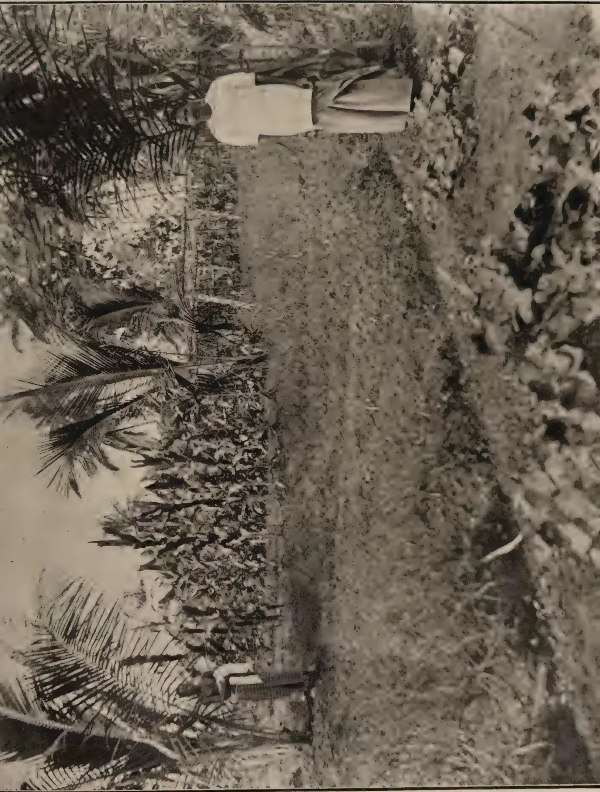
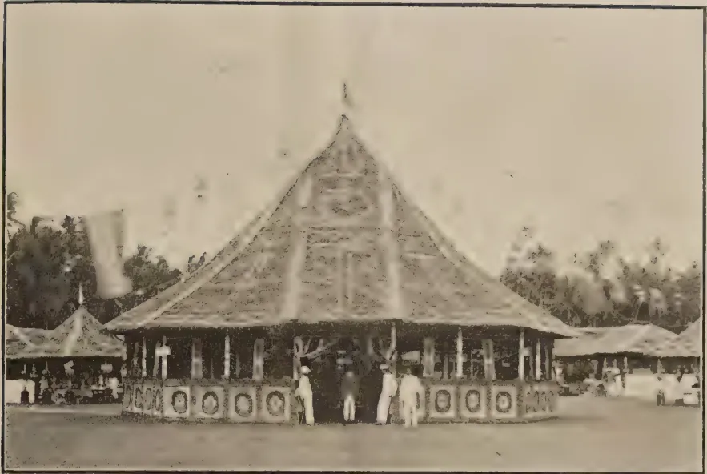
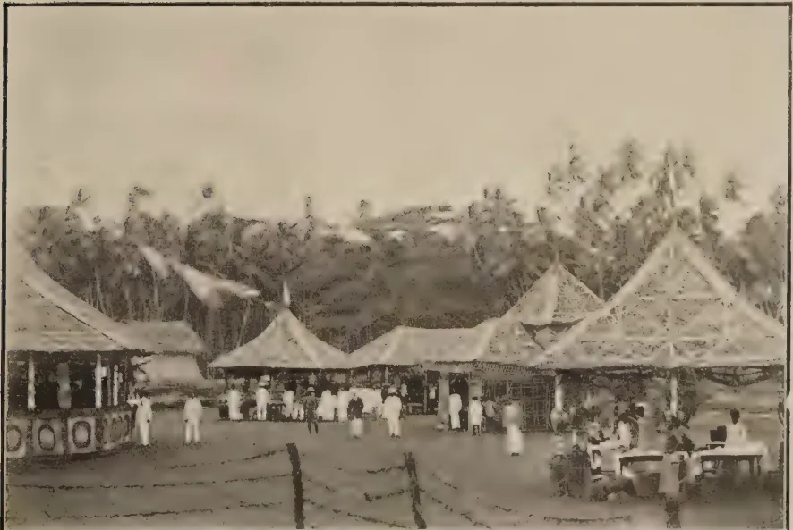
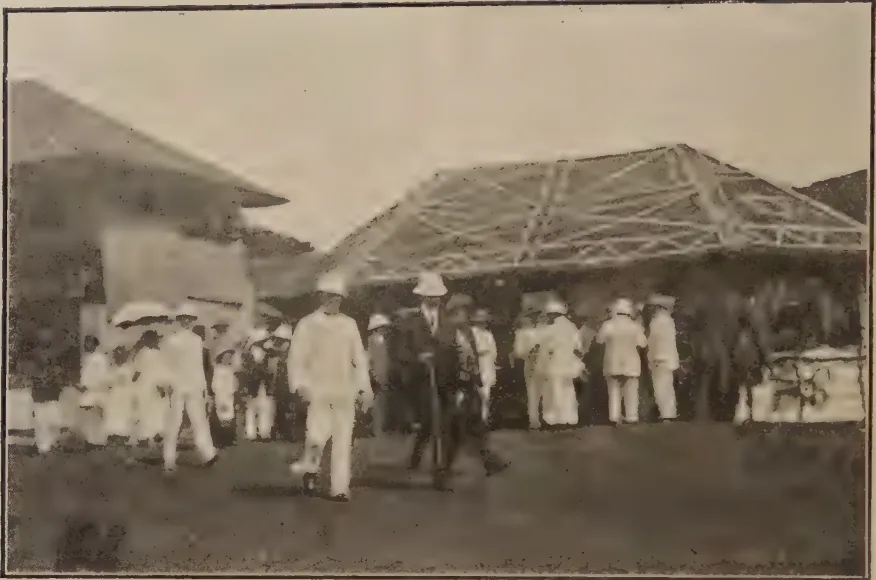
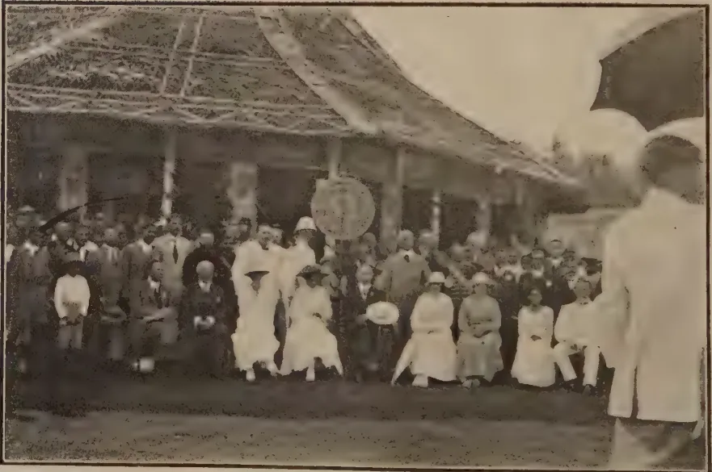
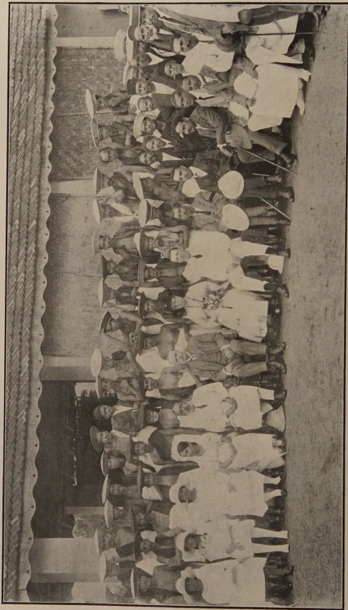

THE
TROPICAL AGRICULTURIST:
JOURNAL OF THE
CEYLON AGRICULTURAL SOCIETY.
VOL. LIII.
PERADENIYA, AUGUST, 1919.
No. 2.
THE CO-OPERATIVE CONFERENCE.
In the present number will be found details of the Conference of Co-operative Credit Societies held by HIS EXCELLENCY THE GOVERNOR at Colombo last month. The question of co-operation in agricultural industries has become of the greatest importance in recent years, and there is little doubt that co-operative credit is the means through which the improvement of village agriculture will be brought about. The details of the Conference should therefore be of interest to all members of the Agricultural Society, and the more so when it is realized that in co-operative banking there is a source of material, moral and educational enrichment.
The progress of co-operation in some Provinces of the Colony is now becoming steady. Members of societies are beginning to realize some of their obligations to themselves and to their societies, and are beginning to work together in a truly co-operative spirit. In other Provinces progress has been extremely slow and there are still parts of the Colony where no progress whatever has been made.
In those districts where a large number of Primary Societies have been established it is possible that the time has arrived for Unions and Central Banks.
This question was discussed at the Conference, as also was the question of increased working capital for the existing societies. There is room for two or three Central Banks in the Colony, and it is hoped that after a certain amount of propaganda work a beginning in this direction will be made.
66[AUGUST, 1919.The supply of manure for paddy and other crops through Co-operative Credit Societies has shown marked increases during the past two years, and naturally societies are asking whether the turn-over is not approaching a figure at which a Co-operative Supply Society can be organized, in order to economise on dealers' profits. It is possible that such a society might also provide the means for villagers to secure their agricultural tools and implements economically. Such a society would have to be established upon sound business lines, and the fullest investigations as to supplies would have to be made before competition with established concerns is undertaken. There is little doubt, however, that with careful management a Co-operative Supply Society could in Ceylon serve a very useful purpose in connection with the Primary Societies.
The amendment of the Ordinance in order to bring it up-to-date with the latest Indian Ordinance is desirable, and the majority of co-operative workers are agreed upon the general lines these amendments should take. Differences of opinion were expressed on the question of framing additional rules, it being thought that as much as possible should be left to societies to be dealt with in by-laws. There are, however, several existing rules that require some amendment, and there are some matters which should be dealt with by new rules.
The importance of educational and propaganda work was emphasized, and the necessity of carrying this work out in the vernaculars dwelt upon. Classes for co-operative workers and a further development of co-operation publications in the Colony seem desirable.
There were important discussions on the registration of small Mutual Provident Associations and the workings of "Chittu" Clubs.
Further concessions from the Postal Department were asked for, and concessions of freight and demurrage charges on the Railway urged. Representatives of several societies urged that societies should be allowed to depart from their banking or credit work and undertake agricultural operations on Crown Lands. The speculative character of such undertakings was pointed out to delegates, and it was thought that the utmost the societies should attempt at present would be the establishment of demonstration gardens and plots.
AUGUST, 1919.]67(Held at Colombo, July 2nd. 1919.)
HIS EXCELLENCY THE GOVERNOR presided.
In addition to the officers of the Department of Agriculture, representatives from 104 Societies and a number of visitors were present.
HIS EXCELLENCY delivered the Presidential address.
THE REGISTRAR (MR. F. A. STOCKDALE) read a report on the work of Co-operative Credit Societies in Ceylon.
"That steps be taken to incorporate Mutual Provident Associations or money lending clubs, either by provision in the Co-operative Credit Ordinance, or by further legislation."
THE HON'BLE MR. K. BALASINGHAM explained the existing legislation and how it did not cover the small Provident Associations. He favoured compulsory registration. THE HON'BLE MR. T. B. L. MOONEMALE seconded, and MR. C. A. BOTEJU supported. The Registrar of Co-operative Credit Societies spoke on the misuse of funds of these associations and how these defalcations reacted upon the Co-operative movement. It might be possible to bring these small associations under the Co-operative Credit Societies Ordinance. The resolution was approved, and HIS EXCELLENCY asked MR. BALASINGHAM to submit an outline of the legislative steps that might be considered to be necessary.
"That legislation be introduced to regularise cheetu clubs."
DR. C. A. HEWAVITARNE gave details of the working of these clubs and how they frequently led to misappropriations and disputes. He also emphasized the usefulness of the clubs when properly conducted. MR. C. H. Z. FERNANDO seconded the motion giving details of clubs that had come under his observation in Colombo. In almost every case trouble arose sooner or later. MR. G. F. PERERA supported, and the HON'BLE DR. H. M. FERNANDO gave an account of his enquiries into a cheetu club that at one time existed at the General Hospital. His Excellency thought that "penalization" as in the original resolution might have remained and stated that he would take the advice of the Attorney-General as to the desirability of taking steps for penalization. The resolution was passed.
"That additional facilities be provided for the collection of debts due to Co-operative Credit Societies, either by the amendment of the Village Committee Ordinance, or by giving additional power to the Registrar of Co-operative Credit Societies."
68[AUGUST, 1919.GATE MUDALIYAR WIRASINGHA moved the resolution and asked that the Village Tribunals might be empowered to try cases of recovery of loans due to Credit Societies up to Rs. 100 instead of Rs. 20 as at present, and that a debt be considered as in India to constitute a "dispute" and be dealt with under existing Rule 12. He stated that the present necessity of taking cases to Court involved trouble, expense and loss of time. Societies urgently required better facilities for recovery of over-due loans. MUDALIYAR E. B. GOONETILAKE seconded, and MR. C. A. BOTEJU supported. The latter speaker favoured the treatment of debts as disputes under Rule 12 framed under the Co-operative Credit Societies' Ordinance. The Registrar explained the present position in detail. THE HON'BLE MR. BALASINGHAM thought that it might be difficult to recognise a "debt" as a dispute but he thought something should be done to facilitate the work of the societies and to save the cost of legal action to the debtors. MR. H. L. DE MEL favoured action on lines similar to summary procedure on liquid claims. His suggestion was that a plaint be filed supported by an affidavit sworn to by the President and Treasurer free of stamp duty, and a summons obtained on summary procedure, execution to follow as a matter of course in the District Court. He thought that a simple course could be arranged for action in respect of claims by Co-operative Credit Societies, in Village Tribunals for sums up to Rs. 100, and in the Court of Requests for sums up to Rs. 1,000. MR. S. THIAGARAJA favoured the raising of the jurisdiction of Village Tribunals' action such as MR. DE MEL suggested or action by the Registrar, and MR. BOTEJU thought that action by the Registrar under a rule was desirable. GATE MUDALIYAR WIRASINGHA thought that both Village Tribunals and the Registrar of Co-operative Credit Societies should be given greater facilities in this matter. The resolution was passed and HIS EXCELLENCY stated that the suggestions would be referred to the Law Officers of the Crown.
(a) "That additional concession to societies be given by Government by exemption of official correspondence with the Registrar and the Revenue Officers of the Province or District from postage dues."
MR. J. KURUPPU moved the resolution, and also asked that consideration might be given to the exemption of postage dues on all correspondence of societies. MR. CHAS. COOREY seconded and DR. N. PARAMANATHAN and MR. L. M. P. JAYAWARDENE supported. The Registrar stated that Government has already given some concessions in regard to deposits in the Post Office Savings Bank. Societies were frequently asking that they might be allowed the privileges of franking correspondence. Some would be content with exemptions of postage dues on "official" correspondence, while others urged for total exemption. The resolution was passed and HIS EXCELLENCY stated that steps would be taken to provide societies with printed envelopes in which they would post their correspondence to the Registrar or the Revenue Officers.
(b) "That additional concessions to societies be granted by Government by reduced rates of freight on manures and other supplies consigned to Co-operative Credit Societies."
THE HON'BLE MR. O. C. TILLEKERATNE moved this resolution and stated that it was desirable to help Co-operative Credit Societies in every possible way. He urged that all goods consigned to Co-operative Credit Societies should be carried at the lowest freight rate irrespective of quantity sent. MR. D. M. RAJAPAKSA, J.P. seconded, and MR. R. F. DIAS BANDARANAIKE supported. The resolution was agreed to. HIS EXCELLENCY said the matter was of some difficulty. When manure was carried up to a full waggon load of 4 tons some concession might be possible for a limited period. He would ask the Railway Advisory Board to consider the matter, but he could not hold out hopes that the concession would be possible.
AUGUST, 1919.]69(c) "That additional concessions to societies be granted by Government by an extension of days allowed for removal of manure and other supplies consigned to Co-operative Credit Societies on the Ceylon Government Railway before charges for demurrage begin."
MR. D. M. RAJAPAKSA, J.P., moved the resolution and explained that societies were frequently considerable distances away from the railway and even from a Post Office. Instances had occurred where demurrage charges had begun before the invoice notice of arrival had been received. He thought that for Co-operative Credit Societies this period should be extended. MUDALIYAR C. H. A. SAMARAKODDY seconded, and MUDALIYAR D. T. PERERA supported. It was urged that societies were encouraging the use of manures and thereby helping to increase food crops. Every concession possible was therefore asked for. The resolution was agreed to. HIS EXCELLENCY expressed his sympathy with the resolution and said that it was also recognised by the General Manager, Railways. The matter would be gone into by the General Manager, Railways, and the Railway Advisory Board, with the object of deciding whether Co-operative Credit Societies can be granted better terms in regard to demurrage than individuals.
"That steps be taken for the formation of Co-operative Credit Societies' supply society to facilitate the supply of manure, seeds, tools, and other requirements at the cheapest possible rates."
GATE MUDALIYAR GOONERATNE moved the resolution, MUDALIYAR MUTTUKUMARU seconded, and DR. HEWAVITARNE and MR. R. C. KANANGARA supported. The Registrar explained the present arrangement with the Colombo Commercial Company in regard to supplies of manure and thought that if and when the business of the Co-operative Credit Societies warranted the establishment of a central supply society this matter should be organized in the form of a Central Society. HIS EXCELLENCY THE GOVERNOR said the resolution was a good one and the question of gradually organising some central supply associations could be left with the Registrar. It was hoped that this could be taken up in due course with the object of supplying societies as cheaply as possible. The resolution was passed.
"That facilities be granted to Co-operative Credit Societies to lease Crown Lands on easy terms for cultivation of food stuffs."
MR. F. D. SAMARASINGHA moved this resolution which was seconded by MR. M. D. WIJEWARDENE and supported by MESSRS. D. N. GOONEWARDENE, P. B. DELDENIYA, R. P. WIRASURIYA, M. S. B. WIJETILAKE, M. S. SUBRAMANIAM and MR. V. MUTTUKUMARU. MR. S. A. WIJETILAKA made reference to the lease of Maha-iluppalama and suggested that preferential treatment should be given to Co-operative Credit Societies. MR. THIAGARAJA said that it was not yet demonstrated how far Co-operative Credit Societies could succeed and he objected to their embarking upon matters without their sphere of action. HIS EXCELLENCY agreed with MR. THIAGARAJA and stated that societies should not try to embark in matters of land speculation. For lands for demonstration gardens or cultivations, favourable terms might be granted, but he was strongly opposed to attempts at land exploitation by Co-operative Credit Societies. MUDALIYAR SAMARASINGHA stated that the leases he had in view were for the cultivation of food-stuffs and for the purpose of demonstrating to villagers what could be done. The resolution was agreed to.
70[AUGUST, 1919.RESOLUTION VII."That steps be taken to encourage Co-operation in Industries."
MR. H. L. DE MEL explained that Co-operation in Industries would be beneficial. He was supported by MUDALIYAR E. PEIRIS and MR. N. SIVAKOLUNDU. HIS EXCELLENCY stated that the matter was one worthy of thorough consideration and asked MR. DE MEL to submit his views in greater detail. The resolution was then agreed to.
RESOLUTION VIII."That steps be taken to organize classes for the training of office-bearers of societies and other Co-operative workers."
MR. W. A. DE SILVA moved the resolution and further urged that a lending library of co-operative literature should be provided. MUDALIYAR AMARASEKERA seconded, and MUDALIYAR HARRY JAYAWARDENE supported. HIS EXCELLENCY asked that MR. DE SILVA should submit his views in writing in greater detail, when he would be glad to go into the matter fully. MR. DE SILVA agreed and the resolution was passed.
VOTE OF THANKS.The HON'BLE MR. K. BALASINGHAM proposed a vote of thanks to HIS EXCELLENCY THE GOVERNOR.
HIS EXCELLENCY responded.
(The morning session terminated at 12-15 p.m.)
AFTERNOON SESSION.THE REGISTRAR OF CO-OPERATIVE CREDIT SOCIETIES presided.
The Secretary, Board of Control of Co-operative Credit Societies, read a brief summary on the work of Societies in the different districts of the Colony.
THE CHAIRMAN read a paper on the "Principles Underlying Co-operation" which it was agreed on the motion of MR. N. SIVAKOLUNDU should be printed as a leaflet of the Co-operative Credit Societies' branch of the Department of Agriculture and distributed to all Societies.
AGENDA ITEM 1.Amendment of the Co-operative Credit Societies Ordinance.The Registrar explained that the Ceylon Ordinance was based upon the India Act of 1904. This had been replaced in India by the Act of 1912 which introduced several important amendments. It was thought desirable that the Ceylon Ordinance should be brought up to date and the Board of Control had gone into the matter carefully and had recommended certain amendments. The principal of these were indicated to the meeting. A full discussion took place in which MESSRS. J. A. PERERA, S. A. WIJATILAKA, D. C. WIJESINHA, S. F. AMARASINHA, V. MUTTUKUMARU and C.D.A. GOONEWARDENE took part. MR. GOONEWARDENE suggested that all the proposed amendments be examined in detail by a Committee. To this the Chairman agreed and appointed GATE MUDALIYAR WIRASINHA, MUDALIYAR V. MUTTUKUMARU and MUDALIYAR W. A. AMARASEKERA a Committee to assist him in drafting the amendments before submission to the Attorney-General. This Committee was unanimously agreed to.
AUGUST, 1919.]71AGENDA ITEM 2.Amendment of Rules and Provision of New Rules.THE CHAIRMAN said this item followed upon the amendment of Ordinance. The Secretary of the Board of Control explained in detail the proposed amendments and additions. Mr. C. A. BOTEJU supported the proposed amendments and also the REV. S. GEORGE MENDIS. MR. C. E. COREA urged the necessity of making rules as simple as possible and allowing societies the maximum of freedom in framing by-laws in place of rules. He suggested that the suggested amendments and additions might be circulated amongst societies before final adoption.
THE CHAIRMAN agreed to place the proposals in regard to amendments and additions to Rules before the Committee elected to deal with the Ordinance and then to circularize the suggestions. This proposal was unanimously agreed to.
RESOLUTION IX."That provision be made for the Reserve Funds of Societies to be utilized with the sanction of the Registrar in part for the general business of the Societies and in part for investment upon approved security."
MUDALIYAR ILANGAKOON moved the resolution and explained how the existing arrangements compelled societies to lock up considerable sums in the Savings Bank at a time when money was badly needed. Most primary societies had not borrowed heavily, they were of unlimited liability and could safely be allowed to use part of their Reserve Funds for the ordinary business work of the Society. MANIAGAR J. N. SANDARASEGERA seconded, and the REV. A. A. WARD supported.
THE CHAIRMAN stated that in India some of the Reserve Funds were used for business purposes by Primary Societies and he was in favour of such a proceeding provided that adequate provision was made for investment of certain proportions of the Reserve Funds where societies borrowed from Government or others. The resolution was passed and the Chairman undertook to represent the matter to Government when the Ordinance was being amended.
RESOLUTION X."That it is desirable to begin the establishment of Unions and Central Banks for assisting Primary Societies."
GATE MUDALIYAR WIRASINHA moved that the time had come in some districts when Primary Societies should be grouped into Unions, and for the establishment of Control Banks on lines similar to those in vogue in India. MUDALIYAR W. A. AMARASEKERA seconded, and RATEMAHATMAYA H. W. BOYAGODA, and MR. C. D. A. GOONWARDENE supported. The Secretary, Board of Control, explained the practice of India, and the Chairman stated that he hoped in a year or so to make a beginning in certain districts in Ceylon. The Resolution was agreed to.
RESOLUTION XI."That means of securing additional working capital for Primary Societies be devised."
THE HON'BLE DR. H. M. FERNANDO moved this resolution, explaining what was done in India. THE HON'BLE MR. MOONEMALE seconded, and MR. C. P. DE S. SENANAYAKE supported. The Registrar explained that in India Societies worked on 66 % borrowed capital, while in Ceylon Societies had
72[AUGUST, 1919.only borrowed 20%. He thought that Unions and Central Banks were desirable. These would be able to assist Primary Societies in the provision of capital. More deposits were also desirable, and it might be possible to arrange for deposits from non-members. The Resolution was agreed to.
"That the Annual Report of the Registrar, and that all Proceedings of Conference dealing with the work of Co-operative Credit Societies, be published in the vernaculars and distributed widely throughout the Colony."
MR. W. A. DE SILVA explained the desirability of publicity. Confidence would be gained thereby and the Co-operative Movement would spread. If these reports were distributed widely in the vernaculars, the usefulness of co-operation would be quickly realized. MR. D. M. P. R. SENANAYAKE seconded, and the following spoke in support:—MESSRS. J. V. KANNANGARA, C. D. A. GOONEWARDENE, V. MUTTUKUMARU, REV. C. F. WILLIAMS and DR. HEWAVITARNE.
THE CHAIRMAN explained what was done at the present time in the way of leaflets and through the vernacular publications of the Agricultural Society. He said that he was in sympathy with the resolution and would place the matter before Government. The Resolution was then passed.
MR. W. A. DE SILVA proposed a vote of thanks to the Registrar of Co-operative Credit Societies, and MR. N. SIVAKOLUNDU seconded. The Chairman thanked delegates for their attendance and for their assistance. This was interpreted into Sinhalese by the Secretary of the Board of Control and the conference was declared closed.
F. A. STOCKDALE,
(Registrar, Co-operative Credit Societies.)
The presentation of a brief report on the work of Co-operative Credit Societies in Ceylon is a matter of some difficulty, as the work of individual societies actually differs according to the conditions in which they are placed. The movement, however, may be claimed to date from 1913, when active propaganda work was undertaken by the Agricultural Society and by the Secretary to the Board of Control. Details concerning the working of the various societies were presented to the last Co-operative Conference held in 1914, and have been given in the various annual reports that have been published since that date. On assumption of office in this Colony, after previous experience with Co-operative Credit Societies in Mauritius, I found it desirable that a thorough inspection of all Societies should be made, and that their business should be placed upon a thoroughly organised basis. Large number of members had been enrolled, which had taken no steps to fulfil their promises of subscribing for shares in Societies, books of accounts needed adjustment, nominations by members were required, and many loans were outstanding and needed collection. In the proper organization of business-like methods personal appeals were made to presidents and office-bearers of societies and much hard work was demanded of the co-operative officers provided by Government. It was felt that there could be little
AUGUST, 1919.]73prospect of substantial success unless these primary societies were being run on sound lines and that the officers provided by Government for the furtherance of co-operation should, in accordance with the Indian custom, be responsible for seeing that this was accomplished, and that they should act as guides and counsellors in all matters upon which the societies should desire information.
The societies have been classified as follows :—
| A. | B. | C. | D. | E. | ||
|---|---|---|---|---|---|---|
| Good. | Fair. | Bad. | Recently Formed. | Not Working. | Total. | |
| 1916-17 ... | 26 | 22 | 4 | 1 | 18 | 71 |
| 1917-18 ... | 49 | 28 | 4 | 8 | 3 | 92 |
| 1918-19 ... | 58 | 29 | 10 | 2 | 4 | 103 |
All societies, in which there was little chance for success, have had their registration cancelled and the funds collected have been distributed to subscribers. In all co-operative work there is much spade work which cannot be shirked, and it was felt that a few societies working along really sound lines was preferable to a large number of societies performing work of a second-rate and doubtful character. The success of the movement is not to be gauged by the number of societies in existence but rather in the work that they are performing. The progress in the number of societies registered is shown in the following :—
| 1913-14 ... | 37 | 1916-17 ... | 71 |
| 1914 15 ... | 54 | 1917-18 ... | 92 |
| 1915-16 ... | 55 | 1918-19 ... | 103 |
The increase has been due to conscientious work performed in the interests of the movement by Headmen of Government, and to a small band of unofficial enthusiasts scattered throughout the Colony. The ultimate success of the movement must depend upon unofficial effort and it is from the general public that assistance is required.
The chief object of co-operation in this Colony, as in India, is to deal with the stagnation of the poorer agriculturists who constitute the bulk of its population. Agricultural methods are most likely to be improved when the financial credit of the cultivator is improved, when they are bound together in societies or Associations with a common purpose, and when certain features of a backward condition of life have been removed. Through these societies it is also hoped that a demand for further education may be fostered, and a desire to depart from that "conservatism" in matters agricultural, which is only too often based on ignorance, would be created. It also seemed possible that the Agricultural Department would be able to make its influence upon the agriculture of the peasant felt better through associations of cultivators, than it would through individuals scattered over a large area and often in not readily-accessible localities. With this belief, it has been endeavoured to further the work of Co-operative Credit Societies in every direction that the circumstances warranted. It had not to be forgotten that co-operation as prescribed by the credit societies Ordinance was new in the Colony, that office-bearers had to be trained to their duties, and that the first desirability of the work of all primary societies was stability.
The societies in Ceylon have been formed on the Italian model and are similar in many respects to the societies of the Punjab and parts of Burma. With but few exceptions they however suffer from a common fault, and a fault which is contrary to the principles of true co-operation. The areas of operations are not sufficiently restricted. The true unit for co-operation amongst the village cultivators of this Colony should, as in India, be the village. In Ceylon, however, it has been customary to form societies for
74[AUGUST, 1919.very much larger areas. The success of a society is not to be judged by the number of its members but rather by the knowledge that members have of each other's affairs and of the affairs of the society and by the procedure in regard to loans and the uses to which they are put. With the provision of a larger inspecting staff it is hoped to be possible to restrict the areas of operations of societies, to make them more truly co-operative and to arrange for their affiliation to Unions and Central Banks. This will involve much work and the assistance of a number of willing un-official workers will have to be solicited before any considerable progress is accomplished. The details given below show that the societies are becoming stable and there is no doubt that the seeds of co-operation have been sown. At present, however, the success of societies depends far too much upon the work of the president and other office-bearers. More effort is required from all members especially from those that are educated. If members realize that they have the control of the whole of the affairs of the societies in their hands and that they are at perfect liberty to frame the policy of the society for the benefit of the whole, there will be evinced a greater keenness.
The increase in membership of societies is shown in the following :—
| Year. | No. of Members. | Increase. |
|---|---|---|
| 1913-14 | ... 1,820 | — |
| 1914-15 | ... 3,850 | 2,030 |
| 1915-16 | ... 4,068 | 218 |
| 1916-17 | ... 6,027 | 1,959 |
| 1917-18 | ... 9,551 | 3,529 |
| 1918-19 | ... 11,310 | 1,759 |
During the last three years the number of members relates solely to those that had contributed for at least one share in a society. In the former years the numbers enrolled were reckoned, whether they had subscribed to the capital of a society or had only promised to do so. The deposits in societies are shown in the following table :—
| Year. | Amt. of Deposit. | Increase. | ||
|---|---|---|---|---|
| Rs. | Cts. | Rs. | Cts. | |
| 1913-14 | ... 22 | 50 | — | — |
| 1914-15 | ... 29 | 74 | 7 | 24 |
| 1915-16 | ... 327 | 40 | 297 | 66 |
| 1916-17 | ... 486 | 84 | 159 | 94 |
| 1917-18 | ... 2,954 | 85 | 2,468 | 01 |
| 1918-19 | .. 4,772 | 51 | 2,304 | 40 |
| Total | ... 8,593 | 84 | 5,237 | 25 |
The profits of societies have been as follows :—
| Year. | Rs. | Cts. |
|---|---|---|
| 1913-14 | ... 23 | 05 |
| 1914-15 | ... 875 | 10 |
| 1915-16 | .. not available | |
| 1916-17 | ... 2,423 | 51 |
| 1917-18 | ... 4,772 | 18 |
| 1918-19 | ... 7,302 | 03 |
The following amounts show the position of reserve funds at the end of each year :—
| Year. | Rs. | Cts. |
|---|---|---|
| 1913-14 | ... | 23 05 |
| 1914-15 | ... | 746 93 |
| 1915-16 | ... | not available |
| 1916-17 | ... | 3,245 72 |
| 1917-18 | ... | 6,675 00 |
| 1918-19 | ... | 11,243 17 |
Some societies have made distributions of profits. These have not been paid over in cash, but members have wisely decided that profits available for distribution should not be paid in cash and thereby reduce the working capital of societies, but should be credited in the pass books of members as non-interest bearing deposits or non-profit earning share payments.
The amounts credited as having been distributed amongst members out of profits have been as follows :—
| Year. | Rs. | Cts. |
|---|---|---|
| 1916-17 | ... | 367 13 |
| 1917-18 | ... | 392 22 |
| 1918-19 | ... | 1,461 44 |
The business of societies is indicated from the issue and recovery of loans as shown by the following figures :—
| Year. | Issued. | Recovered. | ||
|---|---|---|---|---|
| Rs. | Cts. | Rs. | Cts. | |
| 1913-14 | ... | 3,816 00 | 550 00 | |
| 1914-15 | ... | 21,627 58 | 6,317 49 | |
| 1915-16 | ... | not available | not available | |
| 1916-17 | ... | 28,381 36 | 15,222 37 | |
| 1917-18 | ... | 41,407 77 | 31,205 40 | |
| 1918-19 | ... | 72,442 05 | 48,795 74 | |
Lastly, the paid-up capital of societies is worthy of notice. It has been as follows :—
| Year. | Rs. | Cts. |
|---|---|---|
| 1913-14 | ... | 12,000 00 |
| 1914-15 | ... | 18,782 50 |
| 1915-16 | ... | not available |
| 1916-17 | ... | 32,994 25 |
| 1917-18 | ... | 48,549 10 |
| 1918-19 | ... | 68,062 55 |
The share payments in Ceylon amount to 80% of the working capital of societies. In India the average is 31.4%. It will thus be seen that the movement in Ceylon has had to finance itself to a much greater extent than in India, and the time has now come to consider what steps can be taken here to secure a greater amount of outside working capital. This will only be accomplished by the formation of Unions and Central Banks responsible for financing primary societies.
Societies in Ceylon have not limited themselves to loans of money. The provision of loans of manure has been most popular and has helped
76[AUGUST, 1919.many societies to prove their value to the cultivators. The distribution of manures by societies has been as follows :—
| Year. | Quantity. | Cost. | ||||
|---|---|---|---|---|---|---|
| Tons. | Cwt. | Qrs. | Lb. | Rs. | Cts. | |
| 1916-17 ... | 99 | 13 | 2 | — | 7,522 | 45 |
| 1917-18 ... | 160 | 2 | 2 | 8 | 13,591 | 85 |
| 1918-19 ... | 233 | 6 | 1 | 24 | 25,600 | 70 |
It is a matter for regret that there are available for Ceylon no data based upon scientifically arranged experiments on the influence of different artificial manurial constituents on the paddy crop.
Advice on this point has to depend upon the asserted experience of cultivators and upon the results that have been secured from manurial experiments in India, Japan and other countries. It is hoped to remedy this defect when the expansion of the Agricultural Department takes place, and ultimately to arrange for organized co-operative experiments with members of various Co-operative Societies.
Some societies have undertaken with success the lease of Crown lands for cultivation by members. Others have undertaken garden cultivations, while a recently formed society in the Northern Province has provided for passenger and freight service by a fleet of boats, and is now organizing a business in the storage and sale of paddy.
"The boat service between Kolumbuturai and Punakari was started on the 3rd February, 1918, with two boats. In April two more boats were taken on hire. In June one of the hired boats was discontinued, as the busiest season for transport of agricultural produce ceases by about the end of May.
During the four months beginning from February, 2,821 passengers, 222 cart loads of straw, 12,653 bushels of paddy, 50 bags of rice and 232 heads of cattle in addition to miscellaneous packages were transported. Previous to the establishment of the boat service, the boatmen of Kolumbuturai and Punakari charged very high rates. But now, they have reduced their rates. The subjoined statement will show the reduction in rates.
| Former Rates. | Present Rates. | |
|---|---|---|
| Passengers ... | 25 cents | 15 cents |
| Cart load Straw ... | Rs. 2.50 | Re. 1.50 |
| Paddy per Bushel ... | 6 cents | 3 cents |
| Rice per Bag ... | 25 " | 18 " |
| Cattle per Head ... | 36 " | 25 " |
It is estimated that during the four months, the people of Jaffna have made a saving of Rs. 4,000 in fares. There is no doubt that if the business is managed properly, it will be a paying concern and will be a great benefit to the people."
There is little doubt to those in control of the Co-operative Movement in the Colony that sound progress is being made. The progress may not have attained to the hopes of many, but considering the difficulties that the village cultivator has had to contend with during the past five years of war it has not been inconsiderable. With the prosperity of the forthcoming years greater progress is assured.
AUGUST, 1919.]77The stability of many societies in the Colony however rests at present upon the efforts of one or two energetic and enthusiastic office-bearers or Members of Committee. This must not be. They must pass their enthusiasm on to others and thereby stabilize the movement. Thanks are due to them for their efforts in the past, but they must realize that there is much yet to be accomplished and that this will demand further devotion and work.
F. A. STOCKDALE,
(Registrar, Co-operative Credit Societies.)
An individual by reason of his small means or of his small annual turnover is unable to secure credit either in adequate quantity or at rates which will enable him to work at a profit. But when a number of such individuals combine together in a society and become liable for the debts of the society to the extent of the whole of their assets, it is possible for them to secure credit on reasonable conditions.
Such societies are primary societies and their position is naturally strengthened if a number of well-to-do persons join to support the credit of their poorer neighbours. The real security of such a society consists however not so much in the material assets of the members, but in their desire to use the borrowed money for productive purposes and to repay the loan from the profits made therefrom.
The main principle underlying co-operative credit is that groups of persons combine together to furnish a collective guarantee and thereby obtain credit or money at lower rates of interest than can be secured individually.
The collective guarantee may be that of real property or it may be a personal one. Primary societies depending as they do for their credit mainly on the personal pledges of their members should be of unlimited liability and work under a union and central bank in which they hold shares. It is therefore clear that for successful work by a primary society, the following conditions should be fulfilled :—
The ideal of the whole movement is mutual confidence and collective liability, and a society that has grasped the above essentials and acts upon them cannot fail to be truly co-operative.
Now what are the actual conditions of the primary societies in Ceylon?
Firstly—the areas of operations are generally too large.
The true unit of the primary society is the village and not as is often the case a Chief Headman's division or a considerable part of it. This use of expansive areas has been brought about by circumstances which could not be controlled. The establishment of societies in Ceylon has been made possible to a very great extent by the efforts of Chief Headmen. They naturally could not, with their multifarious duties, organize and assist large numbers of small village societies especially when it was difficult to secure secretaries and treasurers capable of attending to the book-keeping necessary. They therefore had to organize one or more societies according to circumstances for their division in the hope that members would be trained sufficiently to be entrusted later with small societies in the different villages.
A large area for a primary society is wrong, and true co-operation is only likely to be fostered when the unit is a single village or at the most two to three adjoining villages. In Ceylon, we must now begin to aim towards an adoption of this principle underlying co-operative credit. Primary societies should consist of members so closely in touch with one another that they are willing to be jointly and mutually responsible for all the affairs of their society.
Secondly—there is an attempt by many societies to enrol a large membership.
While it should be the desire of all interested in co-operation to enrol in the movement as many persons as possible, it is necessary that societies should not have too many members. Much better to have two, three or more small societies. Again, I am aware of the difficulty in securing suitable office-bearers for a large number of societies, but I believe that they can be found and that we should not depart from the true principles of co-operation beyond a point for which we can easily and readily return. In India, the average membership of primary societies is 41, and a maximum of 50 to 100 members in any society is generally insisted upon.
Thirdly—the question of unlimited liability for primary societies is not clearly understood.
Provision for societies with both limited and unlimited liability is made in the Ordinance. This was necessary so that central or financing societies and industrial societies could be organised with limited liability and agricultural primary societies with unlimited liability. This was in accordance with the Old Indian Act of 1904, but the revised Act of 1912 in India makes it compulsory for the liability of all agricultural primary societies to be unlimited. In small societies composed of poor cultivators dependent upon their personal security solely for credit purposes, liability can only be limited if they are to obtain satisfactory deposits or advances. It is often heard that wealthier members of the village community may be loathe to join such a society, but in practice such has not been found to be the case. If necessary provision can be made as is done in some European countries for "guaranteeing-members" whose liability can be limited. The wealthier members can, however, also assist primary societies either by deposits or advances. There are agriculturists in the Colony who do not require credit of the kind provided by the village society, and for these it is possible that primary societies with limited liability would be necessary. For village societies the liability should clearly be unlimited.
Fourthly—the question of repayments of loans presents some difficulties
In many instances overdue loans have been to a great extent due to slackness on the part of office-bearers of societies and in some instances they have been brought about by the unsettled conditions in the villages in 1915. It is
AUGUST, 1919.]79most essential that Committee members should meet regularly every month and enquiries should be made into every loan issued. Members must be made to realize that they must repay their loans on the due dates or supply the information necessary to the Committee for the consideration of any possible extension. There have also been cases in some societies of fictitious repayments. The attention of office-bearers has been drawn to these. The practice consists of showing an outstanding loan in the accounts as fully repaid and sanctioning on or about the same date a fresh loan of the same amount. Such a practice occurs usually in societies that are not being sufficiently controlled by their Committee, and must be put a stop to, at an early date.
Fifthly—the principles underlying the accumulation of surplus assets as a reserve fund are not clearly understood.
The ideas of the originators of Co-operative Credit Societies was that the reserve fund should be indivisible and should eventually increase to such an extent as to form the working capital of the society. In these cases the whole of the net profits of the societies were carried to reserve. In India at present many societies carry the whole of their profits to the reserve fund and very few primary societies distribute profits as dividends or bonuses on shares.
The matter of the investment of reserve funds will be dealt with later this afternoon and need not be dealt with here. It may be said however that there would appear to be no reason why reserve funds or part of them should not be utilized for loans to members, provided that adequate reserve is deposited by societies which have received loans and that adequate fluid resource is available to those that have received considerable deposits.
Lastly—the question of the division of profits is a matter of difficulty.
According to the ideal of co-operation there should be no distribution of profits. They should all be pooled in a common fund—the reserve fund—for the benefit of all. Members of societies in Ceylon are not prepared to act fully up to this ideal. Where societies have decided upon a distribution of profits it has been recommended that such profits should not be paid out in cash, but should be credited to members as payments towards non-profit earning shares or as non-interest bearing deposits. In this manner the working funds of the societies have not been diminished and the principles of co-operation are in part met. This distribution of profits involves also difficulties in regard to the rights of old and new members and careful supervision by the Registrar and the supervising staff is necessary if they are to act as guides to societies in a matter of some complexity, leading eventually, if uncontrolled, to a situation which may give rise to disputes and dis-ruption.
The following table taken from the Annual Report of the Registrar of Co-operative Credit Societies, Bombay, for the year 1918-19 shows the solid progress that has been made in the Presidency:—
| Type of Society | Number of Societies | Number of Members | Working Capital in lakhs | |||
|---|---|---|---|---|---|---|
| 1917 | 1918 | 1917 | 1918 | 1917 | 1918 | |
| Central Banks | 8 | 10 | 2,446 | 4,676 | Rs. 27.17 | Rs. 42.49 |
| Agricultural Societies | 091 | 1,390 | 80,762 | 101,333 | 52.14 | 71.99 |
| Non-Agricultural Societies | 182 | 215 | 47,695 | 50,796 | 43.90 | 48.40 |
| Total | 1,281 | 1,615 | 130,903 | 156,805 | 123.21 | 162.88 |
| Unions | 22 | 31 | — | — | — | — |
| Insurance Societies | 4 | 4 | — | — | — | — |
| Grand Total | 1,307 | 1,650 | 130,903 | 156,805 | 123.21 | 162.88 |
Minutes of Proceedings of a Meeting of the Board of Agriculture held at Matara, on 28th June, 1919.
The second quarterly meeting of the Board of Agriculture for the year 1919, was held at the Matara District Court, at 9 a.m., on Saturday, the 28th June, 1919. In the absence of HIS EXCELLENCY THE GOVERNOR who was to have presided, the Director of Agriculture took the chair.
A large and representative gathering was present, including among others the following:—Sir Solomon Dias Bandaranaike, Mr. T. Reid, Assistant Government Agent; the Hon'ble Mr. O. C. Tillekeratne, Rev. Fr. Paul Cooreman, Rev. G. S. Mendis, Dr. C. A. Hewavitarne, Mr. H. L. De Mel, C.B.E.; Mudaliyars Tudor Rajapakse, S. W. Illangakoon, Harry Jayawardene, President Irving Goonewardene, Messrs. C. Zanetti, Gerard A. Joseph, D. M. Rajapakse, F. L. Daniel, D. Samaraweera, L. Perera, J. S. W. Illangakoon, A. W. Winter, E. J. Buultjens, H. E. Ameresekera, W. A. Ameresekere, V. S. Wickramanayake, the Director of Agriculture, Mr. C. Drieberg (Secretary) and others.
The Director occupied the chair and explained the cause of His Excellency's inability to preside on the occasion.
Minutes of previous meeting were read and confirmed.
The Progress Report having been already circulated, the Secretary thought it unnecessary to detain the meeting by reading it. On the motion from the Chair, seconded by Sir SOLOMON DIAS BANDARANAIKE, it was duly adopted.
Statement of Accounts to 30th May, 1919, and the list of subscribers in arrears were tabled for information of members.
MUDALIYAR ILLANGAKOON read his paper on "Village Agriculture: Some of its practical difficulties and suggestions for reform in relation to the Matara district." MR. DE MEL said the meeting was much obliged to the Mudaliyar for espousing the cause of the rural agriculturist. If all Headmen and Mudaliyars took similar interest, the wealth of the rural population could be much increased. One point on which he would like to make remarks was the absentee proprietor. Legislation would create a howl from the public regarding liberty of the subject: but the proposals introduced by the late SIR JOHN ANDERSON re local Government in the villages might if introduced prove some effective means of tackling the absentee landlord by taxing him on the capital value of the land. Local Government would follow in its wake other improvement in villages.
AUGUST, 1919.]81MR. BUULTJENS agreed in the vote of thanks for the paper which showed the great interest the Mudaliyar took in agriculture. He would however differ in regard to the 50% interest on seed paddy and the reference to the "bârakâraya."
MR. REID said MR. BUULTJENS raised the point who the absentee landlord is. He thought the Mudaliyar refers to the people who live in Matara and possess lands 20 or 30 miles away, as compared to the planter who lives on the estate. The question was whether the charge against the absentee landlord is true or not. In the effort to increase food production transplanting was done in Gangaboda pattu where a great amount of land is owned by absentee proprietors. While all other fields are transplanted, none of those belonging to the absentee landlord is so cultivated, although he knows the advantage to be gained. He was afraid in that district the big-landed proprietors were guilty of wholesale neglect. He joined the previous speakers in thanking the Mudaliyar for his paper lucidly written and lucidly read.
MR. WINTER contrasted the lands always under cultivation in India with those in the Wanni. In India the water was drawn by bullock and man : in Ceylon if the several tanks were restored there would be no drought to fear, though labour was a question to consider.
MR. TILLEKERATNE said the remarks "it depends more on the educated and intelligent classes to make this determined effort—the goiyas are poor and ignorant" was a statement of a man who has moved with the Goiya and moved with the people. It has been said that the shortage of food was due to the indolence of the villager ; this is not so but due to want of money. The agricultural requirements of the Southern Province should be considered at the earliest possible opportunity. The Northern Province was being served first, and he hoped the Southern Province will receive attention.
MR. N. WICKREMARATNE, MR. WICKREMANAYAKE and DR. HEWAVITARNE also offered remarks after which the Chairman wound up the discussion.
The paper on the "Organization of Food Production Committees" by MESSRS. SENIOR WHITE and THOMSON, in the absence of the writers, was taken as read. No discussion ensued.
MR. H. L. DE MEL read his paper on "Some experiences in Growing Food Crops."
This paper also lead to a considerable discussion.
MR. WICKRAMANAYAKE dealt with questions affecting the cultivation of food products in the neighbourhood of Tangalle. MR. WINTER spoke upon the difficulties that cultivators had to contend with and upon the desirability of a revision of the policy in regard to guns.
The Chairman thanked MR. DE MEL for his paper. It showed the results of a determined effort to cultivate food-stuffs upon estates in the Kurunegala district and he was glad to hear such good accounts of work performed by passed students of the School of Agriculture under MR DE MEL's direction.
The meeting terminated with a vote of thanks to the chair.
82[AUGUST, 1919.Meetings.—The last quarterly meeting was held at the Planters' Association Hall, Kandy, on the 29th January last, His Excellency the Governor presiding, when a number of interesting papers were read dealing mainly with the subject of increased food production.
Membership.—The following members have joined during the period under review:—C. D. Carolis, Hon. Secretary, Maskeliya Planters' Association, Maskeliya; E. J. Samarawickrema, M. K. Nagalingam, H. W. E. Cooray, D. F. Wijenarayana, W. F. Frosdick, J. Vassilieff, Det Ostasiatische Kompagni (The East Asiatic Co.) Copenhagen; S. Takenouchi, S.S., Dr. L. Verkey, Kolong Rangsit; Maclean Kay, Seychelles Islands; L. Institute Colonial de Marseille, France; R. G. Hunt, Sarawak; A. H. Senaratne, Superintendent, Mukalana Estate, Matugama; Superintendent, Poolbank Estate, Hatton; W. J. Hurst, Fernando Cannon, Manila; C. Creasy Hood, W. H. Shockman, W. A. Ameresekere, Theodore Gunaratne, C. W. Bibile, P. L. Potger, R. J. Wijetunga, M. Solomon Fernando, S. Welayden, L. James Pereira, P. D. C. Victor, G. A. C. Wyllie, S. W. Illangakoon, Mudaliyar; T. Clark Munro, Sam S. Weerasuriya, Austin Ekenayake, Superintendent, Houpe Estate, Kahawatte; Yeshvarataro Govind Gurjar, India; Superintendent, Gonagama Estate, R. F. Battams, Mrs. Fox Male, Singapore; E. F. Hawke, Superintendent, Pudukad Rubber Co., Ltd., India; Manager, Belin Rubber Estate, Burma; P. M. Gopalakrishnan, India; D. N. Stafford, Uganda; D. C. Macdonald, Bernard Austin Keyser, and W. R. Stamforth, Travancore.
In view of the large sum outstanding as subscription due, it was decided to submit names of members who are in arrears for more than a reasonable period to the Board; and a list has accordingly been prepared and will be brought up at this meeting. A considerable sum has recently been recovered as the result of urgent circulars. Many members who were unable to pay owing to circumstances connected with the war have done so since, and out of a total sum of Rs. 4,700 due a sum of Rs. 1,500 has been recovered.
Increase of Local Food Production.—The officers of the Society have closely co-operated with Food Committees, and, where possible, have attended meetings held. The Organising Vice-President and Secretary are ex-officio members of all Committees, and the Instructors are carrying on work under the supervision of these Committees.
The main objects of the Committees are:—
Villagers are also being advised by Agricultural Instructors to extend the practice of drying and storing such products as will keep for future use, such as jak, breadfruit, manioc, plantain, etc.
Mr. Brereton of the K.V., Mudaliyar Rajapakse of Negombo, Mr. Wickremasinghe of Kegalle, the Hon. Mr. Moonemale of Kurunegala, and Mr. W. Hunter of Messrs. Hunter & Co. are taking a practical interest in ploughing demonstrations; while the Colombo Commercial Company is helping with manure supplies.
Of crops, the cultivation of which has been urged recently, dhall is among the most promising. As a leguminous plant it commends itself as a catch crop in perennial cultivation, and the total area now under dhall must be considerable. Of planters who have been growing it as a food for estate labourers may be mentioned Col. T. Y. Wright in Kurunegala district, and Messrs. A. B. Thomson and R. S. White, in the Matale district. Maize is also being cultivated on an increasing scale, and seed has been supplied to applicants.
Another hardy and prolific food crop is the Lima Bean. This bean is regularly cultivated in the Walapane district, but is little known elsewhere. Within the past year, seed has been freely distributed to all parts. The pulse keeps well and is nourishing and sustaining. In some outlying parts a ration of maize and Lima bean has proved a sustaining diet.
The local varieties of lima are all climbers, and so do not lend themselves to inter-cultivation with perennial crops. It was thought that it might be possible to grow the dwarf varieties among pruned tea, but all efforts to secure a large consignment of seed from Australia have proved unsuccessful owing to freight difficulties. Small parcels of some of the best varieties have, however, come to hand, and it is hoped that it will be possible to raise future supplies of seed from these.
The Society has also been able to secure a limited supply of Indian ragi (kurakkan) improved by selection by the Agricultural Department of Mysore. This is being grown for raising a stock of seed.
Yams and sweet potatoes should prove a great stand-by in case of shortage of rice. Tubers and cuttings have been distributed freely and the cultivation is being taken up in the Ratnapura and Kurunegala districts. In some parts people of the status of school masters have adopted a diet of yams owing to the high price of rice.
Applications have been received for El-wi for cultivation as a dry land paddy in Uva and elsewhere, and seed has been procured and supplied by the Society.
Mr. K. B. Beddewela has been of great assistance in the trial and introduction of new crops into Walapane.
Quantity of seeds issued since the last report is given below:—
| Packets. | Lb. | |
|---|---|---|
| Vegetable seeds | 4,766 | + 27½ |
| Currystuffs | 72 | + 24 |
| Paddy | — | 1,100 |
| Other foodstuffs (maize, dhall, groundnut, green gram, etc.) | 609 |
Agri-Horticultural Shows—Shows were held during the period under review at :—Matale on February 8th ; Rattotta on February 15th ; Paldeniya on February 22nd ; Rambukkana on February 27th and 28th ; Hunumulla on March 29th ; Heneratgoda on April 5th ; Nuwara-Eliya on April 21st and 22nd.
The following are future fixtures :—Matara on June 27th and 28th ; Kalupana on July 5th ; Moratuwa on July 8th and 9th ; Tangalla on July 25th and 26th.
Paddy.—During the last Yala season many fields which were previously lying fallow came under short-aged varieties. Heenati seed was in great demand for this purpose. Of new varieties introduced from Japan, Siam, and India, the following are under trial :—Mountain rice (4 months), Early Swamp rice (5 months), Klang-pi (4 to 5 months), Aruvathan Vellai (115 days), Atharali Samba (120 days), Avasura Samba (115 days), Thattan Sumba (120 days), Jeera Samba (3½ to 4 months), and Sinna Samba (4½ months).
Seed of the following were procured and supplied to applicants : Elwi, Heenati, Kottiaran, Dahanala, Molagusamba, Tillanayagam, Mudukirieli, and Pola-el.
At Dunuwila Mr. Molegode cultivated an acre, with selected Hatiel in October last (transplanted 3 plants 6 inches apart) and secured 54 bushels. The extra cost of transplanting was Rs. 2.50.
At Udispattu Mr. H. B. Rambukwella sowed Hondrawala on a plot of acre, manured with cattle manure and ashes, and kept it weeded. The yield was 56 bushels.
Mr. Molegode cultivated acres at Katugastota planting out 3 seedlings 6 inches apart and manuring with green leaves (Dadap, Kekuna and Karande) and the yield was 90 bushels.
Demonstration Plots.—Mr. L. A. D. Silva, A. I., Ratnapura, reports the following results from Godākawela Garden :—
1. I/II acre was planted with groundnuts. Soil sandy loam, not manured: planting 2 feet apart. Yield measures unshelled nuts.
2. 10 lb. Kirikondol yams planted gave 76 lb.
3. 30 lb. Hingurala planted gave 711 lb.
4. 30 lb. Kukulala planted gave 1,270 lb.
Mr. Molegode reports that 1/25 acre planted with Turmeric on sandy soil yielded 600 lb. fresh Turmeric equal to about 100 dry.
Coconut Products. A sample of coconut oil made from the fresh nut by Mr. J. D. Vanderstraaten of Negombo, according to a process of his own said to be commercially workable, was forwarded to the Imperial Institute for examination. The report received describes the sample as white oil of excellent appearance, practically free from dirt and moisture as well as any rancid odour or taste.
The report on a chemical examination of the sample is supplemented by a note to the effect that the oil appears to be of normal character except that the iodine value is lower than most of the figures recorded for coconut oil.
On the sample being submitted to a London firm using large quantities of oil for the manufacture of edible products, they reported that it was of excellent quality and that under normal conditions it would realise a better price than the ordinary grade of coconut oil. It is further added that the superior quality and freedom from rancid odour or taste made the oil very suitable for edible purposes.
In a report on the residual cake or poonac in the manufacture of the oil the Imperial Institute remarked that the taste was pleasant and very sweet. The report on a chemical examination is supplemented by a note
AUGUST, 1919.]85to the effect that the chief characteristics of the cake are (1) the high percentage of protein, (2) the presence of 22.8 of sugar, mainly non-reducing, and (3) the absence of fibre.
The high percentage of protein, fat and sugar would make it an exceptionally rich feeding stuff, and it seems possible that it could also be used for confectionery purposes.
Papain.—Enquiries made on behalf of members with regard to papain have brought out the fact that the demand at the present time is limited. For the 12 months ending April, 1919, the total export through local agencies was 165 cwt., and the price per lb. fluctuated between Rs. 3 and Rs. 6.50. (The names of dealers can be had on application.) Reports from England are to the effect that just now the trade in papain is practically nil. War conditions having entirely altered the manufacture of products for which it is required, and it may be long before the old conditions are resumed. Reports from America are in the same strain, and indicate that with the suspension of the brewing of beer the demand for papain will be all the more limited.
Kekuna (Candle nut) oil—The Imperial Institute reporting on a sample of this oil, forwarded with a view to technical trials, remarked that the sample was of normal character except that the acid value was rather high. It was found unsuitable for edible purposes and for lubricating (being a "drying" oil), but of value for soap making, particularly soft soap, and as a substitute for linseed oil in paints, linoleum etc. The value was estimated at £21 to £22 per ton under normal conditions with linseed oil at about £25; and it is considered that it would find a ready market in the United Kingdom.
Datura :—The Imperial Institute reports that the firms of manufacturers who were working on the consignment of Datura fastuosa plants forwarded by the Society have completed their examination, and state that the twigs, leaves and seeds would probably serve as a commercial source of Hyocine, but that the root was devoid of the alkaloid. They consider that the demand for the plant will depend on the quantity available and the price at which it is offered; and estimate that under present conditions it would realise £20 per ton F. Q. B., Ceylon. The report adds that if the cultivation of Datura fastuosa were started on a small scale, so as to furnish a few tons of the plant per annum, the product will be saleable in the United Kingdom.
Importers of Local Products.—A list of firms in London, New York, Marseilles, etc., dealing in Ceylon produce kindly furnished by the Imperial Institute, U. S. A. Department of Agriculture, The American Consul, etc., has been compiled from information. This list is too long for reproduction but will be published in the TROPICAL AGRICULTURIST together with a list of British and American Manufacturers of machinery for groundnuts, kindly furnished by the Imperial Institute.
Pests on gourds.—Considerable damage is done by insects to snake-gourds, which, particularly in the Kalutara district, are grown on an extensive scale. With a view to investigating the trouble, the Government Entomologist was consulted and specimens of insects were submitted to him. Dr. Hutson reported that snake-gourds are frequently attacked by small beetles and caterpillars. The beetles feed on the leaves, sometimes skeletonising them, while the young of the beetles feed on the roots. The beetles can be controlled by (1) sprinkling the leaves with ashes treated with kerosene, (2) collecting in hand nets and destroying, (3) spraying the foliage with some such poison as lead chromate, and thus killing the insects. The grubs (or young of the beetles) which live under ground and feed on the roots, do not give much trouble if the beetles are controlled. If, however, they become a pest, it is advised that the soil round the plants be watered with a tobacco solution.
C. DRIEBERG, Sec., C.A.S.
Peradeniya, 28th June, 1919.
86[AUGUST, 1919.SOME OF ITS PRACTICAL DIFFICULTIES AND SUGGESTIONS
FOR REFORM IN RELATION TO THE MATARA DISTRICT.
S. W. ILLANGAKOON,
Mudaliyar, Weligam Korale.
It unnerved me to receive a request from the Assistant Government Agent, Matara, to read a paper before a meeting of this Society to be held here to-day, more especially as the time allotted to me to prepare the paper was only a fortnight. However, when I came to realise the historic nature of this meeting, the first of its kind held in this District, I ventured to overcome my diffidence, and set about to prepare this short paper with the limited materials at my disposal. Any practical knowledge I possess on this subject was only gained during the last three years, and I therefore trust that any errors or imperfections which this paper may contain will be forgiven me.
At the very outset, I would like on behalf of all the Chief Headmen of this District to express our warmest thanks to this Society for deciding to hold a meeting here, and demonstrating to the inhabitants of this part of the Colony, the great importance of paying more attention to the promotion of Agricultural pursuits. It is the burning question of the hour, and although any number of Agricultural Experts have favoured us with their opinions on it, I do not think any little addition to the subject on my part will prove prejudicial to it.
Our Island is purely an agricultural Colony, but the bulk of its export trade consists in the exporting of coconut, copra, rubber, tea and cacao. But we, as an agricultural population, are in the habit of importing from India, Burma and other countries a large quantity of rice for our consumption. It may safely be said that 99 % of the inhabitants of this District consume rice at least for one meal in the day. The result is that for every bag of rice which we import, we have to send out of the country its equivalent in rupees. All that money goes out of the country to enrich our more enterprising and thrifty neighbours. When we come to calculate the total quantity of rice, which we have to import for our requirements and consider the rise in its price by leaps and bounds, the gravity of the situation is intelligible.
This Province contains plenty of undeveloped land, which is quite suitable for the cultivation of paddy and cereal products. The area of this undeveloped land is more apparent, when one crosses over into the Tangalle and Hambantota Districts of the Southern Province and gazes at the numerous bunds of Tanks which are in decay. If the greater part of this presently-uncultivated land is brought under cultivation, we can produce enough for our own requirements and not be so absolutely dependent on the benefactions of the Indian Government. It would further mean that all the money our added produce represents will be retained in our own country. In the year 1917 we imported rice alone to the value of nearly Rs. 60,000,000 and paddy to the value of million rupees. So that in that year alone the people of this country had to pay out of the country millions. The vastness of that sum for a small country like this, in spite of the fact that
AUGUST, 1919.]87during the war we have got thoroughly used to the spending of millions, where we formerly spent hundreds, without really knowing where all that money comes from or where it all goes to, ought to make us stagger, and ought to help us to realize and to appreciate the difficulties which Government is trying its best to overcome in order to help us to preserve the greater part of that sum within our boundaries.
What I have just stated is argument oft repeated and oft adduced by all students of Agriculture in this Colony, but I venture to think that anyone interested in this subject is never tired of having the great importance of it kept constantly in view before the public.
Every one has a duty to the country and to himself. The valuation of a person's worth to himself and to the country has been said to depend upon his skill, education and character. These all require training. "Our people require to be trained to habits of ordered industry and thrift, and the application of science, scientific practices and methods should be extended to the utmost limits permitted by circumstances." Not only the cultivator or goiya, but the owner of a paddy field, or tea or rubber estate proprietor, or Headmen, or other Government Official, must make determined efforts, each to the utmost of his ability, to produce locally as much as possible of the rice and paddy, we are now buying from outside, and devise means to popularise this industry, for which Ceylon and especially the Southern Province in the bygone days was most famous. I am convinced that good results are bound to follow, if every one were to put heart-and-soul into it, and make up his mind on this subject.
After all, it depends more on the educated and intelligent classes to make this determined effort. The goiyas are poor and ignorant. "They will not risk a greater amount of labour than what custom enforces." At present, most of the field-owners of this District are absentee proprietors, who hope to gain or reap as much benefits as possible with the least outlay of capital. The "paraveni" or (owner's share) of the crop varies in this District from to according to the yield of the land in question, plus a share, which the Government used to recover formerly under the Grain Tax Ordinance, now repealed. The tax was given up presumably for the benefit of the cultivator, but the person who has taken advantage of it is the proprietor. "The result of the combination of all this ignorance, apathy and conflicting interests is that the land suffers."
At a meeting of our local Food Production Committee convened by MR. REID our Assistant Government Agent, we discussed this subject of absentee proprietors, but we failed to arrive at a satisfactory solution of the trouble—not due, I hope, to the presence of too many absentee proprietors on the Committee! Absentee proprietors, who take little or no interest in the cultivation of their fields, are bad enough, but what makes them inimical to paddy cultivation is that in their train are bred a host of middlemen, who earn a livelihood between the absentee proprietors and the goiya proper. I will only refer in this connection to the lessees and the class of people called "bārakārayas." In nearly every case there is a lessee as well as a "bārakāraya." "Bārakāraya" means a person who is entrusted with the field for the purpose of getting it cultivated. He is seldom a goiya. Sometimes he may be a man living in town engaged in a shop or at the Kachcheri, who has some influence over or done some favour to the absentee proprietor. The goiya
88[AUGUST, 1919.has to go to this man's feet with either a santosum consisting of money or a pingo of presents, which vary according to the size and importance of the field, and then gain the right of cultivating it. If the "bârakâraya" is a village Headman or some other notability, it means that the goiya has to be at his beck-and-call, toil for him etc., whenever he is free. Sometimes it happens that during the reaping season, he has not only to feed the "bârakâraya," who comes along to see what he can get for his "bârakâraya's" rights, but also the lessee, who has bought the "paraveni" share of the crop from the proprietor. The lessee comes up and quarters himself either on the field or in the goiya's house till the harvesting is over and the produce is divided.
"Bârakârayas" supply seed-paddy. In almost every case they insist on supplying it themselves, as they have a right to be repaid in grain with interest, which is usually 50%. The water-rate (if any) is paid by them or by the owner, and this too is recovered from the crop. Loans of cattle for ploughing means another share of the crop to the owner or "bârakâraya," with the usual usurious interest on the loan.
The absentee proprietor is therefore the root of all the evil, and the gradual decline of Agriculture is due to his ignorance and apathy.
Unless some steps are devised compelling him to give assistance and inducing him to take a greater interest in his property, the evil is bound to become worse. It is admitted on all hands that it is an evil, but the trouble is to find a solution! The labour trouble on estates was at one time thought to be insoluble, but legislation has cured most of the evils. That seems to be the only cure in this case too.
In this District, we have 12 Co-operative Credit Societies; at least one for each Pattu or Korale. The progress of these societies can hardly be called satisfactory as the Weligam Korale Society which is the biggest has only a capital of just over Rs. 3000. These societies are legalised and worked under the supervision of the Director of Agriculture because Government gives them financial assistance. They are however absolutely free to manage their own affairs so long as they conform to the law. At present the number of public-spirited citizens who have given their endorsement and some money to these societies for the benefit of the struggling agriculturists has been few. In consequence owing to the restricted capital at their command, the operations of these societies have been very limited. The good that these societies can do is obvious, and I do not think has been seriously disputed. The considerable improvement in agricultural methods in India of recent years has been ascribed to the introduction and multiplication of these societies. If larger funds are available, we can help a larger number of cultivators and the societies can be run on a business-like footing. The work of some of these societies at present is largely managed by the Mudaliyars with the gratuitous assistance of a minor headman or of one of their clerks, and it is impossible to carry on their work properly unless there is available capital with which to do the work systematically.
My suggestion therefore is to compel every owner of paddy land to become a member of a Co-operative Credit Society. He should be made to buy shares in proportion to the amount of land he owns within each division. Supposing I own one amunam or 48 kurunies of field in the Gangaboda Pattu, I ought to be compelled by law to buy at least Rs. 24 worth of shares in that Society. It can be laid down that unless I can show that I have that amount of interest in the Society in respect of that field, I am not entitled to maintain any claim in any Court of law effecting that field. This will be a
AUGUST, 1919.]89sufficient inducement to make me preserve my rights by becoming a member of this Society. It may be asked what about the private Co-operative Credit Societies which are being run by private individuals, but registered under the Ordinance? They may be left out of the operation of this new rule. The owners ought to be compelled to buy shares in societies run more or less under the personal supervision of the Assistant Government Agent so that the administrative work can be more effectively carried out. The preparation of the lists of fields and names of proprietors ought not to be a difficult task. The Grain Tax Commutation registers and the Huwandiram lists are already available, and they can be verified and brought up to date.
As the operations of these societies are not restricted to agriculture, but to other industries as well, it would be best to earmark the amounts recovered from this source, and devote them entirely to agricultural needs.
In this way it is hoped that the absentee proprietor can be induced to take a large interest in the working of his society, when he finds that he has an interest at stake. If the inducement is insufficient his money is there in the hands of the society for the purpose of helping the needs of the cultivators in general. This seems to be in my opinion one of the most feasible ways in which to reach such careless landlords. It is merely an idea, and the details will have to be thoroughly worked out.
I have dealt with this subject at some length, because all the conservativeness of the cultivators in adopting new and improved methods of agriculture is due mainly to the inertia of the landowners.
I shall now briefly touch upon a few matters relating to improved methods in Agriculture, lately started by the Assistant Government Agent, Matara—within the last two or three years:—
Transplanting—There was hardly any transplanting done in this District till about a year ago. But, for the “Maha” harvest of 1919, an area of about 160 acres has been estimated to have been transplanted, of which 60 acres was in the Gangaboda Pattu, where most of the major irrigation works are situated. The average fold realised by transplanting was about 25.
Gangaboda Pattu was practically the first to adopt transplanting in this District on a large scale, but although the proprietors and cultivators quite realised the advantages gained by this process of planting, they are reluctant about carrying it on owing to the initial expenses. According to the experiments carried out by the Agricultural Department, the average cost of transplanting was between 8 to 9 rupees per acre. But in this District, according to the estimates of Mudaliyars, the cost was between Rs. 20 to Rs. 25 per acre. With the advent of the Agricultural Instructors, this expenditure ought to be considerably reduced by proper instruction.
The main objection to transplanting in this District has been that it can only be carried out where there is a large supply of water available, and that most of the fields here are cultivated only with the aid of rain water. There is certainly some ground for that objection, because after transplanting, water has to be kept up till the plants are caught on, and the depth of water must then be increased by regulating it. This is easy in the case of tracts of fields irrigated by properly-constructed irrigation works, but it becomes difficult, when one has to depend on the clerk of the weather.
Manuring.—This is done very spasmodically and the manure hitherto used has been largely citronella refuse. The cultivators are too poor to invest in any kind of manure whatever, but in recent years—thanks mostly to the efforts of the Co-operative Credit Societies—there is an increasing demand for bone-meal. The societies are allowed 8 months' credit by the Colombo Commercial Company, and they also give a 5 per cent. discount. About 1 cwt. of this manure is used for each acre, and the price of a ton comes to about Rs. 120. The practice of growing a green manure crop has
90[AUGUST, 1919.not been carried out in this District to my knowledge. The cost of growing such a crop is insignificant, where the seed is simply sown without any preparation of the soil; but if the cost be even Rs. 5 to Rs. 10 per acre, the benefits derivable are well worth the expense, because the yield ultimately depends on the quantity of available manurial constituents in the soil. The growing of Sunn-hemp or other leguminous crop may well be tried on some experimental plots.
Better preparation of fields.—There is much to be done in this direction. The fields are not properly ploughed and tilled. No time is allowed for the weeds to decompose properly, but they are simply covered over with mud and the paddy sown.
The result is that weeds come up almost simultaneously with the paddy and smother the seedlings.
Seed-selection—This is a subject which is receiving increased attention in India and with the establishment of the new Agricultural Department, it is hoped that some seed-farms will be established. In this District seed-selection is seldom considered. If more attention is paid to this subject, it is estimated that it is possible to get an increase of at least 5 % in the crop. If selected seed is used and weeding is done, only half the quantity of paddy now used for sowing will be necessary.
Village Tanks.—There are several of these village tanks in this District which are not controlled by the Irrigation Department. They are supposed to be under the control of the Village Committees, but these institutions have long neglected them, and the consequence is that they now find they are without funds to repair these tanks and increase the supply of water in them. I would only instance the case of Borala, Kumburugamuwa and Sultanagoda tanks in Weligam Korale, and the Makawita and Kumbalgama tanks in the Four Gravets. It is advisable that these tanks should be taken up by the Irrigation Department, and repairs executed and a water-rate levied to meet the outlay.
Chena Cultivation.—This is done in this District in the time-honoured way: A plot of land is cleared once in about 7 or 8 years, and a cereal sown. After that is gathered, the land is allowed to grow into jungle for another 7 or 8 years. It is very necessary to demonstrate to the villagers a system of regular cultivation of these chena lands on a scientific basis. It is safe to assume that no amount of talking or verbal instructions is of any avail with the villagers.
It has not helped us hitherto to solve the difficulties of this intricate subject. Means must be found to educate the cultivator, and make him appreciate the benefits of improved methods of Agriculture, and induce the villagers to take up Agriculture as a profession or occupation. The younger generation of villagers must be equipped as soon as they leave school to be ready to undertake an agricultural occupation. They must be given a sound knowledge of improved methods now prevailing. This can only be done by the establishment of as many farms or experimental plots under the direction of the Agricultural Department or rural Co-operative Credit Societies.
A Stock Garden was opened out at Weligama about 1½ years ago, and thereafter the number of people who started growing food crops in the vicinity was remarkable. It served as an object-lesson to all of them. Each Korale or Pattu should have at least two of these gardens within reach of the villagers.
We are grateful to Government and the Director of Agriculture for appointing three Agricultural Instructors to our District. We are certainly in need of their services, and we trust that we shall soon be able to show Government that its gift has been appreciated and has not been in vain.
AUGUST, 1919.]91RONALD A. SENIOR-WHITE AND ALLEN B. THOMSON.
Now that Food Production Committees have been officially called into existence, it seems to us that the opportunity of examining their duties and organization should be taken.
As the originators of the old Matale Food Production Society, which proved the value of such a body, we have had more experience than anyone else of both the difficulties and the possibilities of a Committee's work.
Constitution of the Committee.—By the terms of official reference, a Committee consists of the District Revenue Officer as Chairman, the local Forest and Irrigation Officers, and such other as the Chairman shall appoint. Let it be said at once that by themselves, the official triumvirate can accomplish little more than the Revenue Officer already does unaided, in the course of his normal duties. None of them are trained Agriculturists, none have the commercial bias necessary, and the object of the Committee's activities being strictly commercial, such bias must be provided.
In the planting districts of the Colony, at least, such is available, and our Chairman in this district has availed himself of it. Our Committee in Matale consists, in addition to the three ex-officio members above specified, of the Director of Agriculture and the Secretary, C.A.S., also ex-officio, the three Chief Headmen, the Chairman of the Planters' Association, two other planters noted for their interest in village agriculture, and ourselves, one of whom is the Secretary.
Now, on this post of Secretary more must be said : If a Kachcheri clerk, (say the Kachcheri Mudaliyar), be appointed, he can only carry out the Chairman's orders and do routine work. More is needed. The Secretary must be able to supervise and initiate, in addition to relieving the Chairman of mere clerical labour.
But when the present Secretary sits down to consider all that he would like to see in train for the betterment of the agriculture of the district, he is bitterly conscious of the inadequacy of his efforts, due in the main to his time being largely otherwise occupied ; but the following are the lines on which he is trying to work :—
Records.—Immediately the original Society, now absorbed into the Official Committee, was founded, it was discovered that no records existed of the distribution of the land area of the district into estates, village highlands, paddy fields, Crown chena, forests, etc., and one of our first efforts has been to get together such a record.
This record, when completed, properly compiled and card-indexed, will be invaluable. It will enable the Committee to discover at once the area available for foodstuffs, and to keep a check on the utilisation thereof. In
92[August, 1919.our opinion, a separate card ought to exist in the Secretary's office for each piece of land in the district, other than building sites, permanent cultivation and reserved forests : headed with details of ownership, extent, etc., and on the body of the card should be entered, each biennial cultivation period, the nature of the crop it is carrying, so that the area under each crop can be summarised, neglect to cultivate brought to light, cases of continuous single cropping discovered, etc. From such a record, forecasts can be made of the utmost value to Government.
Again, Crown chenas being accorded cards, their lessees, with the number of years since their last clearing crop carried, etc., can be entered, in the same way as for privately-owned lands, and their total extent in each village being known, it will be possible for the Revenue Officer to decide the extent (once the number of years to be allowed for regeneration has been fixed) that he can issue permits for each year ; and in cases where the population is insufficient to utilise the total extent within the regeneration period, he can either authorise their cultivation by outsiders ; their leasing for continuous ( though not necessarily permanent ) cultivation, or their reservation by the Forest Department ; for, to our mind, nothing is so important in Ceylon Agriculture as the diminution, and final abolition, of the chena system, an anachronism unworthy of a race occupying such a place in the scale of civilisation as the Sinhalese.
Once these records have been formed and are in train, an abstract from them (and there should be an abstract card for each village filled in, when the individual plot records for a cultivation season are complete), puts the Committee and Government in possession of the agricultural state of the district at any moment, and by comparative figures, the measure of progress towards the main goal of continuous utilisation of all land, can be shown.
Instructing.—The Agricultural Instructors of each district have already been placed under the supervision of the Committee. The Secretary should be in close and continuous touch with them (he ought to be in telephonic communication with their residences) ; whilst their touring programmes should be prepared in his office in consultation with them, in the light of needs revealed by the records and their past reports.
There should be sufficient Instructors to enable every plot of land in the district to be visited at least twice each month throughout the year, a result which we in Matale hope shortly to attain. Of the duties of Instructors little need be said. They are armed with no powers, save those of persuasion, and it is as the eyes of the Committee that they are most useful. A good Instructor can accomplish an infinity of good by influence and persuasion alone, once he commands the confidence of the villagers. Transfers of these men then are, on these grounds, much to be deprecated.
In Matale, the Committee have been empowered by the Chairman to issue instructions on all agricultural matters to the Minor Headmen, a step which has at once caused a noticeable improvement in village irrigation work,
AUGUST, 1919.]93as now dirty and broken elas and the like are a matter of immediate attention by the Vel-Muladèniya. The Agricultural Instructor, being on the spot again within a fortnight of the issuing of an order, can ensure its rapid carrying-out.
This goes to prove one of the reasons for the necessity of a multiplicity of Instructors. One solitary Instructor, rushing about a large district, can give close attention to nothing, and it is only when his area is circumscribed, and his work co-ordinated with a general scheme, that it becomes of full value.
Co-operative Credit.—In the Kandyan districts this is a delicate plant of slow growth. When, and if, the successful inauguration of a Society should be achieved, the Secretary of the Committee should be in a position to exercise full control thereof. Though it would not be possible, or in the spirit of the movement, for him to be Secretary of each Village Society he should undoubtedly be an ex-officio member of each Committee, and, when the time comes for a District or Central Bank to be established, it should be located in his office.
Demonstration Gardens.—The Committee should have one or more of these under its control. They should be managed on strictly commercial lines under the supervision of an Agricultural Instructor, close to whose residence they should be located. The profit and loss account for the past year should be displayed in the vernaculars on a board by their entrance gates.
School Gardens.—The control of these, also, is a matter for the Committee. Their cultivation programmes should be made out biennially by the Secretary in consultation with the Instructor, Inspector of School Gardens and Head Teacher. Any recommendations concerning them from the School Gardens' Division of the Department of Agriculture, or of the Department of Education, should come through the Committee to the School concerned.
Development Schemes.—Once they are fully into the stride of their work, the Committee should prepare a programme of irrigation, colonisation and the like. It may be possible, through the Department of Agriculture, to introduce a new merchantable crop to the district, and to advise Chambers of Commerce as to lands suitable for financial development. Information re such should be offered and if necessary advertised. We might well take a leaf out of the book of The Dominions in this respect.
Staff.—We think that the foregoing will clearly show that to carry out his duties efficiently, the Secretary should be a whole-time officer. There is ample scope for his entire activities in each Revenue District. The duties allocated to the proposed Divisional Agricultural Officers will not permit of their attending to matters of detail such as we have herein adumbrated. Their areas of operation are too vast, and their other interests and duties on the scientific side too great. Above all things, the Secretary of a District Committee must be a commercially minded organiser, and a true scientist is rarely that. There is ample room in the re-organisation of the Department of Agriculture for both the Divisional Agricultural Officer and the Secretary of the Food Production Committee of each Revenue District.
94[AUGUST, 1919.HENRY L. DE MEL, C.B.E.
It is with much hesitation and diffidence that I have yielded to the repeated importunities of your Secretary to read a paper on my experiences in growing food crops. I was reluctant to do so because however modestly I may word it, the recital of my various efforts and successes would be savouring too much of egotism. But every argument of mine was demolished by your persistent Secretary, and I was persuaded that while only my neighbours had the opportunity of witnessing my work, there are others, less favoured who were equally entitled to the benefit of my experience. You will pardon me if my paper is interpolated with correspondence having an immediate bearing on my subject and comparisons with reviews of an earlier date. On the 3rd March, 1917, when I, as Chairman made a review on Agriculture in Ceylon during the year 1916, at the Annual Meeting of the Low-country Products' Association, used the following words :—
“The rainfall during the early months this year augurs well for Agriculture. There are lands that will grow only food crops for local consumption and with lessons taught by the War and the teachings of modern science, such as rotation of crops, dry-farming and the conservation of moisture, a determined effort must be made to produce as much local food as we can. The main object of investing in only profitable crops depending on an external trade to sustain it has gradually but completely obscured the more economic and domestic need of staple food supply. This is regrettable.
“May I appeal to all agriculturists who have at heart the true interest of the country to make efforts in the direction of growing regular food crops by working more in co-operation with the Ceylon Agricultural Society, the Department of Agriculture, the School Gardens and the village cultivator.”
How many of us will regret to-day that we paid no heed then to the future food supply of our labourers, if instead three or four hundred of us had deliberately set out each to do his little bit, what might not we have achieved !
Soon after this meeting, I issued instructions to all my estate Superintendents that all paddy fields attached to my estates and hitherto used partly as pasture land for estate cattle should be fenced in and arrangements made to conserve the rain water for the cultivation of such fields. In the Negombo District I induced four villagers who were engaged in tobacco cultivation on one of my estates to undertake working 8 acres of abandoned paddy land I agreed to lend the buffaloes, give the necessary seed-paddy, manure and the whole of the crop free, reserving only the straw for myself. The first crop in 1917 gave the Goiyas only 16 bushels for their labour, this poor yield being due to land lying fallow too long and the continued drought at a time when the fields needed water. I compensated them for their loss, and continuing the work of cultivating leguminous crops, etc., we have since raised 2 crops in 1918, the first yielding 8 fold, and the second 13 fold. The Goiyas gave me a fourth share of the second crop when they got 13 fold, and they were most satisfied with the results. At present we have a crop which I trust will yield 15 fold. This however, was uphill work, but I shall be able to compel the Goiyas to continue so long as they are employed right
AUGUST, 1919.]95through in cultivating tobacco on my estates in which capacity they look upon the cultivation of paddy as a subsidiary industry. In the Katugampola Hat-Pattu I tried a similar experiment, but continued drought rendered the crops very poor. This year, however, we have conserved sufficient water in a large wewa to entertain hope of some success if the October rains happen to be good.
In Kadugannawa for the last 10 years, we have been regularly sowing paddy for both Yala and Maha sometimes with short season paddy, but now under the supervision of a progressive Superintendent, who hails from the Tropical School modern methods are being introduced, and the present price of paddy encourages my resident coolies, who have always cultivated these fields to take to their work with greater enthusiasm. In the Kurunegala District in and around our estates and mines, we have always had large tracks of fields cultivated regularly. Our plumbago, copra and rubber transport and our chekkus necessitated our keeping several head of draught cattle, and our consumption of straw was so heavy that on our own lands and those of our neighbours', part of our regular routine was to encourage paddy cultivation. In this District, we also had the special advantage of being able to keep a fairly large herd of buffaloes which was freely lent to Goyas; no manure has ever been used on these fields. Some fields remained uncultivated owing to the damage to village tanks. Most owners of these fields were labourers at our mines or on estates. I therefore with their co-operation rebuilt and renovated 2 village tanks at Gevilipitiya and Ragedera thus bringing about 80 acres of paddy fields into regular cultivation for both Yala and Maha in 1918. I was fortunate in securing an active Agriculturist, K. T. E. de Silva, a passed student of the School of Agriculture in 1917, and with his constant supervision, we secured in 1918 a crop of 1,185 bushels of paddy as my share, and nearly as much straw as we needed for the whole year. We have tried sowing leguminous crops shortly after reaping, and I feel sure the yield in future will be more satisfactory. It may be well to state here that crops in these fields varied from 16 to 24 fold. In the coming years with systematic cultivation, more thorough ploughing, draining and conservation of water, I feel sure a yield of 25-30 can be secured. Being encouraged in my endeavours to increase food crops, I was anxious to launch out a larger scheme. I had always entertained a great respect for the potential value of the N.-W.P. as a factor for the increase of material wealth and my thoughts at once were directed to a scheme of co-operative effort to raise large food crops on a registration scheme by which we could have mobilised the manhood of the Seven Korales, rendered most of the fields workable by repairing village tanks, roads, bunds and utilised as much chena lands and forest lands for producing food crops. I outlined a scheme, and wrote the following letter to Mr. Bertram Hill, the Government Agent, N.-W.P. on the 8th June, 1917 :—
Subject : FOOD CROPS.
Sir,
Having closely studied the local economic conditions for some time and more so, since the outbreak of the War, I am particularly anxious that a deliberate and well-organised effort should be made in the N.-W.P. to grow more food crops, such as paddy, fine grain, green gram, cassava, onion, cumin seed, etc., and that special facilities be given to the Goyas to start at once.
96[AUGUST, 1919.If you approve, I would suggest that you do call a meeting of the Ratanahatmeyas and Koralas of the Seven Korales for some day before the end of June in order that a beginning be made. I feel very strongly that some steps should be taken by Government Officers, and it is for you as head of the N.-W.P. to lead the way.
I am prepared to give practical assistance apart from carrying out a big planting programme myself by way of an example. If you agree to call such a meeting, we should ask Mr. C. Drieberg, Secretary of the C. A. S. and his Instructors to be present.
I shall be sitting on the Industries Commission in Jaffna from the 16th to 19th, either the 22nd or 23rd June would suit me very well for a meeting at your Office. I shall be greatly obliged for your views at an early date. The matter is urgent if we are to take advantage of the forthcoming planting season. -
(Sgd.) HENRY L. DE MEL.
[It is necessary to embody in this paper, the correspondence that passed between the Government Agent, Mr. Hill and myself, not in a spirit of cavil, but just to show that sympathetic as he was, he did not himself realise the great necessity there was for urgent practical steps on organised lines.]
Sir,
With reference to your letter of the 8th inst, I have the honour to state that the extent of cultivation of paddy and chena products in this district depends chiefly upon the amount of land available, and upon the seasonal conditions. There is not sufficient water in the village tanks at present to allow of the cultivation of even the existing paddy fields. The extent of land available for chena cultivation has been largely curtailed by the action of the villagers themselves, who have transferred to capitalists for coconut and rubber cultivations, chena land, which has in many cases now been settled by the Crown on the purchasers.
2. While welcoming any suggestion on the subject of an increased food supply, I should be glad to receive detailed proposals as to the direction in which you suggest efforts should be made, and to learn precisely what is meant by giving "special facilities to the Goiyas to start at once."
(Sgd.) BERTRAM HILL.
16th June, 1917.
The Government Agent, N.-W.P.
Sir,
I have to thank you for your letter No. 326 of the 16th instant, and in reply to mine on the above subject. I regret very much to learn of the conditions prevailing that prevent cultivation under tanks, and the circumstances that have led to alienation of village land.
2. It is most remarkable how the Jaffna cultivator contends against the absence of rainfall, and by continued industry and perseverance, turns out fine crops with dry-farming, and in my opinion, it will be soon necessary for us to introduce the latter system of farming into several Districts of the N.-W.P.
AUGUST, 1919.]973. My original proposals, which I meant to explain in detail at a meeting, were somewhat complicated and were to be carried out in each of the Korales. I wish to offer about two dozen cash prizes for the best cultivated plots by Goiyas, and to keep a detailed account of all the cultivators under a registration scheme in order to see what the outlay in seed, the cost and results were, but in view of your letter, I shall let that scheme drop as not being feasible.
4. The "special facilities" I proposed to give were: barbed-wire, land, seed, and accommodate Goiyas till the crops are gathered. I can do this now in 3 or 4 villages of the Hiriyala Hat-Pattu; in 5 or 6 villages of Katugampola Hat-Pattu and the Demala-Hat Pattu, in all of which I own forest land purchased from the Crown.
I think it will be necessary for me to see you as I can fully explain at an interview. I shall probably be in Kurunegala on Saturday the 23rd inst., and if time permits will look you up.
Yours faithfully,
(Sgd.) HENRY L. DE MEL.
18th June, 1917.
Sir,
With reference to your letter dated the 18th instant, I have the honour to inform you that I shall be glad to see you on the subject, when you are next in town. I shall be away from Kurunegala on the 25th inst., and on the 4th and 5th July next.
(Sgd.) BERTRAM HILL.
Kurunegala Kachcheri
21st June, 1917.
The Government Agent, N.-W.P.
Sir,
I came down to Kurunegala specially to see you on Tuesday, the 26th June as your letter said you will be away on the 25th, but was sorry to learn that you had left on circuit.
I have, however, offered Goiyas my lands free in Hiriyala Hat-Pattu, and they have undertaken to start the work of felling after they finish with the work of their paddy fields which they are now doing. It seems to me that some very decided and systematic steps should be taken to enhance the food supply of the people. Every able-bodied villager must be encouraged to work in his own garden if he has no chenas, and to grow some sort of food. This can be best done when you are out on circuit; various excuses will be made by villagers, who generally prefer not to be working all day; in certain instances excuses may be real, in which case they should be enquired into and remedied.
Since writing the above, I have had your letter of the 23rd instant. I am sorry, I shall not be in Kurunegala till August.
I learn that in Gannamaya Korale there are hundreds of acres available for chena cultivation, being land settled on villagers. If you and the Chief Headmen take a special interest, there is every possibility of doing some practical good for October planting, and I shall try to arrange for a Planters' Bureau to purchase all the output of chenas that are suitable as diet of the labour classes.
Yours faithfully,
(Sgd.) HENRY L. DE MEL.
5th July, 1917.
98[AUGUST, 1919.FOOD SUPPLY OF THE ISLAND.Sir,
With reference to my letter No. 3286 of 21st June, 1917, I have the honour to enquire, when you will next be in Kurunegala, and when you can see me on the subject of your proposal.
I shall be in town from 7th to the 16th inst. inclusive.
(Sgd.) BERTRAM HILL.
3rd July, 1917.
I had an interview on the 6th August, and was assured by Mr. Hill that all Headmen in the Province were ordered to grow vegetable and other crops, and I was taken round the Government Agent's own vegetable garden in the Maligawa premises. My suggestion to have a system of co-operation in the Province was not entertained, and as the alternative, I adopted the selfish task of doing my best among my own plantations. I forthwith offered a prize of Rs. 50 for the largest and best attempt at food crops by any one of my superintendents or conductors. I also offered barbed-wire and tools to villagers, who wished to go in for chena cultivation, etc., on my lands in the Hiriyala Hat-Pattu. A large number volunteered. There were 13 entries from among my men for the food crops' competition. In January 1918, the first prize was awarded to P. C. W. Silva, assistant superintendent of Millawana estate, a Diploma holder of the Agricultural School, who grew excellent onions, one cwt. of seed-onions produced over 10 and gave a nett profit of Rs. 104. He also grew chillies, cassava, altogether a most creditable show, and continues with Mr. Thompson, superintendent of Millawana to have regular food crops on nearly 60 acres of land. The next best result was from an ordinary Sinhalese conductor who had laid out a beautiful acre plot amidst two-year-old coconut : he had onions, Indian corn, sweet potatoes, and a variety of yams, pumpkins, etc. By way of encouragement, I gave him Rs. 30 as a special prize ; most of the others were highly commended. The result of these competitions was that a market fair organised by me in 1912 at the Ragedera Junction began to be looked upon as a place of attraction not only for all the estate and mining coolies and villagers, but by the food-stall holders, vegetable contractors in Kurunegala town. The villagers emulated the example of these estates and week by week we were having larger collections at the fair, which conclusively proved that food products were increasing weekly. In order to prove that the efforts were remunerative, I have worked out the total nett proceeds of vegetables grown on estates in Hiriyala Hat-Pattu and sold on estate account at the fair for seven months in 1917-18 ; they amounted to Rs. 5,896.44 ; what the villagers and coolies raised on my lands on their own account and sold was considerable. The annexed photograph will give some little idea of the general nature of the work. The 90 acres of Cassava opened during the second season in 1918 have yielded during the last few months nearly Rs. 5,000. The plantains on the same chena will realize more. Cassava has recently been introduced as a special ration for one day in the week, coolies are given 7 lb. of these yams for 14 cents instead of one measure of rice. The saving on rice thus effected was 25 bushels per month. The collection at the market fair per week has increased by 50 per cent. for May. In February last, Mr. Denham visited this District, which had just then been badly affected by influenza epidemic. He suggested to me that the school children at Medamulla School (a building

A black and white photograph showing a person standing in a tropical landscape. The person is positioned in the center-right of the frame, wearing a light-colored, short-sleeved shirt and dark trousers. They are standing on a path or clearing that is flanked by dense vegetation. To the left, there are several palm trees with their characteristic fronds. The ground appears to be covered in grass or low-lying plants. The overall scene suggests a rural or natural setting, possibly in a tropical region. The image has a vintage, slightly grainy quality. This image is a scan of a blank page. The background is a uniform light beige or tan color. There are a few very small, dark specks scattered across the surface, which appear to be scanning artifacts or dust particles. No text, lines, or other graphical elements are present. AUGUST, 1919.]99presented by my late father 20 years ago) should be given a breakfast daily. I am glad to be able to report that we were able to feed daily an average of 563 children at the Medamulla, Katumetiyawa and Ibbagamuwa Schools; they were fed for 27 days entirely with vegetables, onions and chillies grown on these estates, although I regret I had to supply them with imported rice, Maldivie fish and currystuffs. These facts are already known to the Education Department.
During the current year we have redoubled our energy at food crops, and I have offered three prizes to my superintendents of Rs. 100 each to be determined on best nett results compared with outlay and acreage.
It is estimated that the North-Western Province, which has a population of 400,000, did produce enough food for over two-thirds of its population in 1917. If its resources had been fully developed by even a moderate system of control and co-operation, we should have fed the whole population and had a surplus for other Provinces, more unfavourably situated. As it is, we are indebted to the School Garden Scheme and the efforts of the Ceylon Agricultural Society and the Agricultural Department, who encouraged cultivation by distribution of seed and by the establishment of Co-operative Credit Societies.
I can recount several other smaller efforts which met with success only to demonstrate that if we act with foresight and sum up courage and energy, the resourceful lands in our blessed country will seldom fail to respond—in fact mother earth has been too kind in certain directions—that we have remained unmindful of our first duty, viz., of growing more of our staple food. I should not, however, fail to refer to a continuous and almost non-remunerative work carried on by my late father, viz., the cultivation of the well-known Muthurajawela fields, just 10 miles from Colombo. He had regularly for 30 years cultivated about 200 to 250 acres of fields reserving an acreage of 150 acres for tending his buffaloes. In the early days of 1887 and 1888 the Goiyas in the surrounding Districts vied with each other to cultivate for my father this large tract, but later on we had to offer special inducements to secure sufficient Goiyas to cultivate the whole area available for cultivation. During recent years we gave the Goiyas half the crop and half the straw without any deduction for seed-paddy, one reason being that the yield is poor, and the other that the sons of the cultivators, in the neighbourhood of towns are despising the plough for more congenial occupations, and this year we had to employ paid labour to cultivate about one fourth of the extent. Three months ago we were able to sow 441 bushels of paddy in this area, and if all goes well, 4,000 bushels of paddy may fairly be expected. The floods invariably bring in salt water year after year from the lagoons about the time that the paddy ripens, and the ears then begin to droop and a considerable percentage of the paddy drops before maturity. It has not been possible to prevent this even by a big dam built at considerable expense. The Director of Irrigation and the Director of Public Works have visited these fields and considered a solution of the problem, but the excessive cost involved is hardly justified by the prospective returns. The Director of Agriculture has also at the request of Government visited and reported on this scheme. I am inclined to believe that the soil is peaty and imperfectly drained, and must be drained and treated with something more than bone manure to produce a more healthy and vigorous paddy plant that can stand a certain amount of flood water whether saline or otherwise. I am deeply obliged for the special interest Government is taking in the Muthurajawela Scheme. There is a large tract of Muthurajawela belonging to other people, and not cultivated for 30 years; if all these were worked on some co-operative lines, I feel sure, we might achieve some results worthy of the effort. Mr. Stockdale has taken samples of the soil for analysis, and I look forward with interest to his advice after analysis.
100[AUGUST, 1919.Gate Mudaliyar A. E. Rajapakse, one of our few proprietary planters resident in the country, has displayed considerable energy in growing food crops on most of his estates, especially in the dry Districts of the Raja Kumarawanni-Pattu of the N.-W. P.; others who did similar good work to my knowledge are: Messrs. A. P. Goonatilleke, Bandara Beddewele, Dr. Hewavitarne and other members of the Lowcountry Products' Association. Messrs. Ronald Senior-White, A. B. Thomson and C. Drieberg have from time to time afforded agriculturists much advice and assistance in placing before this Society their experiences, and to Mr. Hamilton Harding I am specially indebted for urging me in my attempts, and forwarding me valuable literature from progressive countries on the subject of food-growing.
At the General Meeting of the Lowcountry P.A. on the 2nd March, 1918, reviewing Agriculture for the year 1917. I said: "The increasing of food crops has been taken up by several members with very encouraging results, and we must follow up the endeavours of last year with greater effort on a larger scale. The Agricultural Society and the Department of Agriculture are working whole-heartedly in the Provinces. Onions have been grown very successfully in the Kurunegala District and bids fair to be a successful product of the future. In the heart of the big paddy-growing districts of the Southern Province, some of our enterprising members are installing rice-hulling machinery. If, therefore, the Irrigation Officers display a more liberal attitude towards cultivation, I am sure the lands under the new Wirawila Scheme in the Hambantota District will be readily taken up and rice-hulling as a new industry will be well-established."
A visit to India in November 1917 enabled me to study agricultural and industrial efforts in the progressive Districts of Mysore, Poona and South India. Three members of the L.P.A.C., who I am glad to say belong to the District of Matara, joined me in establishing a rice mill at Ambalantota, the feeder town to the vast fields of Mamadala, irrigated by the Walawe Ganga. Our joint efforts are only partly successful; we had to contend against difficulties and even prejudice, but we shall do our best to make it a success, with patience and some sacrifice. Mr. Stockdale, who visited the mills in February this year, wrote me as follows: "The small samples of rice which were given to me from those mills were entirely satisfactory, and I believe that with proper organisation, these mills can do much to stabilize the rice industry in the Southern Province. Possibly you might consider the question of growers sharing in some way in the profits of the venture on a co-operative basis. Much has been done in the West Indies with these profit-sharing schemes for peasant cultivators, and I believe that it would be useful if a similar arrangement can be started in this Colony."
I think these Mills can be made to pay if established at large paddy centres and worked on the above lines. I fully appreciate the valuable suggestions, and will not fail to pay great heed to fostering the spirit of profit-sharing in industrial pursuits of this nature.
I cannot conclude this paper without referring to the work of the Ceylon Agricultural Society, the School Gardens and the continuous encouragement, all agriculturists have had from the Director and his Staff, but in my humble opinion, we need all the energy, capital and enthusiasm of our more fortunate brethren—the large Ceylonese proprietary planters—to do individual work for the common good or utilise their capital for co-operative work conducted on a commercial basis. We want efficient management, constructive criticism, and the sympathy of Government on business lines.
Apologising for the length of the paper and for referring so much to myself, I trust you will find some experiences interesting, if not worth thinking about.
AUGUST, 1919.]101Minutes of proceedings of a meeting held on Thursday, 10th July, 1919.
The meeting commenced at 2-30 p.m.
Present :—The Director of Agriculture (Chairman), the Botanist and Mycologist, the Government Entomologist, the Acting Government Chemist, the Assistant Entomologist, the Tobacco Adviser, Messrs. L. A. Wright, R. G. Coombe, J. B. Coles, J. S. Patterson, H. D. Garrick, M. L. Wilkins, N. G. Campbell, A. W. Beven, A. S. Long Price, Mudaliyar A. E. de S. Rajapakse, E. W. Keith and H. A. Deutrom (Acting Secretary).
Visitors :—Messrs. James Duncan, G. C. Villiers, John Horsfall, J. E. P. Rajapakse and John Patterson.
The minutes of the previous meeting having been taken as read and confirmed, the Chairman stated that HIS EXCELLENCY THE GOVERNOR regretted his inability to be present owing to important business in Colombo. The following gentlemen also have informed of their inability to attend the meeting. Messrs. Graeme Sinclair, T. Y. Wright, G. H. Masefield, Lt. Col. Dickson, Dr. Hewavitarne and Sir Solomon Dias Bandaranaike.
Before passing to the business on the Agenda, the Chairman proposed that the Committee should pass a vote of congratulations to Mudaliyar Rajapakse on his being conferred upon with the rank of Mudaliyar of the Governor's Gate. Mudaliyar Rajapakse had performed considerable work in the interests of low-country agriculture and the appointment was richly deserved. He had been a member of the Committee of Agricultural Experiments since 1916, and had always rendered valuable advice and assistance. This was the first rank that had been conferred on one for services rendered to agriculture, and he thought the committee would like to pass a formal vote of congratulations. This was carried with acclamation and the Mudaliyar thanked the Committee for their kind congratulations.
The progress reports of the Peradeniya and Anuradhapura Stations were briefly reviewed by the Chairman, who said that the tea was coming on well since slashing. He asked the Committee whether they were in favour of bush lima being planted in plot 155, previously manured with cattle manure. This was agreed to. He said that maniocs have been planted between rows of rubber and these were growing well. A plot of Aleurites the wood oil tree of China has been planted. A short account of the uses of this oil was given. He said that this tree which grows well in dry climates should do well in the Uva district. Various members asked for plants of which a limited number is available. Attention has been given to planting large areas with food crops at Peradeniya. In Anuradhapura, the fibre area has all been planted and the paddy fields resown. The paddy is looking well and it is proposed to extend the paddy area and general food products.
1. Production of Food Stuffs.—The Chairman stated that the Department and the Agricultural Society had received a very large number of requests for information with regard to the growing of food stuffs. He said that all communications had been dealt with promptly, but it was thought advisable to
102[AUGUST, 1919.revise the leaflet published by the Department some time back. He mentioned in detail the different food products that would grow well at different elevations, time of harvesting, crop obtainable, etc. It was agreed by the Committee that copies of the leaflet be sent immediately to the local papers for publication, to the PLANTING GAZETTE and to the TROPICAL AGRICULTURIST. MR. WILKINS suggested that local advice be taken from village cultivators in matters of seasons for cultivation. MR. L. WRIGHT suggested that the leaflet should give the time each crop took to mature. A lengthy discussion followed in which most of the members took part. Several complaints were made as to difficulties in securing land for cultivation. Copies of an article by MUDALIYAR RAJAPAKSE on "how to increase the food crop in the Island" which appeared in the CEYLON OBSERVER of 13th May were distributed. Some of the suggestions have been acted upon and the importance of all estates growing some food stuffs was emphasized by all. It was thought that one acre for every two coolies on the estate would be required to provide sufficient food for their maintenance, and that every estate should cultivate an area in proportion to the number of its labour force. Some Colombo Agents have issued instructions that one acre should be grown in food stuffs for every 75 coolies on the estate, while others have decided to open up larger areas. The Department of Agriculture and Ceylon Agricultural Society were attempting to meet the demands for seed and planting material, but it was recommended that supplies should be secured locally as far as possible, as with the present restrictions on movement of different grains it was difficult for the Department to secure large supplies. Over two tons of Maize seed have already been supplied and cuttings of manioc and sweet potatoes have been secured for applicants.
2. Experiments with Coconuts.—MUDALIYAR RAJAPAKSE read a report on an experiment carried out to test if the fertility of a coconut land and its productivity could be maintained, if its product were returned to it, and also another report on an experiment to determine how long coconuts in husk could be kept stored in an ordinary store without deterioration. He had started the latter experiment on 14th February, 1918, with fully ripe nuts. 1,200 nuts were stored in an ordinary cadjan shed in 12 layers one upon another on a sand bottom. No deterioration took place for 8 months. MR. J. E. P. RAJAPAKSE (son of MUDALIYAR RAJAPAKSE) also read a report on his cultivation experiment carried out on Alexandra estate. It was decided that the results of these experiments be sent to the TROPICAL AGRICULTURIST and PLANTING GAZETTE for publication. MR. A. W. BEVEN moved a vote of thanks to MUDALIYAR RAJAPAKSE for his interesting reports.
3. Distortion of rubber trees by the non-change-over system.—MR. WILKINS exhibited 3 specimens of a rubber tree which assumed a triangular shape after tapping on three-thirds. The Botanist and Mycologist was of opinion that the shape might in part be due to the presence of three large lateral roots rather than to the system of tapping. The general opinion of the members of the Committee was that there was little distortion on tapped trees caused by tapping at the present day, but that some examples could undoubtedly be seen on estates. A general discussion took place.
4. Peradeniya Rubber Manuring Experiments.—MR. WILKINS asked whether the Committee thought that the Peradeniya Experiments should be continued. He thought the area too small and results might be vitiated by the individuality of the trees. The Botanist and Mycologist explained that the trees were selected because they were of uniform girth measurement at the beginning of the experiments. One tapper could deal with the trees and therefore differences due to different tappers being employed were eliminated. The Chairman thought that the experiments should be continued and this was agreed to by the meeting.
AUGUST, 1919.]1035. Brown Bast.—The Chairman asked the Botanist and Mycologist to review the present position in regard to Brown Bast. MR. PETCH gave a review of the work that had recently been done in Java and indicated how far Ceylon experience confined or differed from the Javan results. The consensus of the scientific opinion at present is that Brown Bast is in some way connected with tapping. Further data were required, and it was indicated what information was required in Ceylon. A general discussion followed and MR. J. B. COLES suggested that as the matter was of such importance to the rubber industry, that the Botanist and Mycologist might give the details he had presented before the Meeting of the Committee of the Planters' Association fixed for the following day. This was agreed to, and it was also decided to issue MR. PETCH's notes to the press for general publication and to the PLANTING GAZETTE and the TROPICAL AGRICULTURIST. It was also decided to prepare a schedule of enquiries and circularize estates through the Planters' Associations.
6. The Control of Seed Paddy.—The Chairman stated that MR. T. Y. WRIGHT in whose name this subject stood was absent, but he was aware that Government has already taken some action in this direction. Members stated that action had been taken in some districts but not in others. The following resolution was proposed by MR. LONG PRICE and seconded by MR. COOMBE "that this Committee would urge upon Government that measures be taken to secure proper reserves of seed paddy and other grains required for seed in all Provinces for the next planting season."
7. Phytophthora and Coconut leaf break.—MR. PATTERSON exhibited specimens of Phytophthora nut-fall and leaf-break. He stated that the spraying treatment had been beneficial, but the disease reappeared in the rains this year. He asked whether a special Mycologist could give his attention to this matter. The Chairman said that it was not possible to undertake any further investigations on this disease until MR. BRYCE returned from "War Service."
8. Report on sale of 1917 crop of Burley Tobacco from Jaffna.—The Chairman stated that members would be interested in the report received from England. He stated that the whole crop of Jaffna tobacco of 1918 was sent to England packed under MR. WILSON's supervision. MR. WILSON was of opinion that it was only of fair quality and was a little damp. The price realised at the London market was 1s. 9d. per lb., a very good price. MR. WILSON said he was surprised at the price realised and it was most encouraging. This year's crop was decidedly better in quality. The Chairman stated that he proposed sending this year's crop also to England and to try to get tobacco growers in Jaffna to take up the cultivation of White Burley or other tobaccos for export.
9. The desirability of those who have gained Scholarships in science from different secondary schools, being asked to specialize in some branch of science, so as to fit themselves for appointment as assistants to the different specialists of the Department of Agriculture.—MR. BEVEN stated that he had previously brought up this subject when the Director of Agriculture was considering his Agricultural Scheme. He further urged that Government should encourage the science students to specialize in some branch of Agricultural Science. The Chairman stated that the matter had been put before Government and five students have already been sent to various Agricultural Departments in India for training. He was also aware that one of the latest winners of the science scholarship is going to specialize in some branch of Agricultural Science in England.
Before closing, the Chairman announced to the Committee that MR. H. ELIOT had resigned from the committee and that MR. J. S. PATTERSON's term had expired and would be recommended for re-nomination.
The meeting then terminated with the usual vote of thanks to the Chair.
104[AUGUST, 1919.(From 1st May to 30th June, 1919).
1. The yield for the month of May was 5788 lb. green leaf from 11 acres, that for June, 4889 lb.
2. Made tea for May fetched 42 cents for Broken Orange Pekoe and an average of 35 cents per lb. for all grades. In June 36 cents for Broken Orange Pekoe and an average of 31 cents for all grades.
3. The plot adjoining the village has been planted out with Light leaf Manipuri Indigenous stumps from Kotiyagala, Bogawantalawa. One acre has been planted with dadap cuttings and the other with Gliricidia, 16 ft. by 16 ft. apart.
4. The vacancies in the belt of newly planted tea above the old plots and the two acres next to the Albizzia plot have been supplied with Dark leaf Manipuri Indigenous stumps from High Forest, Kandapola.
5. The plot between the new tea and Hill top rubber has been supplied with basket plants of dark leaf Manipuri. There are still a few vacancies and these are being supplied. The young plants have all been shaded and are doing well. Dadap and Gliricidia cuttings and Leucaena seed are being planted 16 ft. by 16 ft. apart in the rows.
6. The dadaps in plot 144 and 149 have been cut down to 7 feet, and the leaves and tender branches mulched up the rows. The yield of green mulch being as follows:—Plot 144—3442 lb., Plot 149—2310 lb.
7. Plots 141-143 and 146-148 were manured with the various mixtures applied last year. The manures were applied up alternate lines and lightly forked in.
8. The tea stumps in plots 151 and 152 which were planted at 9 in. from the ground have been cut down to 6 inches.
9. The paving of drains is being pushed forward.
10. All vacancies in the new Hevea plots have been supplied with stumps from the nurseries.
11. Plots 11, 12 and 13 previously planted with Maize have been planted with Cajanus indicus (Dhall) 5 ft. by 5 ft. leaving a space of 5 ft. on either side of the rubber. The plants are coming on well.
12. One row of Cassava has been planted between the rubber in plot 14.
13. Plot 78 (C) (change-over tapping) started in January 1914 has been completed.
14. Two rounds of picking have taken place. A fair crop was gathered. The spring crop is not a very satisfactory one, due probably to weather conditions.
15. A further consignment of Cacao was despatched to Colombo and realised Rs. 80'00 per cwt. (unsorted).
16. The removal of suckers has been continued. The trees have become too dense and heavy.
17. The four acres of 11 years old Cacao has been limed and manured according to the Scheme.
18. The 10 acre plot has been ploughed and disc harrowed.
AUGUST, 1919.]10519. The young coffee plants have been topped and pruned. A round of removing of superfluous suckers has also been done.
20. The dadap and Leucaena shade have been pruned and mulched round the plants.
21. The Uganda, Quillon and Hybrid trees are bearing a heavy crop. Seed will be available for sale in September next.
22. The fields are looking well. Weeding had to be resorted to owing to scarcity of water after sowing.
23. A portion of the new fields below the Meteorological Station has been levelled. The work had to be stopped until the planting season was over.
24. The sweet potatoes in plot 20 were lifted. The yields were generally disappointing owing to the drought in the early part of the year. Rooted cuttings of the different varieties have been re-established on plot 18. Several orders for cuttings from all parts of the Island have been executed.
25. Manioc will be ready for lifting in a few weeks' time and orders for cuttings should be booked early to save disappointment. The vacancies caused by wild pig have been supplied.
26. Maize. One acre of the following varieties of Maize has been established on plot 20 for seed purposes; Chester Co., Mammoth and Eureka.
5 acres in the economic area have also been planted out with maize. The weather has been favourable for sowing and for germination.
27. Beans. Different varieties of Soya beans received from the Secretary, Ceylon Agricultural Society have been sown along the roads and plants between the maize. Planting of French beans is in progress. The seedlings look both healthy and strong.
28. Dura. Formation of heads is taking place in the early crop and flowering is general in the main crop.
29. Yams. The Tannia and Dioscorea yam plots have been cultivated.
30. Sugar Cane. The sugar cane plot near the Students' plots have been extended and the vacancies filled up. A liberal dressing of cattle manure has been applied round the plants and lightly forked in.
31. Aleurites. acre of Aleurites Fordii (the China Wood oil tree) has been planted in plot 24 (next to Camphor). A few plants of Aleurites Montana have also been planted in the same plot.
32. Vanilla. The Plumeria and dadap plants on which the vanilla vines are trained were lopped.
33. Chillies and Onions. A nursery of chillies and onion seed has been sown.
34. A plot of Turmeric has been established.
35. Fruit Plots. Flacourtia Calaphracta (Uguessa, S) and some of the oranges and mandarines are fruiting for the first time this year. Crows have increased and are a serious pest of Papaws and pine-apples when ripening.
36. Centrosema Plumeri. The demand for seed of this valuable cover crop which has grown satisfactorily has been great.
37. Dolichos Hosei (Sarawak Bean) has been found to be slower growing, but has proved an excellent cover crop and weed killer. The plot has not yet seeded.
38. Labour. The health of the coolies has been far from satisfactory. A series outbreak of Influenza has occurred and more than half the permanent labour force were stricken down. No deaths have so far occurred, which no doubt is due to the precaution taken.
39. Visitors. 45 visitors have been shown round the Station since the last meeting.
40. Rainfall :—May, 10.84 inches in 21 days; June, 7.29 inches in 17 days.
106[AUGUST, 1919.1. The Acting Manager has made two visits of inspection since the last report.
2. The Maha crop has not been a very satisfactory one this year. Most of the plots were badly attacked by the paddy fly. 115 bushels of paddy have so far been threshed from an area of 3 acres. The paddy was sent to Peradeniya and is being hand winnowed and reserved for seed purposes. A Yala crop of Elvi has been sown in 18 plots. The plants are showing vigorous growth and are stooling well.
3. The whole of the sisal fibre area has been planted up. The plants are growing well. It is proposed to plant Cassia auriculata (Ranawara, S) between the rows of fibre.
4. The Mauritius hemp plot has been extended and most of the vacancies planted up.
5. Beyond pruning the dadap and Gliricidia shade over coffee, there is nothing to report under this head. The scanty rainfall has not permitted the plants to make much progress.
6. The 3 acre plot of unirrigable coconuts and the irrigable plot near the coolies lines has been ploughed and disc-harrowed and got into good, clean order.
A nursery of young plants from the Mahailuppalama Station has been established.
7. Jaffna yams, green peas and different varieties of Sorghums have been planted since the last report.
Chillies. 95 lb. of dry chillies have so far been obtained from 1/5 of an acre. Picking of this crop is still in progress and the full returns are not to hand. Fresh seed can now be supplied to bona fide growers.
8. Cooly lines. The proposed site for the new coolies lines is being freed of stumps and cheddy growth. The big pond of stagnant water near the road is being filled. The old tobacco shed is being repaired to accommodate the watchers till new lines are built. A part of the coolies lines has been rethatched with cadjans.
9. Fencing. 500 new posts have been erected and the work of fixing the barbed wire is in progress.
10. Hedge. Madras thorn seed has been planted along the wire fence to complete the existing hedge along the Jaffna road.
11. Fruits. Pine apples are fruiting well. The Kew and Ripley Queen weighing from 10 to 15 lb. each are readily sold on the spot.
12. Citrus plots. The grape fruit raised in Peradeniya from seed and planted in October 1915 have fruited for the first time.
13. Castor. 404 lb. of castor seed has been collected up to date.
14. Labour. The health of the coolies has been satisfactory.
15. Visitors. 53 visitors have been shown round the Station.
Sgd. H. A. DEUTROM,
Acting Manager, Experiment Stations.
Peradeniya, 5th July, 1919.
AUGUST, 1919.]107GATE MUDALIYAR A. E. RAJAPAKSE.
An experiment to determine if the fertility of a coconut land and its productivity could be maintained if its products be returned to it.
The experiment was started on the 15th of February, 1917. The extent of the land is about half an acre with 35 trees in full bearing.
The entire land is surrounded by a narrow trench about 2 feet deep to intercept the roots.
The trees are numbered from one to thirty-five (1-35).
The crops are gathered once in two months.
The number and weight of bunches, branches or leaves and nuts of each tree, on the picking day are carefully recorded.
Two months after picking, the nuts are re-weighed and converted into copra.
The weight of the husks, water, kernel and shells, shells and copra are also recorded.
All the fallings are buried after each picking. As the husks take a long time to decompose an equivalent weight of dry fibre-dust was returned to the soil.
The copra is turned into oil and the poonac is returned into the soil once a year.
The land is ploughed twice a year, in January and July: ploughing alternately deep and shallow.
| 1917. | 1918. | |
|---|---|---|
| Bunches ... .. | 406 | 404 |
| Branches or leaves ... .. | 410 | 500 |
| Do do weight ... .. | 2,644 lb. | 2,145 lb. |
| Fallings—weight ... .. | 759 " | 776 " |
| Nuts ... .. | 2,165 nuts | 2,161 nuts |
| Do weight (green) ... .. | 7,935 lb. | 7,693 lb. |
| Do " after 2 months ... .. | 5,903 " | 5,655 " |
| Husks—weight ... .. | 2,728 " | 2,797 " |
| Water—weight ... .. | 577 " | 485 " |
| Kernel and Shells before drying ... .. | 2,674 " | 2,364 " |
| Shells—weight ... .. | 743 " | 745 " |
| Copra—weight ... .. | 1,015 " | 943 " |
WEIGHT OF THE PRODUCTS RETURNED TO THE SOIL IN 1917:—
| Lb. | Ozs. | |
|---|---|---|
| Branches or leaves ... .. | 2,644 | |
| Other fallings ... .. | 759 | |
| Husks ... .. | 2,728 | 2 |
| Water ... .. | 577 | 7 |
| Shells ... .. | 743 | 3 |
| Poonac ... .. | 338 | 10 |
7,790 |
12 |
| Lb. | Ozs. | ||
|---|---|---|---|
| Branches or leaves | ... | 2,145 | 3 |
| Other fallings | ... | 776 | — |
| Husks | ... | 2,797 | 15 |
| Water | ... | 485 | 1 |
| Shells | ... | 745 | 10 |
| Poonac | ... | 314 | 5 |
7,264 |
2 |
| Tons. | Cwt. | Qrs. | Lb. | |
|---|---|---|---|---|
| ( an acre) in 1917 | ... | 3 | 15 | 2 |
| Do in 1918 | ... | 3 | 10 | 1 |
| 24 |
Average nuts per tree in (1917) 61.86, (1918) 61.74.
The largest annual crop of a single tree (1917)=94 nuts (1918)=112.
The smallest annual crop of a single tree „ =23 „ „ =20.
The largest quantity of copra produced by one tree—
in 1917=41 lb. 13 ozs., in 1918=51 lb. 13 ozs.
The smallest quantity (1917)=11 lb. 10 ozs., (1918)=9 lb. 4 oz.
J. E. P. RAJAPAKSE.
The experiment on Alexandra Estate to determine—
(i) if intensive cultivation gives as good results as manuring
(ii) if intensive cultivation and manuring combined give better results than either by itself.
(iii) the form of intensive cultivation best suited to this district—was continued for the second year, 1st July 1918, to 1st July 1919.
Plot, 1 and 7 were either ploughed or dug with the mamotie every month.
Plots 2 and 8 were ploughed for the half-year in July 1918.
Plots 2, 3, 4, 5 and 8, 9, 10, 11 were all ploughed in January 1919, at the close of the two-year period.
In September 1918, Plots 7, 8, 9, 10, 11 and 12 were manured with:—
2 baskets cattle manure (about 30 lb.)
7 lb. coconut poonac
10 lb. of ordinary wood ashes.
This is a reasonable general mixture, considering the manure market at the time, and the results of the Negombo Coconut Trial Ground have shown that a general mixture is the most successful.
The number of dry branches, existing branches and their lengths were recorded early in January, 1919 and July, 1919.
AUGUST, 1919.]109The growth of the unmanured plots is very poor and there is little prospect of their flowering in less than 10 years. Plot 4 (subsoiling and surface ploughing in alternate years) is doing the best. The manured plots are all doing better than the unmanured. Plot 7 (monthly ploughing) is far ahead of the others, while Plot 12 (uncultivated) is falling behind, yet it is doing far better than the unmanured Plots.
As far as the objects of the Experiment are concerned, it is plain that intensive cultivation and manuring combined give better results than either by itself. The forms of intensive cultivation and manuring, which combined give the best results, have still to be determined. In my opinion it will be of more practical value to modify the experiment so as to investigate this point further, than to continue the experiment in its present form. The methods of cultivation leave little room for addition but the manuring can be intensified; and it would be interesting to see if Plot 12 with a double application of manure will not do better than Plot 7 does at present. This could be investigated by dividing the acre plots into half acre plots for manuring, the cultivation to be carried on as usual. Each cultivation plot and its manured duplicate will yield four plots:—One to be unmanured, one manured once a year, one twice a year and one four times. The manure Compost could be based on the experience gained from the results of the Negombo Trial Ground. The past records of each tree are available so that the figures of the half plots can be worked out from the beginning.
| Plot. | Average number of new branches in 2 years July 1917 to June 1919. | Length of last mature branch on July 1917 to June 1919. | Increase in 2 years. | Cultivation Treatment. | |
|---|---|---|---|---|---|
| 1 | 12.86 | 55.35 | 98.27 | 42.92 | Monthly |
| 2 | 12.94 | 64.68 | 107.06 | 42.38 | Half-yearly |
| 3 | 13.09 | 62.77 | 104.83 | 42.06 | Yearly |
| 4 | 13.68 | 61.10 | 112.89 | 51.79 | Sub-soiling |
| 5 | 12.94 | 62.41 | 110.90 | 48.49 | Two years |
| 6 | 12.25 | 55.75 | 95.87 | 40.12 | Control |
| 7 | 16.06 | 57.70 | 130.61 | 72.91 | Manured and monthly |
| 8 | 14.94 | 58.20 | 118.32 | 60.12 | Manured and half-yearly |
| 9 | 15.28 | 62.16 | 130.27 | 68.11 | Manured and yearly |
| 10 | 15.30 | 62.20 | 128.19 | 65.99 | Manured and sub-soiling |
| 11 | 14.45 | 56.81 | 120.62 | 63.81 | Manured and 2 years |
| 12 | 14.24 | 53.41 | 112.72 | 59.31 | Manured and uncultivated |
Minutes of a meeting of the Kandy Food Production Committee held at the
Kandy Kachcheri on 6th June, 1919.
Present :—The Hon'ble Mr. C. S. Vaughan, Chairman; Messrs. B. G. Meaden, T. B. Mampitiya, R. E. Paranagama, P. B. Madugalla, W. Madawala, P. B. Nugawela, W. Molegode, F. A. Stockdale and W. J. L. Rojerson, Secretary.
(1) Read and confirmed minutes of the previous meeting held on 4th March, 1919.
(2) Considered letters from the Asst. Conservator of Forests, Nos. 279 and 632 of 11th March and 4th June, 1919, respectively. The committee decided that such application should be considered on its own merits.
(3) Considered the proposal to prohibit slaughter of buffalos. Resolved that the slaughter of female buffalos and uncaptured male buffalos should be prohibited.
(4) It was decided that the consideration of "Morapola Ela" Irrigation scheme be taken up at the next meeting of the Committee and that the file be sent to the Divisional Irrigation Engineer.
(5) Considered the proposal to hold meetings of the Committee monthly. Resolved that meetings be held monthly on the 1st Friday of the month at 2 p.m.
(6) Considered the question of an agricultural survey of the province. Resolved that statistics be obtained from the headmen as to the extent of :—
It was also decided to get particulars of small irrigation works required, and the area of land under such—the probable cost not to exceed Rs. 1000, Instructions are not to be sent until the Agricultural Instructor sends particulars of Mavilmada.
(7) Resolved that a statement of lands allowed be submitted at each meeting.
(8) Considered the question of supply of seeds for growing foodstuffs.
The Director of Agriculture stated that he would inform applicants where seed could be obtained, and if necessary, would supply same to them at net cost.
(9) Considered letter No. 41 of 12-2-19, from the Conservator of Forests to the Hon'ble the Colonial Secretary regarding Agriculture and reforestation.
Resolved to bring the matter up at the next meeting of the Committee.
(10) Tabled the Hon'ble the Colonial Secretary's letter No. 154 of 4-6-19 re chenas up to fifteen years.
(11) Tabled the Agricultural Instructor's Diary.
(12) The Director of Agriculture suggested that the Ratamahatmayas should fix Division Days in their divisions and that the Agricultural Instructor should attend them.
AUGUST, 1919.]111MATALE.Minutes of a meeting of the Matale Food Production Committee held at Matale Kachcheri at 2 p.m. on June 18th, 1919.
Present:—The Assistant Government Agent, Matale (in the chair); Mr. C. P. Anderson, The Divisional Irrigation Engineer, Mr. J. Barber, The Ratemahatmayas of Matale North and South, the Agricultural Instructor and Mr. R. A. Senior White (Honorary Secretary).
Agricultural Instructor's tour for July passed. His diary has already had those points needing attention brought to notice of the Asst. Govt. Agent.
Draft instructions to Instructors, to be circulated and considered at the next meeting.
Chairman reported the progress of various irrigation schemes.
MATALE.Minutes of a meeting of the Matale Food Production Committee, held at Matale Kachcheri on July 16th, 1919, at 2 p.m.
Present:—The Assistant Government Agent, Matale (in the chair), Mr. A. B. Thomson, Mr. H. D. Garrick, The Ratemahatmaya, Matale South; the Ratemahatmaya, Matale East; the Agricultural Instructor, the Asst. Agricultural Instructor and Mr. R. A. Senior White (Hony. Secretary.)
Instructors' August Programme.—Considered and approved. A third copy of each being necessary, these to be made this month in Hony. Secretary's Office.
Instructor's June Diaries.—The points needing attention in such were considered. Hony. Secretary to write to Director of Agriculture re points raised by him.
Appointment to Committee.—MR. H. D. GARRICK suggested to the Chairman the appointment of MR. DYSON ROOKES to the Committee. Left for Chairman's consideration.
Instructions to Instructors.—Considered the draft of these previously circulated to members. The Chairman will write to Peradeniya on the alterations suggested.
Appointments.—Chairman read letter from Director of Agriculture stating that MR. V. G. PERERA had been formally appointed as Asst. Agricultural Instructor from May 1st, to be stationed at Ukuwela and MR. T. B. BEDDEWELA as Asst. Agricultural Instructor from July 15th, to be stationed at Matale. Chairman will enquire from the Director of Agriculture as to whether the third Asst. Agricultural Instructor requested will be forthcoming. The location of MR. BEDDEWELA to be again considered at the next meeting.
V. M. Ukuwela.—Considered report of Asst. Agricultural Instructor, Ukuwela, against this man. Matter settled.
Food Production.—Chairman read his reply to Government Circular No. 42 of 2nd instant. A discussion followed.
Kaikawela School Garden.—Considered Agricultural Instructor's No. 143 of 2nd July, and decided to keep this on as a nursery garden, pending acquisition of the land by the Crown.
112[AUGUST, 1919.Minutes of a meeting of the Food Production Committee, held at the N'Eliya Kachcheri, on the 25th June, 1919.
Present.—Mr. M. M. Wedderburn, A. G. A., in the chair, and the following members :—Messrs. C. C. Wilson, R. M. White, the Ratemahatmaya of Uda Hewaheta, the Gravets Mudaliyar, President Girihagama, the Ratemahatmaya of Walapane and Mr. P. B. Kapuwatte, Agricultural Instructor. Visitors :—Messrs. Innes Lillington and Congreve.
Minutes of previous meeting were read and confirmed.
The Chairman explained to the meeting that the appointment of a Chena Muhandiram for the District had the approval of the Director of Agriculture, and that applications would be made to Government in due course.
The Uda Hewaheta and Walapane Ratemahatmayas' recommendations regarding allotting 6 acre chena blocks were approved and the Ratemahatmayas directed to put the allottees in possession of the lands pending issue of lease permits.
Although the Committee does not approve the chena principle, owing to existing exceptional circumstances, it was resolved to allot 300 acres jungle land in Walapane, 100 in Uda Hewaheta and 50 in Kotmale for chenas on the following conditions :—
Resolved to approve the Uda Hewaheta Ratemahatmaya's application to clear for chena the 25 acres of land above Lemasuriyagama Ela applied for by him for coconut cultivation on condition that the Ela is kept free of silt and otherwise maintained by him.
The Ratemahatmayas were requested to submit reports at the next meeting regarding experiment fields in triple plots decided upon at the last meeting. The Agricultural Instructor was requested to assist and advise the Ratemahatmayas.
Resolved to hold the Kotmale Agricultural Show in December 1919. The actual date to be decided later in consultation with the Ratemahatmaya.
Pelwadilenna Scheme.—Resolved to sanction the scheme if approved by the Asst. Conservator of Forests.—The A. C. F. undertook to inspect the land with the Gravets Mudaliyar on the 8th July, and submit his report in due course.
Granaries.—Resolved that granaries be established at convenient centres in the Divisions and that the Co-operative Credit Societies, where such exist, be asked to take over management and control. The Society to report in a fortnight's time to the A. G. A. the arrangements made for storage, supervision, etc.
* These conditions to apply to jungle lands under 15 years in growth. Virgin forests were not to be given on any condition.
AUGUST, 1919.]113MATARA.Proceedings of a Meeting of the Malara Food Production Committee, held at the Kachcheri, on the 28th June, 1919.
The Asst. Government Agent, Matara, presided and the following members were present :—The Director of Agriculture, the Divisional Irrigation Engineer, S.D.; The Hon'ble Mudaliyar O. C. Tillekeratne, the Mudaliyars of Morawak Korale, Wellaboda Pattu, Gangaboda Pattu and Kandaboda Pattu; Dr. V. D. Gooneratne, Messrs. D. M. Rajapakse, C. B. Collisson, W. H. Schokman, G. H. Altendorff, E. Buultjens, B. Samaraweera and the Agricultural Instructor.
4. It was proposed to apportion the Rs. 200'00 to each Pattu according to the acreage on which transplanted was attempted, and thereafter on receipt of the recommendation of the Mudaliyars and the comments of the Agricultural Instructor after the personal inspection of the transplanted blocks the Chairman was to decide the awards to be given.
5. It was proposed to apply to Government for a grant of Rs. 300'00 from the 1919-20 estimates for distribution as prizes for successful transplanting, and Rs. 100'00 for distribution as rewards for encouraging the growing of hill paddy.
6. MR. C. B. COLLISSON, Chairman, K.P.A., agreed to bring up the food supply question at the next meeting of the Planters' Association as regards the efforts to be made by Planters.
7. MR. E. BUULTJENS, Proctor, read a paper on the methods of agriculture detailing the difficulties the Goiya has to encounter, and giving statistics of the yields from fields of the different parts of the world. Criticism followed.
8. MR. BUULTJENS proposed that the headquarters of the two additional Agricultural Instructors be Matara, but it was resolved to bring up the question at the next meeting.
With a vote of thanks to MR. BUULTJENS for his interesting and instructive paper, proposed by the Chairman, and seconded by the Mudaliyar of Morawak Korale, the meeting terminated.
UVA.Minutes of Proceedings of the Provincial Food Production Committee for the Province of Uva, held on 15th July, 1919.
Present :—The Government Agent, Uva; the Office Assistant (Secretary) the Gravets Mudaliyar, the Ratemahatmaya, Yatikinda; the Ratemahatmaya Wellassa, and Mudaliyar A. I. Jainudeen.
Minutes of the previous meeting were read and confirmed.
(a) Suggested that competition be encouraged between chenas in Buttala, Wellassa, Wiyaluwa, Wellawaya and Bintenna, and between gardens in Udukinda and Yatikinda, and seconded by Ratemahatmaya Wellassa.—Carried.
(b) MR. JAINUDEEN offers two prizes of Rs. 10 each in addition for the best chena in Udukinda and Yatikinda.
(c) The amount allocated by Agricultural Department to be divided equally among the seven divisions. Rs. 70 each.
114[AUGUST, 1919.(d) The competition among chenas be held next season on or before 15th February, 1920. That the competition for gardens close by 30th March, 1920.
(e) That notice be at once given to the Ratemahatmayas for the information of their headmen and inhabitants who should be encouraged to enter for the competition.
(f) Estate gardens excluded. And variety of food crops in the same chena or garden to count as well as healthiness and abundance of the crop.
(g) That as the present grant must lapse, that a similar grant be applied for the forthcoming financial year.
Minutes of the meeting of the Mannar District Food Production Committee held at Murungan Resthouse at 3 p.m. on Wednesday, 3rd July, 1919.
Present :—Mr. B. G. de Glanville, Assistant Government Agent, Mannar, in the chair; Messrs. L. P. Emerson, Divisional Irrigation Engineer; S. Muttutamby, District Adigar, Mannar; P. Laurence Pillai, District Adigar, Musali; V. Viswalingam, Kachcheri Mudaliyar; A. Seemam Pillai, Udaiyar Nanaddan East; M. S. Hamid, Udaiyar, Perunkalipattu; M. Mohammadu Cassim, Udaiyar Mudali, North; S. Nellinata Pillai, Udaiyar Metkumulai; A. Vinasittampi, Police Vidane, Illuppaikadavai; M. M. Kappa Neiyana Lebbe, Police Vidane, Kokkupadayam; Antoni Suwanthu, Uduma Neiyana Neina Mohammadu Saibu, Vras Arokiam Saram Parikary and A. Santiyapillai.
1. The Chairman explained the object of the meeting.
2. Decided that this Committee should be called the "Mannar District Food Production Committee" and should consist of the members present, together with the following :—Messrs. V. Cathiravelupillai, District Adigar, Mantai; Anthoni Zachcharias Croos and S. M. Granasekarampillai, Udaliyar, Panankamam; and M. R. M. Mohamado Aliyar, with power to add to their number.
3. Mr. V. VISWALINGAM was appointed Secretary of the Committee.
4. The Committee considered what measures should be adopted to increase the production of paddy and other food-stuffs in the Mannar District;
(a) The Committee was unanimously of opinion that for the purpose of increasing paddy production, the most important measure and one which would result in an immediate and considerable increase is the completion of the Akattimurippu Irrigation scheme, as this scheme would bring into regular cultivation nearly 3,000 acres of existing paddy fields, which at present are only cultivated at considerable and irregular intervals.
(b) The Committee was unanimously of opinion that in the Giant's Tank area and the Musali District at least, the granting of land free or on easy terms would not result in any increase of paddy production, the available labour being insufficient for cultivation of the existing paddy lands.
(c) It was agreed that improvement in the methods of cultivation of paddy in the District is needed. The offer of the District Adigar, Mannar and the Udaiyar of Nanaddan East, each to provide 5 acres land with the necessary labour and materials to be cultivated on the most approved method under the direction and supervision of the Agricultural Instructor or other suitable officer, was accepted with thanks. And the Chairman undertook to communicate with the Director of Agriculture with the view to carrying out of such cultivation during the coming Kalapokam season.
(d) With the view of increasing the labour available for the coming Kalapokam cultivation it was decided to endeavour to arrange for a suitable person to proceed to Southern India and bring over a number of suitable
AUGUST, 1919.]115cultivators. Applications for the services of such cultivators to be presented in advance together with the cost of bringing over such labourers as estimated by the Chairman.
(e) As regards food products other than paddy it was agreed that the best and only feasible method of encouraging increase was to establish, if possible, one or more demonstration gardens worked on practical lines from which cultivators could see the possibilities of local labour and under local conditions and the profits to be derived from such labour.
(f) As regards slaughter of buffalos it was agreed that there are more black cattle and buffalos in the District than are required for Agricultural purposes, and that therefore prohibition of export of buffalos from the district would be no advantage to the people of the district, but would deprive many of them of a considerable source of income.
(g) It was considered that the District is not yet sufficiently advanced to benefit by the holding of village agricultural shows.
5. It was decided that the next meeting of this Committee should be called at such time as the Chairman considers it necessary.
Minutes of a meeting of the District Food Production Committee, Trincomalee, held at the Kachcheri on 21st June, 1919.
There were present :—Messrs. W. K. H. Campbell, Assistant Government Agent in the chair ; W. G. Vallipuram, Office Assistant, Secretary ; Thurston Hamer, Divisional Irrigation Engineer ; E. Dasanayake, Sub-Divisional Forest Officer ; S. Tiyagarajah, Proctor, S.C. ; A. V. Ramanathan, Vanniya of Tambligam ; K. Vyrmuttu, Vanniya Koddiar.
Read and confirmed minutes of the last meeting held on 25th February, 1919.
It was proposed, seconded, and unanimously carried that MR. J. V. AIYAMPILLAI, Kachcheri Mudaliyar and Town Vanniya, be elected a member of this Committee. He was accordingly admitted to the meeting.
The following resolutions were unanimously passed :
(1) That, in view of the fact the chief food producing pattus in the District are Tambligam and Koddiar, and that at the present time the principal duties of the Agricultural Instructor should be connected with the increased cultivation of food-stuffs, his work must be confined to these two pattus, except when he receives special instructions to proceed elsewhere.
(2) That the offer made at this meeting by the Vanniya of Tambligam and Koddiar of a plot each, at central spots in their pattus for experimental paddy cultivation by the Agricultural Instructor for their benefit, be accepted with thanks.
(3) That each of the Chief Headmen in the District be required to start experimental cultivation of curry-stuffs on an extent of not less than one acre in his pattu.
(4) That the cultivation of competition plots by minor headmen, referred to in the resolution No. 5 of the last meeting, should commence in Koddiar and Tambligam Pattu and at Andankulam and Periyakulam between January and April 1920, and in Kaddukkulam East and West and Trincomalee Town between August and December, 1919.
(5) That the Agricultural Show in Trincomalee Town, referred to in resolution No. 9 of the last meeting be held in the last week of March, instead of in January, 1920.
(6) That MR. AIYAMPILLAI, Kachcheri Mudaliyar and MR. TIYAGARAJAH be appointed a Sub-Committee to make necessary preparations for the Agricultural Show.
116[AUGUST, 1919.Tabled letter No. 114 of 10th June, 1919, from Government re discouragement of the slaughter of buffalos by restricting their sale and removal outside their district. The Chairman informed the meeting that he had replied to the letter, in terms of a resolution to the same effect passed on 25th February last by the local Food Production Committee.
Tabled statement compiled from figures furnished by the Chief Headmen in reference to resolution No. 4 passed at the last meeting, showing an aggregate extent of about 2,600 acres of private land remaining uncultivated in the District, owing, as is stated, to one or more of the following causes, viz., lack of capital, labour, cattle, water, etc. The Chairman informed the meeting that on circuit, he was urging the Chief Headmen to induce the people, and assist them in every possible way, to bring as much of their land as they could under cultivation. He also expressed the hope that the services of the Agricultural Instructor would prove useful in encouraging them to achieve this.
Tabled also copy of statement forwarded to Government, showing approximately present stock of paddy in the District and its requirements, and the surplus available for export to other districts. The Chairman brought to the notice of the meeting that on inquiry from the Food Controller, he had informed him that about 5,000 bushels of paddy could at present be spared for other districts.
The meeting then adjourned to be convened again when there is sufficient business to justify such a step.
Present :—The Assistant Government Agent (in the chair), Boyagoda and Meedeniya Ratemahatmayas, Dodanwela Acting Ratemahatmaya, Messrs. C. Brereton, A. E. Barrs, A. A. Wickramasingha, C. Drieberg, R. P. Seneviratna, A. F. Gunaratna (Hon. Secretary) and Mr. Crispeyn, Agricultural Instructor.
1. Minutes of the previous meeting were read and confirmed.
2. MR. BRERETON stated that the Talduwa Club would be pleased to allow the use of their grounds for an Agricultural Show to be held in September. MR. BRERETON kindly undertook to arrange for a meeting of the Chief Headmen concerned.
3. Submitted Agricultural Instructor's report of work done in June and programme for July.
Resolved that the programme be approved.
4. Resolved that a register be opened for each village showing (a) the extent of paddy fields, (b) chena, (c) gardens showing approximately the area cultivated in each case for Yala and Maha harvests.
5. Resolved that in the opinion of the Committee, Agricultural education should be made a regular part of the school course in vernacular schools, and that paddy fields should wherever possible be attached to every vernacular school and that a copy of this resolution be sent to Government.
6. Resolved to enquire from the Director of Agriculture whether it would be possible to appoint 4 Assistant Agricultural Instructors to this District. They should be of the village-school-master type. A portion of their salaries, if necessary, to be found from local funds.
7. Resolved that the Agricultural Instructor reports specially every month on the progress of the experimental paddy plots in each Korale.
8. MR. BARRS undertook to plant an acre of dry grains under rubber and report results.
AUGUST, 1919.]117The Matara Agri-Horticultural and Industrial Exhibition was held at the Matara Esplanade on the 27th and 28th June last, and was opened by HIS EXCELLENCY THE GOVERNOR in the presence of a large number of local residents, besides visitors from Colombo, Galle and other parts of the Island.
In the centre of the enclosed area stood the shed for flowering plants, foliage plants in pots, cut flowers, etc. Round this were erected 19 sheds so placed as to allow the large number of visitors to move about freely. In these were arranged the exhibits in the remaining sections.
The Show was confined to the Matara District, except the Industrial section which was open to the whole of the Southern Province. The catalogue comprised 329 classes grouped under 13 sections, almost all of which were well represented. The Show was undoubtedly a success, and this success was due to the efforts of the Assistant Government Agent, Mr. T. REID, who was ably assisted by two joint Honorary Secretaries, the Mudaliyars of the District and a Working Committee of seven gentlemen.
Flowers and Foliage Plants.—The competition in this section was not very keen.
Fruits.—Somewhat poor, except for some good specimens of mangos. The scarcity of fruit was probably due to the severe drought that preceded the Show for several months.
Cereals and Pulses.—One of the best sections in the Show. Every variety of food crops was represented, and a feature was the number of exhibits under paddy. In this shed were also samples of paddy showing the comparative yields of fields which were transplanted, transplanted and manured, sown broadcast, sown broadcast and manured.
Curry Stuffs.—The specimens shown were fairly good considering that most of these were products lately introduced into the District.
Commercial Products.—This was by far the best section in the Show and the competition was very keen, especially the products of the coconut palm, and citronella oil, which is only produced in the Matara District. There were some excellent specimens of coconuts.
Yams and Tubers.—This was fairly well represented, there being exhibits in every class.
118[AUGUST, 1919.Vegetables.—In this section were seen fine specimens of Brinjals, Radish, Spinach, Cow Peas, Bandakkas, Capsicums and Gourds.
Dairy Produce.—Under this were shown milk, curd, butter, ghee, eggs as well as pickles, preserves and home-made wines.
Live Stock.—In this section were cattle, horses, goats, pigs, poultry ; but it was on the whole poor.
Lace and Needlework.—This section had a picturesque shed to itself, and the specimens of lace and needlework were of a high order.
Industrial Section.—This was fairly good, but should have been better, considering that it was open to the whole province. The specimen of brass-ware, carpentry, matting and pottery were particularly good. Under new industries came hats, ink, carbon paper, pipeclay, soap, chalk and cloth. The manufacture of cloth was demonstrated by means of a hand loom worked by the Talpawila Weaving School.
Apiculture.—The Eastern honey bee and the appliances used in rearing it were exhibited by MUDALIYAR ILLANGAKOON who is an enthusiastic apiarist.
The Ceylon Agricultural Society made a display of agricultural publications and specimens of seeds of different varieties, while the Secretary to the Board of Control of Co-operative Credit Societies had on view literature and charts depicting the spread of co-operative credit societies in other countries. The Mineralogical Department showed mica, and the Sanitary Department leaflets and illustrative exhibits dealing with Hookworm and Malaria.
MESSRS. HUNTER & Co. had a stall where were exhibited implements of Agriculture. The Kalutara Basket Association and the Galle Boy Scouts also had stalls where baskets and articles made by scouts were offered for sale.
The Department of Agriculture was represented by the Director of Agriculture, the Superintendent of School Gardens, the Secretary to the Board of Control of Co-operative Credit Societies, an Inspector of School Gardens and the Agricultural Instructor of the District.
Among the judges were, besides the officers of the Department of Agriculture, Sir Solomon Dias Bandaranaike, Maha Mudaliyar ; Dr. C. A. Hewavitarne, Chairman of the Low-country Products Association ; Messrs. A. C. Hayley, W. A. de Silva, A. W. Winter, F. L. Daniel, etc.
A large number of villagers attended especially on the second day, when no entrance fee was charged. This showed that keen interest had been aroused among that class of the population for whose benefit this Show was primarily meant.
M. J. A. KARUNANAYAKE,
Agricultural Instructor.
Matara, 15th July, 1919.

Photo by Galle and Matara Photo Co.
The Central Pavilion—Matara Agricultural Show, 1919.

Photo by Galle and Matara Photo Co.
Show Pavilions—Matara Agricultural Show, 1919.

Photo by Galle & Matara Photo Co.
MATARA AGRICULTURAL SHOW.
His Excellency the Governor inspecting Exhibits.

Photo by Galle and Matara Photo Co.
MATARA AGRICULTURAL SHOW.
His Excellency the Governor and party, Show Officials and Judges.
This Show which was held on July 8th and 9th was declared open by His EXCELLENCY THE GOVERNOR with great ceremony on the afternoon of the first day.
The Show was excellently organised and the arrangements having been taken in hand at an early date by the President of the Committee (MR. C. P. DE SILVA) and the Hon. Secretaries who spared no pains to make it the success it was.
On the opening day there were many visitors from Colombo, and a great crowd was attracted from the villages.
Unfortunately the time fixed for the Show was not the most favourable, for in addition to the drought that preceded it, the ravages of the recent influenza epidemic and the prevailing shortage of rice made it difficult for the rural population to grow or prepare exhibits specially for the Show.
As a result the Vegetable and Fruit sections (I. and II.) were mainly filled by the larger landowners whose exhibits indicated the possibilities of the production in the Salpiti Korale, to which area these sections were limited.
In the Commercial section the products of the coconut palm were fully represented.
Section IV. (Preserved Fruits and Confectionery) was well filled.
Section V. (Dairy Produce) was poor.
Moratuwa is reputed for its industrial work, particularly carpentry, carriage-building and lace, and the section devoted to the industries (IX. to XIII.) were well filled and exhibits of a high standard; some of the specimens of wood-carving being unique both in design and execution.
Section XIV. (Poultry) was disappointing.
Section XV. (new industries) was full of interest as indicating local efforts at meeting the demand for such articles as soap, paint, polishes, hats, etc.
Section XVI. (Art) though hardly coming within the scope of an Agri-Industrial Show, was a large one and the pictures attracted considerable attention.
The general management is to be congratulated on the excellence of the arrangements in connection with the Show, which left nothing to be desired.
The competition for the best laid out Gardens was keen, and many of the gardens showed great taste and skill in laying out.
The Agricultural Department was represented by the Superintendent of Low-country Products, the Superintendent of Botanic Gardens, an Inspector of School Gardens and an Agricultural Instructor.
C. DRIEBERG,
Secretary, Ceylon Agric. Society.
July 10th, 1919.
120[AUGUST, 1919.(Department of Agriculture, Ceylon.—Leaflet No. 14)
So numerous have been the demands for information in regard to the cultivation of foodstuffs during the past few weeks that it has been thought advisable to revise leaflet No. 5, and to include additional information regarding the economics of foodstuffs cultivation. All Estate owners should cultivate areas in foodstuffs on their Estates and many Agents have issued instructions to this effect. The question that has to be decided are the crops to be grown. This leaflet can only be general in its character and individuals must select those crops that are likely to prove suitable to their particular climatic and soil conditions.
In general amongst cereal crops, elwi or hill paddy and kurakkan are suited to those districts where fair quantities of rain can be depended upon. Elwi is at present grown in the Central and Sabaragamuwa Provinces and in parts of the Southern, and as a chena crop in many other Provinces during the North-East monsoon season. Maize and Sorghum, however, are better suited to the drier districts. It is essential that dry weather can be depended upon when these crops ripen, otherwise much is lost or spoilt. In districts with moderate rainfall Amu (Paspalum scrobiculatum) should be grown as this is a crop that invariably gives food crops when the rainfall is insufficient for good crops of hill paddy. Menèri (Panicum miliaceum) is a crop essentially suited to light sandy soils. The various bean or pulse crops can be depended upon to grow in all types of land. In drier locations, lima beans or lab-lab beans can be depended upon, while in wet localities when the soils are steep and rocky mun-eta or green gram (Phaseolus mungo) and mè-karal (cow peas) can be recommended.
Dhall has given good crops in Kurunegala and Matale and can be recommended for situations that do not receive a rainfall of over 100 inches.
Manioc and sweet potatoes can be grown on all types of land and yield heavy crops. Sweet potatoes yield better crops if not planted upon too rich land, as otherwise they run to leaf. Manioc does best in friable and slightly rocky soils.
Onions, chillies and local vegetables require garden cultivation if good results are to be obtained, but there is no reason why large quantities should not be raised in all districts. For the proper drying of chillies and onions, a dry period at harvesting is essential. For those Estates undertaking cultivations of food products, it is recommended that the areas selected should be divided into three, so that a systematic rotation of crops may be practised.
AUGUST, 1919.]121The annexed plan gives general suggestions, and this may be modified so as to suit local conditions :—
| Section A. (Cereals) |
Section B. (Legumes) |
Section C. (Garden crops) |
|---|---|---|
| Elwi or Hill paddy 33 per cent |
Dhall 33 per cent |
Manioc 33 per cent |
| Kurakkan 33 per cent |
Mun-eta or green gram 33 per cent |
Sweet Potatos 33 per cent |
| Maize 20 per cent |
Bonchi (French beans) or Lima beans (Dam- bala) 20 per cent |
Onions 10 per cent |
| Chillies 10 per cent |
||
| Amu 13 per cent |
Horse gram, Black gram or Mè-karal (cowpeas) 13 per cent |
Bandakka } Brinjal } Turmeric } Radish } Cucumber } 13 per cent |
If the location is wet the percentages of Elwi and Green gram would be increased, while if the location is dry the percentage of Maize and Lima beans might be augmented. The areas under Onions, Chillies and vegetables would require to be manured, preferably with well-rotted farmyard manure. During the next season, the section devoted to garden crops would be planted with cereals, and the cereal section followed by leguminous crops. If this rotation is followed, land can be retained under the cultivation of food crops for some years and fair yields secured.
| Up-Country Wet | Up-Country Dry | Low-Country Wet | Low-Country Dry |
|---|---|---|---|
| Elwi, Kurakkan, Amu | Elwi, Maize, Sorghum, Kurakkan, Amu, Tanahal, Kambu, Mineri |
Elwi, Kurakkan, Amu | Elwi Maize, Sorghum, Kurakkan, Amu, Tanahal, Kambu, Mineri |
| Green Gram, Black Gram, Horse Gram, Cow-peas, French Beans, Sword Beans |
Green Gram, Black Gram, Horse Gram, Dhall, Lab-lab Beans, Lima Beans, French Beans |
Green Gram, Black Gram, Horse Gram, Cow-peas, French Beans, Sword Beans |
Green Gram, Black Gram, Horse Gram, Dhall, Lab-lab Lima Beans |
| Ground Nuts, Manioc, Sweet Potatos, Tan- nia Yams, Ginger, Turmeric, Onions |
Ground Nuts, Manioc, Sweet Potatos, Tur- meric, Onions |
Ground Nuts, Manioc, Sweet Potatos, Yams, Tannia Yams, Ginger, On- ions, Turmeric |
Manioc, Sweet Pota- tos, Yams, Onions |
| Chillies, Brinjals | Chillies | Chillies, Brinjals | Chillies, Brinjals |
This is suited to localities in which a satisfactory rainfall can be depended upon. It is usually grown in chenas on freshly cleared jungle or chena land but in the Southern Province it is grown in flat dry lands which are ploughed during the dry season, the weeds burned, and then sown during the wet weather. If the rainfall is satisfactory good crops are secured.
Sowing.—The usual method is by broadcasting the seed at the rate of 2 bushels per acre, the land being roughly hoed over to cover the grain. If seed is difficult to secure, good crops can be raised by sowing at the rate of bushel per acre at the rate of 3-4 seeds in holes 1 foot apart.
Crop period.—The different varieties take from 4-6 months to mature.
Yields.—The yield depends greatly upon climatic conditions but in good seasons as much as 80 bushels per acre may be secured. The average yield is between 30 and 40 bushels. One bushel of paddy gives on being husked bushel of rice. One acre may therefore yield up to 40 bushels of rice under very favourable conditions.
Maize or Indian Corn—(Bada iringu).—This is suited to locations where dry weather can be depended upon at time of harvest. Maize must be dry or otherwise it will not keep. Damp maize rapidly mildews while half-dry maize is very liable to attack from insects. Maize containing more than 12% of moisture should not be stored for any length of time. Maize can be grown on all types of soil. The best crops are naturally secured on virgin land, but good crops can be reaped from relatively poor lands. It should not be planted in swampy places nor in wind swept areas, or places liable to frost.
Sowing.—The seed should be planted in rows or 3 feet apart according to the nature of the land, while the distance between the plants in the rows should be , 2 or feet. In rich land wide spacing is necessary while in poorer land closer planting can be carried on. Two to three seeds should be sown in each hole, and when the seedlings are a few inches high they should be thinned so that only two seedings are left in each hole. The seed rate is 10-12 lb. per acre.
Crop period.—This varies from 100-120 days in Ceylon. In the drier and hotter districts maturity takes place more rapidly. During growth, weeds should be destroyed or otherwise they will affect the yield and when the plants are about 1 foot high they should be earthed up by pulling the soil around their stems.
Yields.—These may vary from 25 to 50 bushels according to soil and climate. The grain must be thoroughly dried before storage and may be kept either upon the cob or in the grain. A bushel of maize averages 56 lb. in weight.
Food value.—The food value of maize is high but it is somewhat difficult to digest by people used to rice. It should at first be fed in small quantities with rice, and then the quantity gradually increased. It should be cooked almost twice as long as rice. Labourers may be liable to diarrhoea when first fed with maize, but this does not usually last long.
Sorghum—(Karal iringu or Idal iringu).—This will grow on land suited to maize and requires a similar cultivation. It also requires a dry period at harvesting and can be relied upon to give satisfactory crop in dry locations. It prefers heavy soils and will not do well on sand.
Sowing.—Sow in drills 2 feet apart, putting the seeds at about 1 foot apart in the rows. The seed rate is about 6-8 lb. per acre.
Crop period.—This varies from 4-6 months according to varieties. The giant millets take longer than the broom corn or Kaffir corn types. Parrots often cause considerable damage to crops when they are ripening.
AUGUST, 1919.]123Yields.—In the drier regions yields of 30 bushels may be secured, while under favoured conditions yields of up to 50 bushels per acre should be possible.
Food value.—This food stuff is readily appreciated by Tamil labourers and should at the present time be widely cultivated, especially in the drier localities.
Kurakkan.—(Eluesine Coracana).
This grain is largely grown throughout the Colony. It is grown upon all types of soil and in all locations. The best crops are grown on virgin jungle land recently cleared and burned, but good crops are secured in Jaffna under irrigation. It can be grown in wet locations and will yield fair crops in dry areas.
Sowing.—It is sown broadcast at the rate of to bushel per acre. The seed should not be husked before sowing and sowing should take place after the rains when the soil is damp.
Crop Period.—This varies from 4-5 months.
Yield.—Yields up to 50 bushels per acre may be secured, but these are reduced to 20 bushels per acre if rainfall is too heavy or drought severe.
Food Value.—Kurakkan should not be fed alone. It may be fed either with rice or with green gram or similar pulses. It has a tendency to constipate.
Paspalum Millet or Amu—(Paspalum Scrobiculatum).—This crop is supposed to be suited for abandoned chenas and scrub land. It is usually good when the crop of hill paddy is poor and vice versa. When hill paddy is grown, some amu should also be sown, in order that average crops may be assured.
Sowing.—This is sown in the same manner as kurakkan. The seed-rate when broadcasted approximates to 1 bushel per acre.
Crop Period.—This varies from 3 to 5 months according to variety and locality.
Yield.—The early maturing kinds give 30-40 bushels per acre while the later kinds yield up to 60 bushels per acre.
Food Value.—Amu is difficult to pound. Some people boil before pounding. Vomitting and giddiness sometimes follow eating of this grain, but this can be prevented by soaking the seed for 24 hours before pounding. A damp period at harvest time is said to produce a grain that is somewhat unwholesome.
Italian Millet or Tanahal.—(Setaria italica).
Sowing.—This is grown in chenas and sown in the same manner as kurakkan. It grows best in elevated light soils and does not require a too heavy rainfall. The sowing rate broadcast is about bushel of seed per acre.
Yields.—The yields average 30 bushels per acre, and the crop generally matures in 4-5 months.
Bulrush Millet or Kambu.—(Pennisetum typhoidaeum).
Sowing.—This does best on lighter soils and when the rainfall is not too heavy. It may however be grown on all types of soil. The sowing rate broadcast is about - bushel of seed per acre.
Yields.—The yields average 25-30 bushels per acre and the crop matures in 4-5 months.
Panicum Millet or Ménéri.—(Panicum miliaceum).
Sowing.—This crop gives the best returns on light sandy and hilly soils and appears to be less adversely affected by heavy rains than Kurakkan. The sowing rate broadcast is about bushel per acre.
Yields.—The yields approximate to 30 bushels and the crop matures in 4-5 months according to soil and rainfall.
Food Value.—The food value of this grain is good. It is easily digestible and is nutritious.
124[AUGUST, 1919.This is largely grown in chenas mixed with other crops and can generally be relied upon to give satisfactory yields. It does well on the heavier classes of soil and should be sown after the heavy rains have ceased. Heavy rains at the seedling stage or during the period of flowering are disastrous. It does best in showery weather.
Sowing.—It may be sown broadcast mixed with kurakkan or other dry grains, but as a pure crop it is preferable to sow in drills to feet apart with seeds 9-12 inches apart in the rows. The quantity of seed per acre is 15-20 lb. if broadcasted and 10-12 lb. if sown in drills.
Crop Period.—This crop usually matures in 3-4 months, and often earlier under favourable conditions.
Yields.—The yields vary from 20-30 bushels per acre.
Food Value.—This pulse is the most popular and prized of all pulses grown in Ceylon. It is highly nutritious, and contains balanced proportions of proteids, carbohydrates and fats. It is generally sought after when there is a shortage of rice, and owing to its rapid maturity can be recommended for general cultivation. It is used in a variety of ways, and the green pods when young can be utilised as vegetables.
This pulse is grown in a manner similar to the above green gram, but does better upon lighter soils. It does best in localities with well distributed rainfall and where the soil is not too heavy. It is grown in mixed chenas and also, as the green gram, may be grown as a pure crop. It takes about 3-4 months to mature and yields from 20-25 bushels of dry seed per acre.
This pulse is suited to the poorest lands with scanty rainfall. It may be grown as a mixed crop or as a pure crop. It forms an excellent cover crop and could be grown with advantage in young clearings.
Sowing.—The seed may be broadcasted when bushel per acre is required or it may be sown in drills to feet apart when 15-20 lb. of seed will be required.
Yields.—The crop matures in about 4 months and yields of 20 bushels per acre may be secured under satisfactory conditions.
Food Value.—The food value is fair and it is appreciated by the poorer villagers. It is used as split peas or is reduced to meal and eaten with rice or other articles of diet.
This crop is but little cultivated in Ceylon, but it has been spreading during the past few years. Good crops have been raised in the Kurunegala and Matale districts and plants may now be seen growing in all parts of the Colony. It does best on fairly good soils but is not very suited to rocky or sandy lands. This plant has been grown as a green manure between young rubber or coconuts and can be recommended for all districts except those receiving over 100 inches of rainfall per annum. In some damp localities it is affected by a leaf disease and consequently gives only poor crops.
AUGUST, 1919.]125Sowing.—It should be planted in rows 4-6 feet apart, the distance between plants being 4-6 feet. In dry localities on poor soils it may be sown 3 × 3 feet. The seed rate per acre is 4-6 lb. according to distance selected.
Crop Period.—The crop takes from 6-8 months to mature. The bushes grow from 4-6 feet in height according to locality and begin to flower from 4-8 months after sowing. When the majority of the pods appear to be ripening the whole tops of the bushes may be cut down and the seed, when dry, thrashed out. The bushes can then be cut down to 2-3 feet from the ground and be allowed to rattoon and yield a second crop. After the plants have yielded two crops they should be uprooted and burned. Crops can also be hand-picked but this is rather laborious and costly.
Yields.—Yields up to 25 bushels of dry seed per acre may be secured.
Food Value.—Dhall is readily appreciated by all labouring forces. The seed has a thick seed coat, which can be removed by soaking, drying and then pounding. The pulse then splits and separates from the husk. The husk is a valuable cattle food. The locally grown dhall is larger than that imported from India, and has so far commanded a ready sale.
These grow well in the damper localities and upon the better types of land. There are several varieties in Ceylon. Some of these are trailing varieties and require sticks or poles on which to trail. These are the mé Karal and the Lee mé, and yield pods several feet long. The non-trailing kinds such as Kotu mé or gas mé give shorter pods and smaller seeds.
Sowing.—The smaller types can be sown in drills 2½ feet apart with 2-3 seeds in each hole at 1-2 feet apart. The trailing types should be sown 3-4 feet apart and be provided with sticks upon which to trail. The seed rate is 10-15 lb. per acre. The best sowing period is the north-east monsoon as during the south-west the plants suffer greatly in some localities from attacks of the bean maggot (Agromyza.)
The green pods are greatly appreciated as vegetables and yields of 5,000-6,000 lb. of green pods can be harvested. Yields of about 10 bushels of dry seed can be secured, and this ripens from 5-6 months after sowing.
This climbing bean is found in most villages and around coolie lines. It is also largely grown in the drier localities in the Colony generally mixed with other crops. It has given good yields in parts of the Dry Zone and can be generally recommended. In India, it is sometimes grown as a mixed crop with castor or sorghum.
Sowing.—It should be sown 3 × 4 feet apart and provided with twigs or sticks over which it may be allowed to trail. The seed rate would be about 25 to 30 lb. per acre for a pure crop.
Yields.—Yields of about 10 bushels per acre might be secured under favourable conditions.
These are largely grown in Burma and are exported in large quantities to Europe as Rangoon beans. They are also grown in large quantities in Madagascar from whence they are exported to France. The Rangoon beans
126[AUGUST, 1919.are generally speckled, while the Madagascar beans are pure white. These beans are grown to a considerable extent in Walapane and find their way to estates in Nuwara Eliya district. In Walapane coloured and speckled beans are grown. The darkly coloured types are often unwholesome, and therefore only the lightly coloured varieties should be grown or used. These beans grow well at the higher altitudes, but good yields have also been secured at Peradeniya and Anuradhapura.
Sowing.—There are two types—the climbing variety and the dwarf or bush type. Seeds of the climbing variety are generally available and these should be sown 3-4 feet apart and the plants provided with sticks or twigs on which to creep. Seed of the bush varieties can be secured from America in which country the beans are greatly appreciated as vegetables. Small quantities of seed of the bush variety have been recently secured, but they have all been distributed. The seed rate of the bush types sown ft. apart is 30-40 lb. per acre. The bush type is recommended for cultivation amongst pruned tea.
Yields.—It should be possible to secure yields of 15-20 bushels per acre.
These are largely grown in the Walapane and the Welimada districts, and yields good crops. They can however be grown in all types of soil and at all elevations.
Sowing.—Seed should be sown in rows 2 ft. apart leaving 4-6 inches between the seeds. Seed rate 60-70 lb. per acre.
Yields.—In 30 days from sowing green pods are ready for collection as vegetables and in two months the crops usually mature. Yields of 25-30 bushels per acre may be secured.
These are well suited to the damper localities and can be grown in young rubber or coconuts or even between pruned tea. The pods can be eaten as a vegetable when young and tender, or the seeds may be used as a pulse.
Sowing.—Sow ft. by ft., if non-creeping kind. Seed rate 25-30 lb. per acre.
These are appreciated and can be grown in all localities of the Colony. They succeed best upon light soils, which have been well tilled.
Sowing.—Sow 2-3 seeds in holes 1 foot apart in rows spaced -3 feet apart. Seed rate 50-75 lb. per acre.
Maturity.—When the plants begin to flower earth should be drawn up around the plants. Crops can be reaped in 4 months and yields of 2 tons per acre can be secured.
This crop can be grown in all types of land and is being extended in all parts of the Colony. It yields heavy crops in good lands and may also be grown in dry localities and upon poor soil.
AUGUST, 1919.]127Planting.—The land should be cleared and then cuttings 1 ft. in length may be planted at distances varying from 4 to 5 ft. apart. If the land is poor, or the situation dry, the closer planting should be adopted. The number of cuttings per acre is 2,750 if the closer planting is adopted, or 1,750 if the wider distance is used. The villagers usually demand from 50 cents to Re. 1 per 100 for cuttings.
Maturity and Yield.—There is one variety in the Colony that is reported to mature in 3 to 4 months. It is comparatively rare but is grown in some localities in the Kalutara and Chilaw districts. The usual varieties take from 5 to 7 months according to locality. The varieties are usually ripe a short time after they flower. They should be dug as soon after they are ripe as possible, as overmature tubers are likely to develop poisonous properties. Yields of from 7 to 10 tons per acre can usually be depended on in average soils. In drier localities the tubers are smaller and the yields less.
Food Value—The tuber is a pure starch food and large quantities of this food are required per diem. The tubers are, however, generally cheap and manioc may be looked upon as the cheapest food stuff in the Colony. Tubers should be eaten within 2-3 days after they are dug or otherwise they may develop poisonous properties. In dry districts, the tubers may be washed and peeled, and then dried and sliced. Dried manioc chips or manioc flour will keep for long periods if properly dried and are commonly prepared in Jaffna and other dry localities.
This crop is very largely grown in parts of the Southern Province and is greatly appreciated there. It will grow in all types of soil and in all climates. Yields are generally better upon poor lands, for in rich soils the vines run to leaf and produce but small yields of tubers.
Planting.—Cuttings about 1 ft. in length are used for planting material. They may either be planted in beds 3 ft. wide upon ridges 3 ft. apart, or on the flat. The cuttings should be put out 1 ft. apart and therefore upwards of 40,000 cuttings are required per acre. These are usually available in the villages at 50 cents to Re. 1 per bundle. Cuttings of recently introduced varieties are available from the Experiment Station at Re. 1 per 100.
Maturity and Yield.—Tubers can be lifted in from three to five months from planting according to locality and rainfall. Yields of 4-8 tons per acre can be secured, but they have to be consumed within a few days after having been harvested, as they will not keep for any length of time. Sweet potatoes in dry localities may be washed, peeled, sliced and dried.
Food Value.—The food value for a starchy food is high. The calorific value is higher than that of the Irish potato.
These are known amongst the villagers by various names of which Vel-ala Kukul-ala, Gona-ala, Engili-ala, Hiritala, Japana-ala, and Raja-ala are some. They are best suited to rich damp soil containing a fair quantity of humus.
Planting.—The best planting season is February-March and the harvesting period is about October and November. Pits or trenches should be dug
128[AUGUST, 1919.1½-2 ft. deep. These should be filled with well-rotted manure and small pieces of the tuber containing 2-3 eyes should be planted 2-3 ft. apart. As the vines grow they should be supplied with sticks or poles on which to climb.
Yields.—These vary from 4 to 10 tons according to soil and location, but yields of 15 to 20 lb. per plant are not uncommon. These yams can be kept when ripe for lengthy periods in dry sand or sawdust, especially if kept in a cool, dark place.
These are widely cultivated and are known as Gahala, Dèsé-ala, rata-ala or habarala. They are commonly grown on damp, swampy lands and do well in all lands containing a fair quantity of moisture and humus. It readily responds to liberal treatment with farmyard manure and yields large crops.
Planting.—Tops of tubers or small tubers are planted in holes 2 to 3 ft. apart according to the variety grown. These tubers are usually covered 3 to 4 inches deep with soil. Weeds are kept down during the growth of the crop and the area lightly forked if necessary. About 5,000 to 7,000 tubers are required for planting an acre.
Maturity and Yield.—The crops take from 6 to 12 months according to variety, the coco or eddos (Alocasias) yielding in shorter periods than the tannias (Xanthosomas). The yields also vary from 5 to 10 tons of tubers per acre.
Food Value.—The tubers will keep for long periods if kept dry. These also yield a good flour which will keep for long periods if dry.
These constitute valuable food plants giving large yields per acre and they should be generally cultivated in all damp localities. They respond to liberal treatment with farmyard manure and to good cultivation. They may be grown as pure crops or as catch crops amongst young rubber or coconuts. Plantain flour can readily be prepared from the dried sliced fruits. This is highly nutritious and can be used as a substitute for wheat flour in the preparation of bread or cakes.
Ginger or Inguru.—It thrives well on well drained soils and responds to liberal treatment with farmyard manure.
Planting.—It should be planted in beds and the setts should be planted in rows 1 foot apart. The setts should be planted about 3 inches deep, and about 1,500 to 2,000 lb. of setts are required per acre.
Maturity and Yields.—It usually takes 10 months to mature and will yield up to 5 tons of green rhizomes per acre. In drying this will be reduced to one quarter or about 1¼ tons per acre.
Curing.—The ginger should be dried in the sun, then soaked in water, and the outer skin removed. Further drying for several days in the sun is then necessary.
Turmeric or Kaha.—The cultivation is the same as for ginger, but it will generally grow in a wider range of soils. The crop takes about the same time as ginger, and yields 5 to 6 tons of green rhizomes
AUGUST, 1919.]129In curing, the rhizomes have to be washed and then boiled slowly for 2 to 3 hours. The outer skins are then removed, the roots sliced and dried. The dried crop is about rd in weight that of the green crop.
Onions or Loonu.—Two kinds can be grown. The white or Bombay onions from seed, and the red onions or shallot from seeds or bulbs. The essential for success in onion cultivation is firstly, absolutely fresh seed, and secondly, very careful and thorough preparation of the soil.
Sowing.—If bulbs are used, these should be put out 6 inches apart. This method is expensive as up to 750 lb. of bulbs are required per acre and a yield of about 5 times this quantity may be depended upon.
If seed is used, the land must be pulverized thoroughly and carefully trampled down before sowing. An essential to success in onion growing is that the seed bed should be firm. The seed should be sown in drills 6 to 9 inches apart, and the seedlings thinned out if necessary as they grow. Frequently growers of onions have sent in to the Department onions that would not bulb. They produced only leek-like plants. The reason for this was not, as was supposed, the seed but that the seed beds had not been sufficiently consolidated before sowing. About 15 lb. of seed is required per acre.
Maturity and Yields.—Crops take 3 months from bulbs, and 4 months from seed, and under satisfactory conditions yields of up to 5 tons per acre can be secured. Onions must be carefully dried before they are stored, or otherwise they rapidly rot.
Chillies.—This crop can be grown in all areas, and large quantities of chillies could be readily grown in the Colony. In the drier localities dried chillies of first-rate quality can easily be raised. Well-rotted cattle manure should be used in old land.
Sowing.—The seed should be sown in seed beds which have been carefully prepared. About one pound of seed is required per acre.
Transplanting.—When the seedlings are about 6 weeks old they are fit to transplant. They should then be put in the field to 2 feet apart. They should be shaded after transplanting and watered if necessary.
Maturity and Yields.—The crop begins to ripen fruits about 4 months after planting out. The pods when fully ripe should be gathered and properly dried. Picking should be done about once a week. The crop continues for 2 to 4 months according to rainfall, and yields of 1,000 to 2,000 lb. of dried chillies per acre can be secured.
Curing.—Chillies must be thoroughly dried in the sun, for if they are stored before they are properly dry they rapidly deteriorate.
Brinjals.—This is the vegetable which is most appreciated by the estate labourers, and it can rapidly be grown in all localities. The seeds are sown in specially prepared nursery beds, and the seedlings are transplanted feet apart when the seedlings are about 6 weeks old. The land has to be kept free from weeds and lightly hoed from time to time. Fruits may be picked about 3 to 4 months after planting and yields of 30,000 to 40,000 fruits per acre have been secured. The best types should be kept for seed in order that general improvement may result.
130[AUGUST, 1919.It is difficult to give general costs of cultivation but the following general guides may be useful :—
Felling and clearing jungle or chena land varies from Rs. 15 to Rs. 25 per acre. The preparation of such land will cost a further Rs. 5 to Rs. 10 per acre according to its situation and condition. The sowing of cereal crops broadcast will approximate Rs. 2 per acre, while drilling such crops as maize in rows will cost about Rs. 3 to Rs. 4 per acre. Weeding and inter-cultivation during the growth of crops should not exceed Rs. 5 per acre. For the planting of manioc, sweet potatoes and yams a cost varying from Rs. 3 to Rs. 10 per acre might be estimated upon according to location while harvesting will range from Rs. 2 in the case of cereals to Rs. 15 in the case of tuberous crops.
| Crop. | Seed rate per acre. | Time of Maturity. | Approximate Yields. |
|---|---|---|---|
| Elwi | 2 bushels | 4-6 months. | 30-80 bushels. |
| Maize | 10-12 lb. | 3 4 " | 25-50 " |
| Sorghum | 6-8 " | 4-6 " | 30-50 " |
| Kurakkan | 3-5 measures | 4-5 " | 20-50 " |
| Amu. | 1 bushel | 3½-5 " | 30-60 " |
| Tanahal | ½ " | 4-5 " | 30 " |
| Kambu | ¼-3/8 " | 4-5 " | 25-30 " |
| Mineri | ¼ " | 4-5 " | 30 " |
| Green gram | 10-20 lb. | 3-4 " | 20-30 " |
| Black gram | 10-20 " | 3-4 " | 20-25 " |
| Horse gram | 15-30 " | 4 " | 20 " |
| Dhall | 4-6 " | 6-8 " | 25 " |
| Cow-peas | 10-15 " | 5-6 " | 10 " |
| Lab-lab | 25-30 " | 5-6 " | 10 " |
| Lima | 30-40 " | 4-6 " | 15-20 " |
| French beans | 60-70 " | 2-3 " | 25-30 " |
| Sword beans | 25-30 " | 3-5 " | 20-25 " |
| Ground nuts | 50-75 " | 4 " | 2 tons. |
| Manioc | 1,750-2,750 cuttings | 5-7 " | 7-10 " |
| Sweet potatoes | 40,000 " | 3-5 " | 4-8 " |
| Yams | 5,000 setts | 8-9 " | 4-10 " |
| Tannia yams | 5,000-7,000 tubers | 6-12 " | 5-10 " |
| Ginger | 1,500-2,000 lb. | 9-10 " | 1½ " |
| Turmeric | 1,500-2,000 " | 9-10 " | 2 " |
| Onions | { 750 lb. bulbs { 15 " seed |
3 4 " |
3,500 lb. 5. tons. } |
| Chillies | 1 " | 4-8 " | 2,000 lb. |
| Brinjals | 1 " | 3-6 " | 40,000 fruits. |
It is also asked what is the relative food value of the different crops. Analyses of the different crops are available but accurate knowledge of the vitamins of tropical products has not yet been obtained. In general however it may be taken that equal quantities of rice, maize, millets, kurakkan, and pulses may be substituted whilst about 5 times the same quantity of sweet potatoes, manioc or yams would be required to conserve bodily condition and meet working requirements.
Department of Agriculture,
Peradeniya.
July 9th, 1919.
AUGUST, 1919.]131J. W. AUDAS, F.L.S., F.R.M.S.,
(Assistant, National Herbarium, Melbourne.)
Litchi or Lee-chee (Nephelium Lit-chi) is one of the most delicious of Chinese fruits. The tree which produces it belongs to the natural order Sapindaceæ, and is grown in the Southern Provinces of China and in the Northern Province of Cochin-China, where it has been in cultivation for possibly 2,000 years. It is also cultivated in the West Indies, and has been grown in Florida. There are several varieties, but the commonest is that producing fruit nearly round, about 1½ inches in diameter, with a thin, brittle shell of a red colour when ripe, covered all over with rough, wart-like protuberances. Though the litchi is essentially a tropical and sub-tropical tree, and does not adapt itself readily to climates differing widely from that of its original home, consequently, it is more likely to be successfully grown in Queensland than in Victoria, but some litchi trees have been successfully grown by Chinese in this State, and have fruited well. It appears, therefore, that attention should be given to the cultivation of the tree in those parts of Victoria where the climate is found to be suitable.
The litchi is a handsome ever green tree growing from 15 to 20 feet high, with alternate pinnate leaves about 3 inches long, and of a thick leathery texture. The flowers are arranged in axillary and terminal slender panicles. These are succeeded by fruit of a globular prickly nature, of which the edible portion is a sweet, semi-transparent, jelly-like pulp, or aril covering the seed.
The Chinese dry the fruit, which then becomes blackish, and in that state large quantities are annually imported into Australia. The fruit is also sold in China in glass jars. Although they are naturally inferior to the fresh fruit, they still preserve some of their rich flavour. The fruit is preserved by simply drying it, and it is stated by an authority that "the Chinese use it in their tea, to which it communicates its fine sub-acid flavour, which is preferred to the sweetness of sugar." Another authority says—"in the lower Provinces of India it is almost co-extensively cultivated with the mango. It comes into Season a little before that fruit, and in the larger cities, such as Calcutta, is sold in every fruit-dealer's shop, the streets for a month or six weeks being literally bestrewn with the rind and large seeds rejected by the wayside consumers." The fruit to be fully appreciated must, however, be eaten as soon after being picked as possible.
There are about thirteen species of Nephelium native to Australia, all of which are found in the Eastern portion of the Continent. One species, Nephelium leicarpum, is indigenous as far South as East Gippsland. They are mostly trees of 20 to 60 feet high. Some of them are highly ornamental, and are well worth cultivation in parks and gardens in suitable districts.
132[AUGUST, 1919.The litchi ought to succeed in some of the warm sheltered parts of this State. Whatever site is chosen should have a north-easterly aspect, sheltered from the cold, south, and westerly winds. Nothing harms the tree so much as exposure to inclement weather. It thrives best in a rather humid atmosphere, and where it will not have to endure the excesses of heat or cold.
This tree appears to succeed best on a rather strong, deep soil that is fairly rich in humus. Whatever soil the plant is grown on should be of a good depth, friable, and, if the natural drainage is unsatisfactory, artificial drainage will be required, for, should the roots get into a badly drained subsoil, the tree will soon become unhealthy.
The litchi can be propagated by seed and by grafting. The seeds should be sown as soon as they are ripe in order to insure a large percentage of germination. They should be sown in earthenware pots, or shallow, wooden boxes, in the bottom of which has been placed a layer of rough pieces of charcoal. Over this spread a fold of half-decayed leaves, and then fill the pot or box to within an inch of the rim with rather sandy loam, which should be pressed down firmly. Sow the seeds thinly and evenly, covering them lightly with soil, and set the pots or boxes on rough ashes in a warm situation. When the seedlings appear, it is essential that they be watered very carefully. They require protection during the first winter of their existence. If a glass house or frame is not available, some temporary shelter must be provided. In the succeeding spring, the young plants will be large enough to be transferred singly to pots, and with ordinary attention they should be ready for transplanting to their permanent positions twelve months later. If only a few seeds are being sown, they may be placed singly in small, well-drained pots, and when the seedlings are well established they may be transferred to larger ones, finally planting them out when the proper season arrives.
To perpetuate any variety true to type, propagation by layering is necessary. Layers should be put down in spring, before the new growth commences. With ordinary care and attention in the way of watering, etc., the layers will be sufficiently rooted by early autumn or in the following spring to be transferred to their permanent positions. Branches that cannot be brought down to the ground may be layered in extemporized wooden boxes filled with soil and placed on raised platforms. Layers treated in this way should be watered regularly in warm weather. Where a number of trees are to be planted, they should be set out similarly to other fruit-bearing trees. It will take about 100 trees to plant an acre. Each tree should be carefully planted, tied to a stake, and mulched. For a few years after the trees are planted, dwarf-growing crops, such as potatoes, etc., could be raised between the rows. The only cultivation required for the trees will be to keep the weeds down and the soil well loosened with a hoe or light scarifier. Very little pruning will be necessary beyond maintaining a well-balanced head and a clean stem for a few feet above the ground, and the removal of all weak branches and those that over-ride each other.—JOURNAL OF DEPT. OF AGRIC., VICTORIA, Vol. XVII., Part 6.
AUGUST, 1919.]133T. PETCH, B.A., B.Sc.,
Botanist and Mycologist, Ceylon.
Up to the present time, the numerous mycologists who have been investigating Brown Bast have not been able to discover, in the affected tissues, any fungus or bacterium which is capable of reproducing the disease, and consequently the view has gradually been gaining ground that this effect is physiological, i.e., that it is not caused by any fungus or bacterium, but is due to some interference with the normal physiological functions of the tree, or is a response to some condition induced by the treatment to which the tree is subjected. This view was, I believe, first enunciated by RICHARDS in Malaya.
In Java, prominence has recently been given to the character of the tissues surrounding the latex vessels in the discoloured areas. The spaces between the cells are filled with a brown or yellow substance, and the walls of the latex vessels may be coloured yellow.
It may be explained that, in order to ascertain the nature of the various parts of a plant structure, the botanist cuts his material into thin transparent sections, and stains these sections with various chemicals. The different parts of the section—wood, bast, cork, cellulose, etc.—then assume different colours according to their composition and the stain employed. For example, if Chlorzinc Iodide is applied to a section of wood, the youngest parts at the cambium are stained blue, but the older parts stain yellow, with perhaps a blue lining within the cells. The blue regions consist of cellulose, but in the yellow regions this has been converted into wood, i.e., lignified.
The usual microchemical test for wood (lignin) is the pink colour produced when a section is treated with Phloroglucin and Hydrochloric acid. This result, however, is given not only by wood, but also by "wound gum," a substance which is formed in the cells when the wood of a tree is wounded or otherwise injured. It has been found that when this test is applied to cortex attacked by Brown Bast, the brown substance in the intercellular spaces is coloured pink, and hence it is deduced that this substance is wound gum, or has a composition similar to that of wound gum. It may be noted that BRYCE found that the altered latex vessels which form the nucleus of a nodule give all the reactions for lignin.
To remove current misunderstanding, it may be pointed out that this does not mean that the cause of Brown Bast has been discovered. It still remains to be ascertained why this gum-like substance is formed. Nor, if the brown substance is wound gum, does it follow that it is caused by wounding, as wound gum may result from several causes, including the action of fungi.
134[AUGUST, 1919.From the foregoing, it has been surmised that Brown Bast is the result of tapping. RANDS writes :—" It appears therefore, that Brown Bast is an accentuated condition of gum secretion probably resulting from the response on the part of the tree to the present methods of tapping." BOBILOFF agrees that the disease is physiological. Both these investigators appear to regard it as due to a degeneration of the tissues owing to the removal of latex from the cortex.
RANDS carried out the following experiment : One hundred trees, free from Brown Bast, were divided into two groups of fifty each. All were tapped with two cuts on one-third circumference, 50 centimetres (20 inches) apart. One group was tapped daily, and the other group six times a day. At the end of twelve days, forty per cent. of the second group were running dry, and showed the brown substance in the intercellular spaces and in the latex vessels. No trees in the other group were affected. BOBILOFF has experimented on different lines. Taking ten trees, he isolated on each an area of cortex, 22 inches long and 11 inches broad, by cutting round it a deep channel extending to the wood. Thus no latex could flow into the isolated area from the surrounding cortex. Each isolated area was then tapped daily with a single cut which extended right across it. After one and a half month's tapping, eight cuts were dry, while the yield of the other two was below the average. A microscopical examination of the remaining cortex showed that all the isolated areas were attacked to a greater or less extent by Brown Bast, five of them severely.
Two physiological effects may be considered as the result of tapping, viz., the effect of wounding, which would be expected to be the same on Hevea as on any other tree, and the effect of the removal of the latex and the subsequent re-filling of the latex tubes. RANDS' experiment covers both points, but perhaps more especially the former, since the rubber content of the latex generally falls with frequent tapping. BOBILOFF's experiment would appear to deal chiefly with the second, as the latex must be replaced from the isolated area. In neither case has the yield of rubber been published.
Recent researches, again in Java, have somewhat modified our ideas of latex tubes. A latex tube is formed by the perforation of the cross walls in a longitudinal row of cells. It has been usual to regard the latex tube, after the perforation of the cross walls, as a tube, which served simply as a storage place for a waste product, not exactly dead, but inactive, just as the heart wood of a tree is inactive. BOBILOFF has shown that this is not correct. The latex tube retains a lining of protoplasm and its nuclei, and hence is a continuous living cell. The latex is consequently a special cell sap, and, in tapping, one is repeatedly extracting cell sap from a particular series of cells.
Frequent tapping does not necessarily mean frequent emptying and re-filling of the same latex tubes. If the tapping is coarse, the latex tubes are cut away rapidly. On the other hand, if the tapping is fine, the same lengths of latex tubes are repeatedly partially emptied and refilled, whether the tapping is daily or every other day.
Translating into estate language, there would appear to be a possibility that Brown Bast may be the result of too frequent tapping, or of too fine tapping, or of prolonged tapping on the same section. A priori, one would
AUGUST, 1919.]135expect that any response due to the actual wounding would be manifested especially at or near the tapping cut. Similarly, the effect of repeatedly emptying the same latex vessels should be most evident in the same zone. Moreover, in daily tapping the tissues are cut away almost twice as rapidly as in tapping on alternate days, and this might be expected to neutralise to some extent the greater effect of the more frequent tapping.
In Ceylon, it would appear that Brown Bast more frequently begins well below, rather than on the tapping cut. Further evidence on this point is required. Cases have been noted where trees, tapped by a single cut at a height of 2 feet, have been found to be affected with Brown Bast when only six inches of cortex had been removed, the affected area then extending from the tapping cut to a distance of 2 feet below ground. It certainly does not appear probable that the effect of tapping should extend to a distance of three feet below the cut, though in the absence of any knowledge concerning the functions, formation, and movements of latex in the tree, it would be unsafe to dogmatise on that point.
Ceylon's experience in rubber tapping has been that of the pioneer, and the earlier methods of tapping were certainly more severe than anything in vogue at the present day. In the era 1905-1908, it was customary to tap a tree by six cuts, a foot apart, on half the circumference and to completely strip one side in a year. In the first experiments with full-spiral tapping, the whole of the cortex was removed from the lowest six feet of the stem in a year. But the tapping was usually on alternate days, and the number of cuts to the inch about 15. Brown Bast was unknown in those days. Perhaps it may be suggested that the cortex was removed so rapidly that Brown Bast had no time to develop. One of the chief differences between ancient and modern tapping is the number of cuts to the inch. The greater the number of cuts to the inch the more often are the same latex tubes emptied and refilled. A further point of difference is the age of the trees. It is probable that when the tree is old and the rate of growth has slowed down it will not endure the same treatment as it did when it was younger and growing more rapidly.
It would be of value to know whether estates in Ceylon which tap daily are more seriously affected by Brown Bast than those which tap every other day. On one estate where an experiment on a large scale between daily and alternate day tapping is being conducted, Brown Bast is worst on the area tapped daily. On the other hand, estates tapped on alternate days do not enjoy any immunity from Brown Bast. But further observations are needed on this point.
The data at present available in Ceylon do not afford much evidence for or against the theory that Brown Bast is the result of any particular style of tapping. No daily tapping is carried out on the Experiment Station, Peradeniya, but a near approach to that is made in the case of one row which is tapped six times a week. This row of 25 trees was taken into tapping on July 1st, 1912. It has since been tapped continuously, on one-third circumference, six times a week, by a single cut, beginning at a height of three
136[AUGUST, 1919.feet. Each section has been tapped out completely before proceeding to the next. The trees were seven years old when the experiment was begun, and the yield to the end of 1918 is lb. per tree. The trees still stand at their original distance, 15 ft. by 15 ft., and the yield has not increased since 1916, in which year it was 4 lb. per tree. The number of cuts to the inch on the first section was only 15; on the second section it was 24. In 1919, after nearly seven years' continuous tapping, one tree was attacked by Brown Bast, when the tapping cut was approaching the base of the third section. This row does not afford any support to the theory that continuous tapping on one section induces Brown Bast.
In another experimental plot on the Experiment Station, Gangaruwa, twenty virgin trees eight years old were tapped, and their individual yields recorded, in order to compare the yields from trees which differed in type of bark and foliage. The trees were all tapped on one-third circumference by a single cut at a height of 15 inches on alternate days. Tapping began on August 1st, 1916, and the first section was completed at the end of June, 1918, the number of tappings being 353, or about 23 cuts to the inch. The experiment was stopped at the end of January, 1919, when about four inches of bark had been removed on the second third. One tree was killed by root-disease. In the remaining nineteen trees, the following irregularities occurred.
Tree No. 9 ceased to yield latex on November 30th, 1916, after four months tapping. Its yield of rubber to that date was 1.4 lb. In actual yield it ranked fifth of the trees in tapping, and in yield per inch of circumference its position was the same. It soon developed masses of nodules which extended to the untapped sections, but there was no preliminary scaling off of the outer layers of the bark. Tapping was continued until June, 1917, a few grams of scrap only being collected. Owing to the development of nodules tapping was then stopped.
Tree No. 6 ceased to yield latex on December 7th, 1916. Its yield of rubber to that date was 2 lb. In actual yield, it ranked third, but in yield per inch of circumference it was second. Tapping was continued, a few grams of scrap being obtained up to the end of May, 1917, but nothing from that time to the end of June, 1918. On July 1st, 1918, tapping was begun on the second third, and the yield for the last six months of 1918 was 4 lb., the tree ranking second, both in actual yield and in yield per inch of circumference. Up to date, this tree does not show any signs of scaling, or of nodule development.
Tree No. 16 ceased to yield latex on February 19th, 1917, after months tapping. Its total yield to that date was 1.7 lb. In actual yield during the first four months it ranked seventeenth, but in yield per inch of girth it was fifteenth. It yielded a little scrap in March, April, May, and after that nothing for the remainder of the tapping on that section. When the next third was opened on July 1st, 1918, latex flowed, and the yield for the last six months of 1918 was 1.7 lb., the tree then ranking seventeenth. Up to date, this tree does not show any signs of scaling or any development of nodules.
Tree No. 11 which ranked thirteenth in total yield, and eighth in yield per inch of circumference went dry in April, 1918, after being tapped for 1 year 8 months. In May and June, during the completion of tapping on the
AUGUST, 1919.]137first section, it again yielded latex, but not in normal quantity. Its total yield from the first section was 5 lb., in 1 year 11 months. On tapping on the next section, the yield was normal, the tree giving slightly more than 2 lb. in six months, and ranking tenth in total yield. Up to date, the tree does not show any signs of scaling or of nodule formation.
Tree No. 18 ranked second in total yield and third in yield per inch of circumference during the first four months. It went dry in February, 1917. In June, latex flowed again, and continued until the completion of tapping on the first section at the end of June, 1918, though the yield was small in comparison with that of the first six months. The yield for the first seven months was 3.2 lb., for the next three months (March-May), scrap only, less than one ounce, for the last seven months of 1917, 1.4 lb., and for the first six months of 1918, 1.2 lb. On the next third, it yielded 2.7 lb. in six months, and stood fifth in total yield and sixth in yield per inch of circumference. Brown Bast reappeared on the tapping cut in January, 1919. The tree now shows scaling on the lateral roots below the first third, and a slight scaling below the second tapping cut.
With the exception of tree No. 18, none of the trees tapped on the second third has been attacked by Brown Bast. They have been tapped for seven months, July 1918—January 1919, about four inches of bark having been removed. The yield during that period has averaged 3 lb. per tree, varying from 2 lb. to 5.7 lb. Of the five trees which went dry, four were cases of Brown Bast. There is some doubt about No. 11, which was not examined at the time it ran dry. Only one of these trees has developed nodules up to the present time (June, 1919). In order of yielding capacity as judged from the first four months' tapping, these were 2nd, 3rd, 5th, 8th and 15th. Three of the five gave yields above the average, one exactly the average, and one below the average. The following table summarises the data:—
| Tree No. | Original order of capacity. | Date of cessation. | Yield to date. | Ratio of original yield to average (100) |
|---|---|---|---|---|
| 9 | 5th | Nov. 20th, 1916 | 1.4 lb. | 124 |
| 6 | 2nd | Dec. 7th, 1916 | 2 lb. | 149 |
| 18 | 3rd | Feb. 19th, 1917 | 3.2 lb. | 142 |
| 16 | 15th | Feb. 19th, 1917 | 1.7 lb. | 79 |
| 11 | 8th | April 1918 | 5 lb. | 100 |
The fact that two of the heavier yielders went dry first is in support of the contention that it is the best-yielding trees which are attacked by Brown Bast. On the other hand, Nos. 3 and 15, in order of merit, went dry at the same time, one having yielded nearly twice as much rubber as the other; and the best-yielding trees did not go dry, though, in tapping on the first section for 1 year 11 months, two trees gave slightly over 11 lb. each. It may further be noted that trees 6 and 16 did not go dry when tapped on their second section for a period exceeding that after which they went dry on the first section. The yield of tree 6 during the first four months tapping on the second section was 2.9 lb., that of tree 16 in seven months tapping was 2 lb.
138[AUGUST, 1919.Tree No. 18, which was again attacked by Brown Bast, yielded 3 lb. in seven months tapping on the second section ; but of the other trees, seven yielded 3 lb. or more, two giving 4.8 lb., and 5.7 lb. respectively, without going dry.
It will be evident from the foregoing figures that it is not yet possible, on the available data, to correlate the incidence of Brown Bast with the amount of rubber extracted from the tree in a given time. Nor, from the two experiments cited, is it possible to say that daily tapping, or continued tapping on the same section, induces Brown Bast more than any other systems.
Brown Bast has been found on untapped trees, both in Java and Malaya, but in both countries it is rare on such trees. An estimate from Malaya gives the number of untapped trees attacked as about one in two thousand. It is possible that other causes than tapping may induce degeneration of the latex tubes.
Of the five trees which ran dry in the foregoing experiment, only one has developed nodules, though it is now more than two years since four of them were first affected. Tapping was continued regularly whether the trees yielded latex or not. There is no evidence of any spread of infection by means of the tapping knife in this case, nor in the case of the row tapped six times a week, where the only tree attacked by Brown Bast stands second in the row. It would appear, therefore, that it would be sufficient, when a tree runs dry, to continue tapping whether the tree yields latex or not, and thus to remove the non-yielding cortex gradually instead of immediately by the methods hitherto advised. Any trees which developed nodules should be treated by cutting out the nodules as soon as they appear.
Resting the affected trees does not appear to be of any use. The area attacked by Brown Bast does not recover, but may scale off, or develop nodules, or both.* Meanwhile, if tapping has been transferred to the other side, the Brown Bast may extend along the latex tubes to the area in tapping. If the above method is followed, tapping should be continuous down each section, not change over, because if tapping is transferred to the other side the Brown Bast area is left to develop, and will most probably spread to the side in tapping. Indeed, in view of the prevalence of Brown Bast and Black Thread, it is now doubtful whether change-over tapping is advisable. With regard to Brown Bast, there is no advantage in changing over, if the original side is found to be attacked by Brown Bast when it is desired to return to it. If, however, it can be demonstrated that prolonged tapping on one section induces Brown Bast, changing sides might be expected to be advantageous, though this does not necessarily follow if the tapping is fine.
Meanwhile, further data is required before any change of tapping systems can be recommended. The points to be considered in relation to Brown Bast are: (1) frequency of tapping, daily or alternate days ; (2) area tapped ; (3) number of tapping cuts ; (4) number of cuts to the inch ; (5) whether change over or continuous tapping ; (6) whether original or renewed bark ; (7) how long the affected fields have been in tapping. Information on these points, together with the percentage of trees attacked by Brown Bast, would probably provide data which would throw light on the incidence, if not the cause, of the disease.
* Cases have been observed in which affected trees have been rested for two years without any change in the character of the bark, and only a slight scaling at the tapping cut.
AUGUST, 1919.]139J. C. HUTSON, B.A., Ph.D.
(Government Entomologist).
During the first six months of 1919 a number of insects were received from correspondents for report, and details of some of these have been brought together in the following notes, with the recommendations for control that were given in each case. The pests are grouped as far as possible under their food plants.
Scale Insects.—The hemisphere shield scale (Saissetia hemisphaerica) is occasionally a pest on tea bushes, and specimens of this insect were received from estates in the Nanu Oya and Nuwara Eliya districts in June. In the latter instance a number of bushes were reported to be attacked by this pest, which is known locally as "Brown Bug," a name which has survived from the Coffee Days. In the specimens of branches received most of the adult scales were dead, but there were a large number of the minute young scales, which had recently hatched and were settling down on the leaves and small twigs. In spite of the severity of the attack, most of the leaves were apparently vigorous, but presented an unsightly appearance owing to the presence of the black fungus, which usually follows outbreaks of these scales. This fungus is not parasitic, that is, it does not develop in the plant tissues, but simply grows superficially in the sweetish secretions given off by the scales. It often forms a thick deposit on the leaves, thus shutting off much of the sunlight and interfering with the normal assimilation of the food constituents of the plants. This fungus gradually wears off after the scales are controlled by spraying.
Recommendations for the control of these and other scales, such as the green scale (Coccus viridis), which occur on tea bushes, include pruning the bushes and burning the prunings, spraying the bushes with a soapy insecticide, and the application of manures or green dressings.
Other Plant Bugs.—Two species of sucking bugs belonging to the family Fulgoridæ occasionally occur on tea bushes over small areas. One species (Ricania fenestrata) was seen by the writer on an estate in the Kadugannawa district at the end of March, while the other species (Ricanoptera opaca) was reported from Madulsima in May. Ricania has not previously been reported from tea in Ceylon, so far as is known. The adults of both species are of a blackish brown colour, their bodies and wings being dark, with the exception of irregular semi-transparent areas on the two pairs of wings, which thus have a mottled appearance.
These bugs cluster in all stages on the small twigs and leaf stalks of the tea bushes and obtain their food by sucking the plant juices. When numerous they may cause the infested twigs and leaves to wither.
Both these species can be easily collected in the young stages when clustering on the twigs and dropped into a tin of kerosene and water, or the infested twigs can be cut off and burnt immediately.
140[AUGUST, 1919.Leaf Miner.—Samples of tea leaves badly attacked by a leaf miner were sent in from an estate in the Haputale district in June. The damage is done by the larva, or maggot, of a minute fly which feeds inside the leaf just under the upper epidermis, and when several larvæ infest the same leaf the whole of the upper surface usually presents a silvery white appearance. When full grown the larva changes into a pupa or transition stage, from which a minute fly emerges later. The scientific name of this insect is Oscinis theæ.
The only practical method of control seems to be in picking and burning the infested leaves, which can be readily seen by the whitish blotches, or sometimes by the irregular sinuous tunnels, on the leaves.
Nettle Grubs.—In February a small local outbreak of "Nettle grubs" occurred on a tea estate in the Watawala district, and specimens were sent to the Entomologist. These were mostly in the cocoon stage when they arrived and the species could not be definitely determined until the moths emerged. The cocoon is small, rather hard, almost spherical and mottled with irregular brown and white blotches. On the emergence of the moths they were found to belong to the species Spatulifimbria castaneiceps, previously reported from Yatiyantota only. The female moths are of a dull buff to chestnut colour with a wing expanse of about inches, while the males are dark brown to blackish and smaller than the females.
There are about six species of "nettle grubs" which occur on tea in Ceylon and the caterpillars are somewhat flattened, slug-like creatures of various colours, and are armed with groups of minute stinging hairs arising from rows of tubercles along the sides and back. These creatures are sometimes unknowingly handled by tea-pluckers to their great discomfort, and the presence of the caterpillars thus accidentally revealed should be reported at once, and prompt measures should be taken to eradicate them before they get beyond control. In the instance above mentioned, the brood was discovered before it had done very much damage and most of the insects were collected in the cocoon stage and destroyed before the moths could emerge and start another brood.
This illustrates the importance of looking out carefully for caterpillar pests of tea on estates and destroying them in the early stages of the outbreak. Specimens should always be forwarded to the Entomologist for determination of the species.
Red Bugs.—An outbreak of plant bugs, commonly known as "red bugs" (Dysdercus cingulatus) was reported in June to be damaging cotton bolls on an estate in the Ganewatte district.
In this instance the cotton had been planted rather late owing to labour shortage and the bolls were opening during the monsoon. The lint was reported to be badly damaged by the rains and by the attacks of these bugs. This species is known to feed locally on several other plants related to
AUGUST, 1919.]141cotton, such as the silk cotton tree (Eriodendron anfractuosum), the red cotton tree (Bombax malabaricum), the bandakka or okra (Hibiscus esculentus) and the cultivated varieties of Hibiscus (H. rosa-sinensis). In the West Indies other species of the Dysdercus bugs are known to breed up on their wild food plants and then migrate in vast numbers to the cotton plant as soon as these come into bearing. There are indications that the local species of Dysdercus has similar habits, and if ever cotton becomes an important crop in Ceylon, the red bug is one of the pests that will have to be reckoned with.
At present the most practicable methods of control seem to be the collection of the bugs in all stages by shaking them off the bushes into tins of kerosene and water. They are also attracted to cotton refuse, such as damaged bolls, cotton seeds, etc., and small heaps of these can be used as traps, provided that the attracted bugs are destroyed by boiling water or by torches applied to the heaps, which can then be used again without removing the dead bugs.
Leaf-folding Caterpillar.—The area of cotton mentioned was also reported to be attacked by caterpillars, which fold over a portion of the leaves and breed within the folded portion. Specimens of caterpillars were received and these soon pupated. The moths emerged later and were identified as Sylepla derogata, a species which also occurs in India and is figured by FLETCHER in his book, SOME SOUTH INDIAN INSECTS. About the same time, this species was reported in Peradeniya on a small cotton plot and was found to be parasitized by a small brown wasp, as yet unidentified.
The caterpillars can be controlled by collecting or by crushing them on the leaves.
Stem Borer.—Specimens of injured shoots of "Dadap" (Erythrina lithosperma) were received from an estate in Maskeliya with the note that "the dadaps all over the estate are affected in a peculiar way, the leaves dropping from the top shoots of the trees. They now appear to be growing new leaves on the denuded shoots." In the case of the first set of specimens received there was nothing to account for the injury, except the presence of a few mites, but on the arrival of more specimens the damage could be attributed to a stem borer (Terastia meticulosalis).
This caterpillar tunnels in the end of the young shoots, and the attacked shoots lose their terminal leaves, while those leaves next to the end often shows signs of withering. The borer does not penetrate very far from the tip, and after a time the plant sends out new shoots at the sides. In the case of young dadaps the growth of the plant may be hindered, and the affected shoots should be cut off and destroyed. In older plants the injury is not important, and it was suggested by GREEN that where dadaps are grown for manurial purposes, the presence of the borer may even be advantageous, as by stopping back the ends of the branches it induces them to bush out along the sides.
142[AUGUST, 1919.The Committee appointed to inquire into cattle breeding in the Colony has held six meetings, at which were examined the following witnesses:—The Hon. the Government Agent, Central Province; the Conservator of Forests; Sir Solomon Dias Bandaranaike, Kr., C.M.G.; Mr. A. A. Bowie; Mr. E. W. Keith; Mr. W. M. Rajapakse; Mr. James Peiries; the Municipal Veterinary Surgeon, Colombo; the Officer in Charge of Quarantine Station, Colombo; the Kachcheri Mudaliyar, Colombo; the Ratemahatmaya, Pata Dumbara; the Ratemahatmaya, Yatinuwara; and the Kachcheri Mudaliyar, Kandy. Members of it have also visited private cattle-breeding establishments and dairies, and the Government Dairy at Colombo.
2. The average imports of cattle, goats and sheep into the Colony amount to an annual value of approximately Rs. 1,000,000, and imports of dairy produce, tinned and frozen meat, and tinned milk to a value of over Rs. 2,000,000. Since the beginning of the war there has been a decided fall in the imports of cattle, sheep and goats owing to transport difficulties. In place of 20,891 cattle and buffalos imported in 1913, only 3,619 were imported in 1918. Of the 1918 imports, there were 1,389 cattle and 326 buffalos for slaughter, 379 cattle for draught purposes, 289 milch cows, and 1,236 milch buffalos. This indicates that the Colony has been compelled to provide its own meat supplies. The slaughter-house returns have been examined, and show that a very large number of locally-raised buffalos is annually slaughtered, chiefly at the Colombo slaughter-house. In the interests of paddy cultivation in the Colony this practice should be checked. There is evidence to show that there is a sufficient supply of local cattle to meet the slaughter-house demands, as the price of beef has not risen to any appreciable extent. In the case of mutton, however, there has been an appreciable increase in price, and there appears to be scope at present for the breeding of goats and sheep in the Colony. It is to be anticipated that with the improved transport facilities, consequent upon the cessation of hostilities, the import of sheep and goats will again increase, but there is sufficient margin between the price of mutton in South India and in the Colony to warrant the belief that the breeding of sheep and goats locally would be remunerative. The majority of milch buffalos are imported animals, and are used largely in Colombo for dairy purposes. For many years there has been a regular supply of milch cows from Karachi. This latter supply practically ceased owing to war conditions, but local dairies have been kept supplied with milch cows of Australian breeds or Indo-Australian cross breeds from the small herds which are kept upon tea estates up-country.
AUGUST, 1919.]1433. The total number of cattle in the Colony in 1918 is estimated to be :
| Buffalos. | Cattle. | |
|---|---|---|
| Western Province ... | 45,557 | 177,292 |
| Central Province ... | 44,991 | 58,733 |
| Southern Province ... | 40,684 | 134,826 |
| Northern Province ... | 27,937 | 139,356 |
| Eastern Province ... | 40,690 | 88,333 |
| North-Western Province ... | 151,023 | 252,049 |
| North-Central Province ... | 109,798 | 101,348 |
| Province of Uva ... | 14,728 | 49,040 |
| Province of Sabaragamuwa ... | 46,483 | 59,192 |
| Total ... | 521,891 | 1,060,169 |
| Grand Total ... | 1,582,060 | |
The number of native cattle in the Colony is very considerable, when the circumstances under which they are maintained and the inadequate attention that is given to their feeding are taken into account. The capacity of these cattle, when well-nourished, for draught purposes is good, and with selection doubtless could be improved. There are tracts of land which are suitable for the breeding of native cattle and it is recommended that reservations of Crown lands solely for grazing purposes should be made, and that rights to graze on these lands should be granted by lease on special terms.
4. In the villages there are large numbers of native cattle that are allowed to roam about untended and uncared for. In order to deal with these cases it is highly desirable that communal pastures should be created. The Government has offered to supply land for such pastures where suitable Crown land is available, provided that cattle owners will fence it. It is understood that no attempt has been made to take advantage of this offer, and it is suggested that Revenue Officers should press the matter on the attention of village communities. It is possible also that something might be done in this direction through the medium of Co-operative Credit Societies.
5. For milking purposes the native cattle leave much to be desired, and considerable improvement could be effected by crossing, selection, and better feeding. The crossing of the native cattle is recommended, and village communities and Co-operative Credit Societies should be encouraged to take up this question, and should receive grants of suitable stud bulls from the Government Dairy herds. It must be emphasized, however, that stud animals should only be entrusted to responsible bodies or persons, that personal interest is necessary if good results are to be looked for, and that greater attention must be given to feeding—particularly of the calves—if the best results are to be expected.
6. For the purpose of dairies milch buffalos and cows are required. Ceylon buffalos are not as satisfactory milk producers as some of the Indian strains. It is possible that they might be improved by crossing with Indian stock.
144[AUGUST, 1919.7. Pure-bred cattle of European breeds are raised up-country on tea estates, and these crossed with the good milking strains of Indian cattle have given very satisfactory results in all parts of the Colony. These animals are stall fed, and there is evidence that the good prices which have been realized for milch cattle during the past two or three years have given some stimulus to cattle breeding. The demand in the Colony for milk is very great, and it is recommended that experiments should be carried out to ascertain if the transport of milk from up-country to Colombo or other large centres of population by rail is a possibility. The production of milk is more remunerative than the production of butter, unless the production of the latter can be combined with pig breeding or bacon manufacture. The cost of stall feeding animals in dairies is considerable, and it is recommended that careful consideration should be given to the possibility of removing or reducing the import duties on all cattle foods imported into the Colony, excepting gingelly poonac and any other product the cultivation of which it is desirable to foster in the Colony.
8. An improvement of the town supplies of milk can be effected by an improvement of the milch cows by crossing and selection, and by attention to the feeding of calves and young stock. This has been demonstrated in the military dairies in India, and the Tamil cow-keepers upon estates up-country realize the advantage of the services of good stud animals. The dairies in the town of Colombo are chiefly in the hands of Indian milkmen, and the conditions of housing are not ideal. Improvement in the sanitary conditions under which milk is produced has been effected in the past few years by the Sanitary Inspectors and by the Ladies' League. Several dairies have been started in the residential suburbs of Colombo for the supply of the well-to-do residents. These are under intelligent management, and are being well run. The price of milk in Colombo is, however, extravagantly high, and beyond the means of the poorer classes. This high price is attributed to the high cost of grass and feeding stuffs, but a most important contributory factor towards this high price of milk is the poor milking qualities of the majority of the cows in the dairies. The establishment of dairies without Municipal limits, where supplies of grass can be readily grown, is to be recommended, and the possibilities of co-operative dairies are worthy of close investigation. In the majority of the dairies of the Colony calf starvation is common, and no improvement in the quality of dairy stock is to be expected so long as this neglect in the feeding of calves is continued. At the present time the loss arising from this practice of calf-starvation is considerable.
9. It is recommended that the keeping of goats for supplies of milk should be encouraged. Many breeds of goats give high yields of milk, and goat milk is of high value, especially for children and invalids.
10. Butter is produced upon tea estates up-country, but the production of butter and ghee from buffalos could readily be carried out upon coconut estates and other properties in the low-country situate in close proximity to the railway. The best breeds of Indian milch buffalos are ideal butter
AUGUST, 1919.]145producers. They give good yields of milk, especially rich in butter fat. Bombay tinned butter made from buffalo milk finds a ready market in the Colony, and this fact indicates that butter could be produced locally at a profit if Indian buffalos were utilized for its production. If the breeding of such buffalos be undertaken, there is little doubt that the male buffalos bred upon coconut estates would be useful for transport or cultivation purposes, whilst surplus stock would be of value to the paddy industry. Evidence on the breeding of buffalos has been obtained, and it appears that in suitable localities it can be carried out profitably.
11. For the paddy industry an increased number of buffalos appears to be necessary, and it is recommended that when large irrigation works are designed, reservation for pasture lands inalienable from the Crown should be made for the use of the cultivators under the schemes.
12. In the breeding of cattle for transport, both progress and success have already been achieved. The results of a cattle establishment upon a large cacao estate have been placed in detail before the Committee, and members have had the advantage of inspecting the animals being bred there. The results indicate what can be done locally in the breeding of stall-fed draught cattle. Similarly, other witnesses have testified to the success that attends cattle breeding upon coconut estates in the low-country. Some of the breeding herds upon such estates are famous throughout the Island, and show what careful personal attention and interest in cattle breeding can accomplish. Cattle can be reared successfully upon coconut estates, especially in those districts with a fairly abundant rainfall and the heavier classes of soils. The maintenance of stock on coconut estates is to be encouraged, and if such stock is kept, it is recommended that it should be of good quality, and that it should receive careful attention. The present class of animals upon coconut estates is not generally of high quality, and could be very materially improved. Special attention should be directed to partial stall feeding and to the cultivation of fodder grasses on waste areas. Stall feeding results in an increased production of manure, and by-products, such as coconut poonac, can be utilised for feeding.
13. It is thought that one of the disadvantages from which planters in the low-country suffer is the absence of knowledge of, or experience with, stock on the part of the majority of estate managers and conductors. If, therefore, the breeding of cattle and other live stock is to be taken up seriously upon coconut estates, technical instruction in the subject of animal breeding should be provided. The Department of Agriculture, through the School of Tropical Agriculture, might accomplish something in this direction, if a small herd of cattle could be added to its equipment for instructional purposes.
14. Another disadvantage is the difficulty experienced in regard to cattle vouchers and removal permits under the existing regulations. Thefts of cattle from estates are stated to be rare, and it is recommended that all registered estates and dairies should be empowered to issue their own
146[AUGUST, 1919.removal permits for their own stock, except at times when, or in districts where, cattle disease is prevalent. It is also recommended that absentee proprietors or purchasers should be permitted to buy or sell cattle through accredited agents. The existing regulations should be amended accordingly.
15. The breeding of sheep in dry districts can be recommended, and the breeding of goats upon some coconut estates has been successfully carried on. When coconut plantations are young, the breeding of goats is not to be recommended, as they destroy the young palms, unless very thoroughly watched. Sheep can be recommended under such conditions for dry districts. They should be in charge of competent shepherds, and the young males and indifferent animals should be weeded out and sold for slaughter. In the established coconut plantations the breeding of goats is possible, and has been shown to be very remunerative. The importation of good male goats for stud purposes is recommended.
16. Upon coconut estates the breeding of pigs can be profitably undertaken, and there are successful herds of pigs on some estates. There is a good demand for pork, and there is a quantity of waste food on every coconut estate suitable for pig feeding. Pig breeding is also becoming more popular up-country, where very encouraging results have been reported. Pure-bred Yorkshire or Berkshire animals thrive well up-country, whilst in the low-country a cross between these breeds and pigs native to the Colony is preferred.
17. In the improvement of stock the question of feeding is an important consideration. Many of the animals in this Colony would be of higher quality if they had been better fed, particularly when they were young. The starvation of calves has already been alluded to. The starvation of young stock is common, and the practice of keeping too many head of stock for the grazing available, especially in time of drought, is noticeable.
18. Natural pasturage of fair quality exists in the North-Central Province and in other portions of the dry zone. There are also good grazing lands along the banks of the Mahaweli-ganga. The cultivation of better grasses upon the patanas up-country is worthy of experimental investigation. A systematic exploitation of those tracts suitable for stock breeding deserves encouragement. But it cannot be too strongly emphasized that cattle in Ceylon cannot be expected to be improved to any considerable extent, unless a certain amount of fodder is grown. The growth of fodder crops for animals is general in all progressive countries, and the adoption of such a practice in this Colony is urgently to be desired. Water grass is grown in the low-country, and guinea grass yields heavy crops when systematically manured. Some figures as to the cost of growing fodder grasses have been secured, but it is recommended that definite data as to yields, nutritive value, and cost of production be secured and published for general information. The improvement of the quality of animals in other countries by breeding and selection has invariably been associated with some system of stall feeding. The same principle must be adopted in Ceylon, especially in those districts where there are large areas under permanent agricultural crops.
AUGUST, 1919.]14719. The question of castration of male animals not required for stud purposes was also considered. It should be impressed upon breeders that male animals must not be allowed to run loose indiscriminately. In breeding herds only the selected stud animals should be allowed to be with the female animals. Other male animals should be castrated, sold, or kept in a separate fenced enclosure.
20. The question of cattle diseases received attention. Hoof-and-mouth disease is endemic throughout the Island, but is of a mild nature, and does not occasion much loss if the infected animals are promptly attended to. Rinderpest is a highly infectious disease of much greater gravity. It is generally imported into Ceylon from time to time from India, where it is endemic. Its spread in the Island can often be traced to the Colombo cattle sheds or to the Colombo Cattle Mart. The fact that during the past few years this disease has broken out several times annually in the Colombo Quarantine Station and Cattle Mart is a serious menace to the successful extension of cattle breeding in the Colony. The Tataparai Depot in India is situated upon a sandy waste devoid of pasturage or shade. Its supply of water is deficient, and it is looked upon as an unsuitable depot for quarantine purposes. Cattle arriving from this station in Colombo are landed at the wharf, and are then removed through the busy thoroughfares of the city to the Municipal quarantine sheds situated in the Cattle Mart at Dematagoda. These sheds are only separated by a roadway from the main group of buildings of the Cattle Mart, in which are accommodated cattle brought for sale and milch buffalos and cows allowed to be kept for dairy purposes. At the time of our visit, when rinderpest was common in Colombo and other parts of the Colony, there were nearly 200 milch cows and buffalos housed within a short distance of the quarantine sheds. These arrangements are faulty, and the aggregation of large numbers of valuable animals in the vicinity of quarantine sheds is dangerous from every point of view. With the object of remedying the defects in the present system of cattle quarantine between India and Ceylon, it is recommended that the Tataparai Depot be abolished, that all cattle should be inoculated with anti-rinderpest serum as a prophylactic measure on arrival at Tuticorin and before embarkation to Ceylon, and that the Quarantine Station at Colombo should be used solely for quarantine purposes. We consider that milch animals should not be housed within the Quarantine Station premises, and that all animals that have completed their period of quarantine should be moved out of the Quarantine Station.
21. The harmful effects of ticks do not appear to be sufficiently realized, and the question of spraying animals for the control of ticks, and of the establishment of dipping tanks at the Colombo Quarantine Station for large herds, deserves careful consideration.
22. The following is a summary of the recommendations :—
(1) That reservations of tracts suitable for cattle rearing and grazing leases be given on special terms.
(2) That the desirability of establishing communal pastures and taking advantage of the Government's offer of land for the purpose should be pressed upon the village communities.
148[AUGUST, 1919.(3) That Village Committees and Co-operative Credit Societies be encouraged to maintain stud animals of good milking strains for crossing with the local cattle.
(4) That experiments be made to settle the possibility or otherwise of bringing fresh milk from up-country into Colombo by rail.
(5) That the possibility of removing or reducing the import duties on all cattle foods imported into the Colony, with certain exceptions, be carefully considered.
(6) That endeavours be made to improve the milking qualities of the average dairy cattle in the main centres of population.
(7) That the establishment of more dairies be encouraged, and the possibilities of co-operative dairies be investigated.
(8) That attempts be made to save calf life in the dairies.
(9) That the keeping of goats for milk be encouraged.
(10) That encouragement be given to the establishment of herds of buffalos for the production of butter and ghee.
(11) That facilities for grazing buffalos be given to cultivators under the large irrigation works.
(12) That encouragement be given to the breeding of draught cattle, sheep, goats, and pigs upon coconut estates.
(13) That technical instruction in animal breeding be provided for by the Department of Agriculture in conjunction with the courses of the School of Tropical Agriculture.
(14) That an absentee proprietor or purchaser of cattle be allowed to buy or sell cattle through accredited agents.
(15) That all registered estates and large dairies be allowed to issue permits for the removal of animals belonging to the estates or dairies, except at times when, and in districts where, cattle disease is prevalent.
(16) That careful attention be given to the cultivation of fodder grasses for cattle. The improvement of stock in the Colony is so intimately bound up with the question of better food that data of yields of fodder grasses, their nutritive value, and cost of production should be secured at an early date for public information.
(17) That the Tataparai Depot in India be abolished.
(18) That all cattle be inoculated with anti-rinderpest serum at Tuticorin previous to embarkation to Ceylon.
(19) That the Quarantine Station at Colombo be restricted solely to purposes of quarantine.
(20) That greater attention be given to the question of ticks, and that the use of spraying and dipping tanks against these insect carriers of disease receive careful consideration.
(Sgd.) R. E. STUBBS,
" H. MARCUS FERNANDO,
" F. A. STOCKDALE,
" G. W. STURGESS.
May 26th, 1919.
AUGUST, 1919.]149Sulphate of ammonia may be stored in two ways, either in bags or loose in a heap. Whichever method is adopted, the building in which it is stored should be dry and free from dampness. Buildings easily penetrated by rain, or with damp walls or floors should be avoided.
If stored in bags, a platform under which the air can circulate should be constructed with a space about 6 ins. from the floor, and the sacks piled carefully one on top of the other, lengthways, with mouths turned outwards. Care should be taken to leave a space all the way round the pile. This not only facilitates loading, unloading and packing, but also allows air to circulate all round. If the building of the platform presents any difficulties the sacks may be piled on one or more layers of hurdles. Before constructing the platform, the floor underneath should be covered about 3 ins. deep with some dry substances, which will absorb any moisture which may drain off from the sacks.
The best substances for this purpose under ordinary circumstances are castor meal, rape meal, bone flour or raw bone meal as they can be used afterwards as fertilisers; but in determining whether it is profitable or not to use them at the present time regard must be paid to the price at which they are obtainable. Failing these a layer of dry earth, sand, peat, moss, or sawdust will suffice. It is not advisable to use superphosphate for this purpose. Neither chalk, lime, nor basic slag should on any account be employed, as they "set free" the ammonia and thus cause wastage.
In this connection it may be remarked that unless brought into contact with running water in which it will be dissolved and washed away, sulphate of ammonia will not lose any of its fertilising value, however long it is stored. Except in the case of the "neutral" quality, which is practically dry, there might be a slight loss in bulk during storage owing to evaporation of moisture, but this will not exceed 1 to 2 per cent. and does not affect the fertilizing value, as there will be no loss of ammonia or nitrogen.
Farmers will find it to their advantage to secure the "neutral" quality* wherever possible, as this contains practically no free acid and will, therefore, not attack or rot the bags. With ordinary qualities of sulphate of ammonia in which free acid is present, there will always be a tendency for the bags to rot during storage, and it is in view of this that some farmers prefer to empty out the sacks on receipt and store the sulphate in bulk.
The same principles apply to storing in bulk as to storing in sacks. The floor should be covered about 6 ins. deep with one of the absorbent substances indicated above, and if the heap touches the sides of the building, the eaves should be carefully inspected from the inside to see that there is no discharge of water from leaky spouts. The building and its walls and floor should, of course, be perfectly dry.
* Sulphate of ammonia containing less than 0.25 per cent. of free acid is known commercially as "neutral" sulphate of ammonia.
150[AUGUST, 1919.The sacks should be well shaken out, and if subsequently required to contain other materials, they should be washed out immediately in water.
Before applying to the land, care should be taken to see that the sulphate of ammonia is not in a lumpy condition, and it will be found advantageous to pass it through at in. riddle, breaking the lumps down with a piece of wood.
This procedure will not be necessary if "neutral" sulphate can be secured as this quality does not cake nor contain lumps, but remains free like sand. Sulphate of ammonia in this condition can be applied through a drill. When a small amount is being applied unmixed with other manures it is usually found advantageous to mix it with an equal quantity of sifted earth or sand to help even distribution.—JOURNAL OF BOARD OF AGRIC., BRITISH GUIANA, Vol. XII, No. 1.
The problem of the availability of nitrogenous fertilisers has occupied the attention of the principal European experiment stations for about thirty years. About twenty years ago this question began to be studied in America as well and the results obtained there were confirmed, on the whole, those of European workers. The authors describe a series of investigations lasting over twenty years (1898-1917) made with five-year rotations grown in galvanized iron cylinders set in the earth. The sub-soil used was gravelly sand and the top soil loam. The basis fertiliser was made up of ground limestone, 640 lb. per acre of superphosphate and 320 lb. per acre of potassium chloride. The first rotation, begun in 1898, included: (1) maize (2) oats or millet, (3) oats or maize, (4) wheat, (5) timothy. The second rotation, begun in 1903, included the same crops except that the oats might eventually be replaced by maize. The third and fourth rotations were, similar to the second except that, in the third, rye and oats were grown together instead of wheat. The nitrogenous fertilisers used were farm manure at the rate of 16 tons per acre of sodium nitrate, 320 lb. per acre of ammonium sulphate and dried blood, each equivalent to 320 lb. of sodium nitrate per acre.
Results.—The amount of sodium nitrate used gave better results than the equivalent amount of ammonium sulphate or dried blood. During the first ten years these two fertilisers gave results almost equal to those obtained with sodium nitrate, but after this period increased the yield less and less. The average amount of nitrogen recovered in the crops during the 20 years was 62.42% with sodium nitrate, 47.48% with ammonium sulphate, 38.69% with dried blood and 32.69% with cow manure. Cow manure applied at the rate of 16 tons per acre gave yields slightly superior to those obtained with sodium nitrate, but the difference was not sufficiently great to justify the higher cost of applying nitrogen in this form.
AUGUST, 1919.]151Conclusions.—Sodium nitrate as the sole source of nitrogen can, if suitably applied, maintain high yields for a long time. Nitrogen supplied in this form is more efficacious than an equivalent amount of nitrogen supplied in an ammoniacal or organic form. The effect of sodium nitrate is to produce larger crops per unit of nitrogen. At the same time the crops leave in the soil a larger quantity of crop residues, so that when calcium carbonate is added to dissolve them, a sufficient supply of organic matter is obtained to keep the soil in good physical condition.—BULL. INTERNAT. INST. OF AGRIC. YEAR X, No. 1.
Various investigations (lasting from two to several months) on fermenting manure have nearly always shown more or less considerable loss in nitrogen; an increase in nitrogen has but rarely been observed. During recent work on the changes in a fermenting mixture of cow and horse manure, an increase in nitrogen was observed after two and four weeks. This increase was followed by so large a decrease that after twelve weeks the loss in nitrogen was complete. The increase in the nitrogen content is much greater in straw-littered than in unlittered manure.
This fixation phenomenon was confirmed by laboratory control tests. The manure mixture was kept either in covered galvanised iron pails or inoculated with mannite or other solutions. The results showed manure to contain nitrogen-fixing bacteria of considerable activity, especially when mixed with straw, which appears to be an important source of energy for these micro-organisms. It is obvious that the increase of nitrogen in manure at the beginning of fermentation may prove of practical value in manuring soil if this increase is not counter-balanced by a simultaneous loss in organic matter. Experiments with straw-littered manure (gathered fresh and placed in covered boxes out of doors during the winter months so as to limit fermentation) applied to a rotation of maize, barley and clover, showed such manure to increase the yield in maize grain by 5.3%, and the yield in maize stover by 7.4 per cent. as compared with fresh manure with straw. This difference disappeared with barley and was reversed with clover. The results of these experiments, which lasted six years, were in favour of limited fixation of manure if the nitrogen so fixed can be utilised at the time of application.
Later experiments made with liquid and solid cultures showed nitrogen fixation in fermenting manure to be due to certain forms of bacteria which appear to belong to different groups. The chief agent of nitrogen fixation in manure, however, seems to be Bacterium azophile n.sp., present in large numbers in fermenting manure. The increase in nitrogen when this bacterium is grown on manure extract is from 3 to 5 mg. per 100 cc. of solution. The optimum temperature for the development of nitrogen-fixing bacteria in manure appears to be 28°C. Bact. azophile seems to be widely distributed in nature.—BULL. INTERNAT. INST. OF AGRIC., Year IX, No. 12.
152
[AUGUST, 1919.
ANIMAL DISEASE RETURN FOR THE
MONTH ENDED 31st JULY, 1919.
| Province, &c. | Disease | No. of cases up to date since Jan. 1st, 1919. | Fresh cases | Recoveries | Deaths. | Bal-ance Ill. | No. Shot. |
|---|---|---|---|---|---|---|---|
| Western | Rinderpest | 549 | 74 | 77 | 439 | 11 | 22 |
| Foot-and-mouth disease | 221 | 1 | 221 | — | — | — | |
| Rabies | 2 | — | — | 2 | — | — | |
| Colombo Municipality | Rinderpest | 354 | 96 | — | — | — | — |
| Foot-and-mouth disease | 18 | — | — | — | — | — | |
| Rabies | 13 | — | — | — | — | — | |
| Cattle Quarantine Station | Rinderpest | 19 | — | — | — | — | — |
| Foot-and-mouth disease | 33 | — | — | — | — | — | |
| Rabies | 10 | — | — | — | — | — | |
| Central | Rinderpest | 209 | — | — | — | — | — |
| Foot-and-mouth disease | 241 | 22 | 33 | 205 | 3 | — | |
| Rabies | 92 | 27 | 74 | — | 18 | — | |
| Southern | Rinderpest | 11 | — | — | 11 | — | — |
| Foot-and-mouth disease | 10 | — | 3 | 7 | — | — | |
| Rabies | 2269 | 273 | 2245 | 19 | 5 | — | |
| Northern | Rinderpest | 80 | 6 | 26 | 54 | — | — |
| Foot-and-mouth disease | 580 | 416 | — | 35 | 129 | — | |
| Rabies | 68 | 6 | — | 68 | — | — | |
| Eastern | Rinderpest | 1212 | — | 1071 | 141 | — | — |
| Foot-and-mouth disease | — | — | — | — | — | — | |
| Rabies | — | — | — | — | — | — | |
| North-Western | Rinderpest | 144 | 5 | 33 | 109 | 2 | — |
| Foot-and-mouth disease | 374 | 323 | — | 44 | 6 | 1 | |
| Rabies | 1 | — | — | 1 | — | — | |
| North-Central | Rinderpest | 852 | — | 838 | 14 | — | — |
| Foot-and-mouth disease | 28 | 28 | — | 28 | — | — | |
| Rabies | — | — | — | — | — | — | |
| Uva | Rinderpest | 4440 | 178 | 3870 | 52 | 518 | — |
| Foot-and-mouth disease | — | — | — | — | — | — | |
| Rabies | — | — | — | — | — | — | |
| Sabaragamuwa | Rinderpest | 317 | 21 | 16 | 266 | — | 35 |
| Foot-and-mouth disease | 347 | 80 | 387 | — | — | — | |
| Rabies | 1 | — | — | 1 | — | — |
Colombo, August 4th, 1919.
E. T. HOOLE, Acting G.V.S.
METEOROLOGICAL.
JULY, 1919.
| Station | Temperature | Mean Humidity | Mean amount of cloud 0 = clear. 10 = Overcast. |
Mean Wind Direction during month | Daily Mean Velocity Miles |
Rainfall | Difference from average Inches |
|||
|---|---|---|---|---|---|---|---|---|---|---|
| Mean Daily Shade | Difference from average | Mean | % | Amount Inches |
No. of Rainy days | |||||
| Colombo | 81.0 | 0 | 80 | 82 | WSW | 128 | 4.26 | 23 | 2.02 | |
| Observatory | 82.0 | +0.4 | 78 | 53 | SW | 264 | 0.00 | — | -0.55 | |
| Puttalam | 84.4 | +0.8 | 74 | 76 | SSW | 192 | 0.00 | — | -0.41 | |
| Mannar | 83.8 | +0.9 | 80 | 3.9 | SW | 390 | 0.00 | — | -1.00 | |
| Jaffna | 85.2 | 0 | — | — | Variable | — | 2.37 | 4 | +0.23 | |
| Trincomalee | 83.6 | +0.2 | 69 | 4.9 | WSW | 97 | 2.99 | 6 | +1.75 | |
| Batticaloa | 81.8 | +0.7 | 76 | 5.2 | WNW | 381 | 1.66 | 6 | +0.07 | |
| Hambantota | 79.3 | +0.8 | 83 | 7.7 | — | 264 | 13.76 | 24 | +7.86 | |
| Galle | 79.5 | -0.9 | 82 | 8.0 | — | — | 18.85 | 26 | +6.06 | |
| Ratnapura | 82.6 | -0.8 | 71 | 7.3 | — | — | 0.88 | 4 | -0.42 | |
| Anu-pura | 80.0 | +0.6 | 76 | 9.4 | — | — | 2.93 | 20 | -1.08 | |
| Kurunegala | 75.9 | +0.1 | 80 | 8.7 | — | — | 9.36 | 25 | +1.99 | |
| Kandy | 75.0 | 0 | 74 | 7.5 | — | — | 4.90 | 16 | +2.91 | |
| Badulla | 70.2 | +0.3 | 67 | 6.4 | — | — | 4.93 | 14 | +2.81 | |
| Diyatalawa | 61.8 | +0.6 | 84 | 8.2 | — | — | 13.25 | 25 | +6.57 | |
| Hakgala | 60.5 | +1.7 | 87 | 9.2 | — | — | 18.44 | 25 | +6.74 | |
| N. Eliya | — | — | — | — | — | — | — | — | — | |
Excepting the usual slight showers normally experienced in the South-west of the Island, the weather for the first half of the month was fine and settled. Disturbed conditions set in from the middle of the month and resulted in rain being experienced over a more extensive area than usual. In the last few days of the month the disturbed weather conditions culminated in very heavy rainfalls at moderately high elevations on the Western slopes of the Hills. The rainfall, for the previous twenty-four hours, as measured on the morning of the 31st was at Watagoda 11.15 inches; Nanu Oya 7.60; Blair Athol Estate 6.45; Hatton 6.26; Dunsinane Estate 6.17; and many stations reported over 5 inches. This heavy rain naturally resulted in extensive flooding and washaways with the inevitable loss of produce and dislocation of traffic both by road and rail.
Roughly, the rainfall North of a line drawn from Colombo through Kurunegala to Trincomalee was below normal and above to the South. A considerable area to the North experienced no rain whilst the greatest excess over normal occurred in the extreme South-west of the Island.
The clouded state of the sky and the number of days on which rain was experienced were both mostly greater than usual.
Temperature and Air Pressure were about normal.
The mean wind direction for the month was from a point slightly more South than usually experienced and in strength slightly above normal.
J. E. EVANS,
Acting Supdt., Colombo Observatory

Government Agent, North-Western Province, Ratemahatmeya J. G. Tennekoon and Headmen of Hiriya Hat-Pattu, at Ibbagamuwa Agricultural Show, 23rd August, 1919